| ショウVI -次代の王- | |
| 吉野匠 | |
| (2015) | |
アルバラン城への突入から一ケ月。捕虜解放の際に、ショウ一行がグールの実在と前魔王暗殺の真実を告げたことで、魔族たちは女王クリスタリカへの不信感により分裂する。その隙を突き、グールの指揮官ヴェルマは一部の魔族に接近。同時にショウに近づく魔将も現れる。孤立感を深めるクリスタリカは反乱軍の殲滅を計るどころか、裏切った同胞の魔族さえ血祭りに上げるため、凶行へと加速してゆく......。かつてない規模の大軍勢が動き出し、鳴動する大陸。反乱軍、魔族軍、グールの三つ巴の戦いは今ここに最終局面へ！ ショウの最後の戦いが幕を開ける！ 明日なき時代の新英雄譚、ついに完結!!
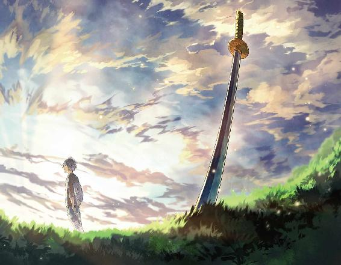
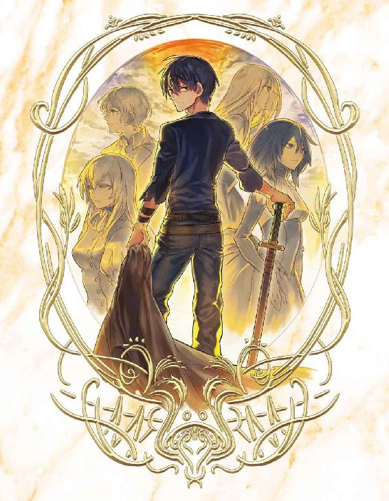
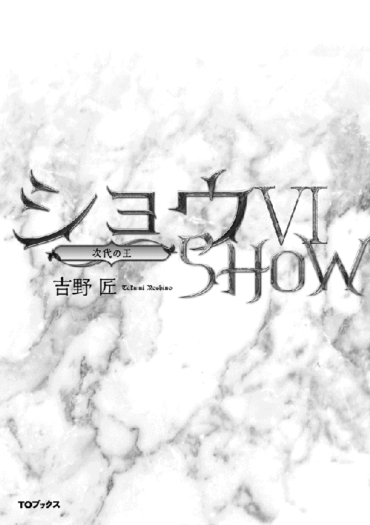
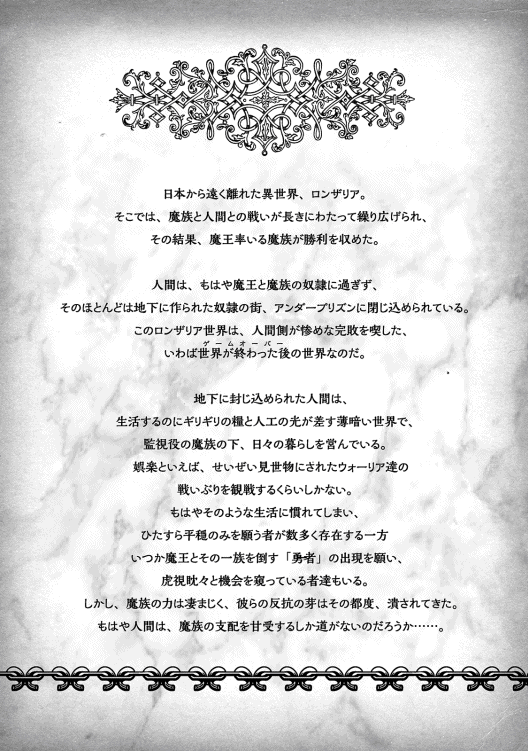
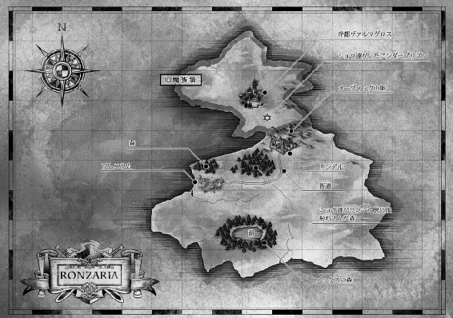
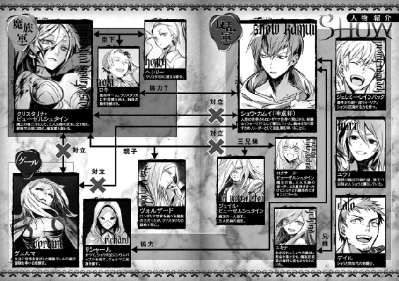
イラスト：天野 英 Hana Amano
デザイン：ヴェイア Veia
マップ制作：藤代 陽 Yoh Fujishiro
序章 魔将の賭け
アルバラン城への突入作戦から、既に三十日あまりが過ぎた。
あの時、危険を察知していち早く城内から逃れたクリスタリカは、この間に帝都ヴァルマグロスへと帰還し、本拠のヴィルヘルム城から命令を下すようになっている。
当初は前線に立つつもりだったが、ショウ達のアルバラン城突入を経験したお陰で、用心深くなったのである。
いや、臆病にはほど遠い彼女のこと、もしも味方が思い通りに動く自信があるのなら、ショウ達の奇襲など恐れはしない。
しかし、最近の魔族軍は魔将クラスの裏切り者が続出したため、元から疑り深いクリスタリカは、もはや味方を完全に信じられなくなっている。
アルバラン城で目の当たりにした味方の不甲斐ない戦いぶりに、うんざりしたというのもある。
そこで万一を考え、しばらく帝都から動かぬ方針に切り替えたのだ。
ただ、このクリスタリカのやり方を不満に思う者も、当然、魔族軍内にいる。
例えば、裏切り者の魔将（とクリスタリカが主張する）であるロキの代わりとして、アルバランの街で新たに駐留中のヴァルクールもそうである。
彼は、未だに魔族軍でクリスタリカに忠誠を誓う、五人の魔将のうちの一人だが、実はロキの古い知己でもある。
ただ、このことはまだ、クリスタリカの耳には入っていない。
ヴァルクールは、当初から「魔族軍を裏切って反乱軍のジェイルの元へ走った」とされているロキのことで心を痛めていたが、お陰で誰にも話すことができず、一人で悩んでいた。
「......やれやれ、頭の痛い話が多いのに、さらにおまえ達か」
街内で本営として利用しているホテルの部屋で、ヴァルクールは彼の前に立つ魔族戦士達を眺めた。
元はロキが指揮する部隊の戦士であり、つまりアルバラン城の戦いで一度は反乱軍の捕虜になり、その後で解放された者達だった。
そして今は、編入されてヴァルクールの下についている。五名ほどいたが、代表して一人が述べた。
「──先程申し上げましたように、我々はアルバラン城内で実際にグールを」
「待て」
自らは机に着いたままのヴァルクールは、片手を上げて発言を遮った。
「そのことなら、もう何度も報告が来ている。グールのことや、ショウ達反乱軍の真意について訴える者は、何もおまえ達が初めてじゃない」
ため息をつくと、ヴァルクールは椅子にもたれて五人を見上げた。
彼自身は私服だが、前線からこっそりここまでやってきたため、部下達は全員が戦闘スーツ姿である。
あたかもヴァルクールを睨むようにして話しており、並々ならぬ熱意が窺えた。
「あのアルバラン城の戦いに参加していた者達の多くが、おまえ達と同じ訴えを持ってきているのだ」
「それではっ」
勢い込んで話を再開しようとした相手を、ヴァルクールはなおも止めた。
「いいから、待て！」
あえて声を潜め、言い聞かせた。
「......ロキの例を忘れるな。仮におまえ達の話が正しいとしても、大声で話して回るのは、得策ではないぞ。今の陛下は、容赦ないお方だ」
老練な魔将であるヴァルクールとしては、密告者の存在などを考慮し、部下達のためを思って忠告しているのだが──あまり効果があったとは思えなかった。
現に、ヴァルクールを見据える部下達は、全員が納得できない表情を見せている。
「......反乱軍のショウ・カムイが話すのを、我々は直接間近に見ました。もちろん、裏切り者とされたロキ様の話もです。正直に申し上げて、どうせ今後我々は、クリスタリカ様についていけないと思います」
仮にも前線の指揮官であるヴァルクールにこんなことをぶちまけるのだから、彼らはこの上なく本気なのだろう。
しかし、だからといってヴァルクールの立場で、「わかった。骨は拾ってやるから、好きにしろ」とも言えない。
それに、いかにアルバラン城内での戦闘に参加した兵士が多いとはいえ、やはり全軍から見れば一部である。
現に、後詰めとしてこの街に来たヴァルクールが直接指揮する兵士は、彼らの何倍もいる。陣中でそんな話が広まれば、最悪、同士討ちが始まりかねない。
ヴァルクールは懸命にその危険性を説き、なおかつ自分の考えも話してやった。
「俺はおまえ達の訴えを無視する気はない。ただ、今の段階でおまえ達が声高に主張するのはまずいと言ってるんだ。だから、まずは俺が陛下に報告をあげる」
話の前半では渋面だったが、後半にきて若者達の顔が明るくなった。
「では、ヴァルクール様はグールの実在を信じてくださるのですね！」
「......少なくとも、信じたいと思っている」
ヴァルクールは重々しく頷いた。
「だからこそ、まずは俺の名前で陛下にご報告をする。実際、そのための使者はとうに送っている。今おまえ達が主張したようなことを、全て報告書に盛り込んであるから、しばらく待て。俺だって馬鹿じゃないぞ？ おまえ達が大嘘を言ってるとは思ってないさ」
『おおっ』
よほど嬉しかったのか、五人はお互いに顔を見合わせて頷き合っていた。
ヴァルクールの目で見ても、とても嘘をついているようには見えない。
（そもそも、あの慎重なロキですら態度を決めたというのなら、もはや疑う余地もないのだがな）
こっそりそう思ったが、ヴァルクールは口に出してはこう結んだだけだった。
「そういうわけだから、俺に万事任せておけ。俺からの報告なら、さすがになんらかの反応はあるだろうさ」
彼らの気を軽くしてやろうと言ったつもりだが、これはどうも逆効果だったらしい。
というのも、今まで破顔していた五人の笑みがたちまち消え、深刻な表情でヴァルクールを見つめたからだ。
どうやら喜んでいたのは、ヴァルクールが彼らを信じたからであって、クリスタリカに報告を送ったからではないらしい。
「......反乱軍のショウ殿やロキ様の話を聞く限りでは、あるいは陛下は思いきった手段を執るかもしれませぬ。ヴァルクール様も仰る通り、あの方は容赦ない方ですから」
代表格の一人がそう言うと、残りの四人も口々に声を上げた。
「お言葉ですが、あのお方は信じられません」
「ヴァルクール様の御身に危険が及ぶかと」
「アルバラン城でも、陛下はいち早く逃れました」
「ロキ様の例を見ても──」
「ああ、わかってる、わかってる！」
ヴァルクールはすっかり顔をしかめて、忠告を遮った。
無精髭まみれの顎をさすり、深々と息を吐いて部下達を眺める。
「だから、言わなきゃわからないか？ 俺はおまえ達が今心配したようなことを承知の上で、陛下の出方を窺ってんだよ」
両手を広げて、言い聞かせた。
「誰かが試す必要があるなら、まず責任者の俺だろ？ 気は進まんがな！」
投げやりに言いつつも、ヴァルクールは自分でもわかっていた。
......もしも疑いが真実であれば、ロキや前陛下や、死んでいった仲間達のためにも、見過ごすことはできない。
第一章 クリスタリカは屈しない！
いつものようにクリスタリカの執務室に報告にきた家令のヘンリーは、ただし、いつもとは違って非常に厳しい表情をしていた。
普段なら邪険にするクリスタリカも、眉をひそめたほどだ。
「なにか悪いニュースらしいわね」
「よいニュースとは言えません」
ヘンリーは主が座す机の前で立ったまま、小さく頷いた。
「アルバラン城での戦いの余波が、じわじわと前線の魔族軍内に広がりつつあります。我々が脱出した後、どうやらショウやロキ達は、捕虜にした兵士達にグールとやらの実在と、前陛下暗殺の真実を告げた上で解放したようで、現在、クリスタリカ様への陰口が増えつつあります」
「......反乱軍を放置しすぎたようね」
クリスタリカは無意識のうちに爪を噛んだ。
「戻ってきた捕虜共を、即座に拘束すべきだった」
まさか、本当にショウ達が即座に解放すると思わなかったのが、そもそもの計算違いだったのだ。
「恐縮ですが、ご報告はまだあります」
「この上、まだ悪いニュースが？」
「はあ」
ヘンリーは恐る恐る告げた。
「ロキに代わって前線のアルバランの街に駐留中のヴァルクール様から使者が来て、今僕がご報告した陰口の内容を、そっくりそのまま報告してきています。そして、言葉を濁らせてはいますが、この内容は真実だろうかという質問をしてきています」
これを聞いて、クリスタリカは思わず顔をしかめた。
ヴァルクールの意図が今一つ読めなかったからだ。もちろん、一番可能性が高いのは、戻ってきた元捕虜からショウ達がバラした話を聞き、純粋に驚いてクリスタリカに質問の使者を寄越したのか──
「......あるいは、ヴァルクールはあたしを試している？」
「僕もそう思います」
独白だったのに、ヘンリーはちゃんとクリスタリカの言いたいことを見抜いた。
「あの方は、あえて自分の名前で使者を送り込み、クリスタリカ様の反応を探っているのではないかと」
「となると、あたしの対応が命運を分けるかもしれないわね......ヴァルクール達はもちろん、このあたし自身の命運もね」
高々と足を組んだクリスタリカは、不機嫌に呟いた。
ここで対応を誤れば......もはや魔族軍は分裂する恐れがある。密かな予想通り、あのアルバラン城内での戦いは、未だに尾を引いている。
しばし沈思したが結論は出ず、クリスタリカは唯一の腹心を見上げた。
「ヘンリー、おまえの意見は？」
「正直に申し上げまして、採るべき道は二つかと」
既に考えていたのか、ヘンリーは打てば響くように答えた。
「グールの実在のみは認めることにして、あくまでもヴァルクールとロキの旧部下達をなんとか懐柔するか......あるいは、この際はアルバランの街に駐留する前線部隊の全てを切り捨て、これ以上の噂の広がりを阻止するかです」
「おまえはどっちがいいと思う？」
クリスタリカは、あくまでヘンリーの意見にこだわった。
もちろん、自分では既に結論が出ているのだが......しかし、今回ばかりは、その決断に自信があるとは言えない。なにしろ、数が数だからだ。
クリスタリカはアルバラン城内から撤退した後、駐留軍のかなりの数を引き抜いて、別の街に移した。
これは当然、万一、後で捕虜が解放された時に備えて、妙な噂が広がらないよう、先手を打ったためだ。
しかし......それでもなお、戻ってきた捕虜の数だけで数百名はいるし、彼らによって真実を知らされた兵士も入れると、どれほどの数になるかわからない。
今回ばかりは、一人や二人を消すのとは訳が違う。
そこでさすがのクリスタリカかも、世界で唯一、自分と運命共同体と言っていい、腹心ヘンリーの意見を聞きたかったのだ。
ヘンリーは大きく息を吸い込んだ後、一気に言った。
「僕は、切り捨てる方を進言致します！」
クリスタリカがはっとなるほど、確信に満ちた言い方だった。
「腐ったリンゴが一つ混じれば、他の無事なリンゴも簡単に全滅します。今、前線で起こっていることは、そういうことなのです。傷が浅いうちに、彼らを始末すべきです」
──クリスタリカ様、ご決断を。
最後にそう付け加え、ヘンリーは深々と腰を折った。
「いいでしょう！」
今度こそ、クリスタリカは迷わなかった。
ヘンリーほど慎重な男が「迷うな！」と暗に決断を促しているのだ。ならば、クリスタリカとて覚悟を決めるのにやぶさかではない。
「おまえの意見を採るわ！ 多少の工夫はいるけど、ヴァルクール達を始末してやる」
クリスタリカは腰を上げ、ヘンリーの眼前に立った。
ぎらぎらと光り、濃度を増していく真紅の瞳でヘンリーを抱き締め、その耳元に囁く。
「よく言ってくれたわね、ヘンリー。やはり、血塗られた道こそがあたしに相応しい。迷うのは禁物だわ」
「......僕は、その覇道にどこまでも従いましょう！」
ヘンリーも感激に震える声で囁く。
「では早速、ヴァルクール達を始末する策を──」
「その必要はないわ、ヘンリー。あたしはもう、覚悟を決めた。これまでのあたしは、まだまだ消極的過ぎたのよ」
クリスタリカは少しだけ身を離し、腕の中のヘンリーに、にこやかに告げた。
「今回は、あたしの足を引っ張る味方だけじゃなくて、ショウ達反乱軍も軒並み始末してやるつもりよ！」
覇気に満ちた声で言い切ると、よほど驚いたのか、ヘンリーは「ふえっ」と素っ頓狂な声を上げた。
側近の驚いた顔を見て、クリスタリカはようやく朗らかに笑うことができた。
クリスタリカが腹心のヘンリーに決意を告げる少し前──。
ヴィルヘルム城の一室に、現時点で魔族軍内で健在な魔将が集まっていた。
......当初、魔将の数は全員で十三名を数えたが、エリーゼ（ユキナ）やロキのように魔族軍から出奔する者もいれば、戦死した者もいたりで、今やクリスタリカ率いる魔族正規軍内には、残る魔将が五名というていたらくになっている。
さらにその五名のうち、ヴァルクールは今、大陸西部の最前線に当たるアルバランの街に駐留しているため、現在このヴィルヘルム城内にいるのは、たった四名に過ぎない。
「少し前まで十三名もいたのに、今や帝都に四名だけとは......随分と寂しい有様になったものだ」
客間に呼ばれた魔将の一人であるダリルが独白し、ぐるりと仲間を見渡した。
といっても、まだ来ていない者がいるので、彼以外にここに来ているのはヴァルディーとトゥースのみである。
まだ出陣の話は持ち上がっていないので、ダリルを含めて三人ともそれぞれ私服である。ダリルもまた、スーツの上着を脱いだリラックスした格好でグラスを傾けている。
ぼさっと立ったまま待つのも芸がないので、客間のキャビネットから酒を出して飲んでいるわけだ。
「それにしても、朋輩を呼び出しておいて、呼び出した張本人のリューゲルトが、まだ来ていないとは」
規律にうるさいヴァルディーが唸るように呟いた。
トゥースも頷き、眉をひそめて空っぽの客間を見渡す。
一応、暖炉に火は入っているので、ここで集まる準備だけはしていたのだろうが、リューゲルト本人の姿はない。
「俺の部屋には、自分ではなくわざわざメイドを寄越して『別館の客間でご相談があります』などと言ってきたのだが......おまえ達まで来ていて驚いたぞ」
「ほほう、それは奇遇だ」
ヴァルディーが文句を中断して、不審そうにトゥースを見た。
「私のところに来たのもメイドで、本人ではなかった」
そこで二人揃ってダリルを見たので、ダリルも肩をすくめた。
「同じくさ。しかし、三名も呼ぶとなれば、いちいち本人が私室を回ってられなかったのだろう。だからそれはいいが、やけに遅いじゃないか」
「うむ。もう約束の時間を半時間も過ぎている」
「本来、私はもう休む時間だぞ」
ダリルに続いて、トゥースとヴァルディーが不満を表明したところで──三名揃って顔を見合わせた。
「ここで飲んで待つのもいいが、この際、あいつの部屋に押しかけた方が早いのではないか？」
「そうだな、それがいいかもしれん」
「睡眠時間を削るほどの用事なら、とうに来ているだろうしな」
ダリルの意見に全員が賛成したところで、まるで計ったようにノックの音がした。
「開いてるぞ！」
ダリルが怒鳴ってやると、当のリューゲルトがつかつかと入って来た......背後に長身の女性を従えて。
それだけならともかく、この女性たるや、辛気くさいローブで頭をすっぽり覆い、しかも目の部分には金属製の仮面までしているのだ。
「おいおい、リューゲルト、なんだその女性は？」
気さくなダリルも、さすがに顔をしかめた。
「わざわざ城の外にある別館に呼び出すんだから、内密の話だと思ったのに、女連れか？」
「言っておくが、陛下に誤解されるような話はごめんだ」
「私もだな。ロキの二の舞はぞっとせぬ」
全員でリューゲルトを問い質すことになったが、本人は妙に穏やかな表情を浮かべたまま、なんの反論もしない。
代わりに謎の女が彼の前へ出て、ローブを取った。
お陰で白銀の髪と銀色のマスクが露わになったが、同時に彼女が胴の部分にぴったりとフィットした金属製らしきアーマーまで装着しているのがわかった。
当然、腰に剣も吊っている。
「リューゲルト、これはどういうことだ！」
ダリルが重ねて問うたが、彼ではなく女が答えた。
「黙って、私の目を見るがいいわ」
この瞬間、ダリルは「見るべきではないっ」と直感で思った。わざわざそんなことを言って着けていた仮面を取るからには、この女の方で、なにか見せたい理由があるということだ。
となれば、それはおそらく精神支配系の魔法か......あるいはそれに近い能力なのだろう。
そこまで予想していたのに、それでもダリルは彼女から目を逸らすことに失敗した。
というのも......マスクを取ったその下の両眼が、燃えるような真紅の瞳だったからだ。
もちろん、自分達魔族も似たようなものなのだが、しかし魔族の瞳は少なくとも人間と共通点が多い。
白目の部分まで薄赤く染まっているなどということは、断じてない。
「その目の特徴......まさかおまえ」
冷静さと剛胆さを合わせ持つヴァルディーが、信じがたいような声音で囁く。その肩が震えているように見えるのは、おそらくダリルと同じく、身体を動かそうとして叶わないことに気付いたからだろう。
視界には入ってないが、呻き声を聞けば、トゥースも同じ有様だと知れる。
急速に焦燥感にかられ、ダリルはとにかく女の瞳から目を逸らすことに全力を尽くした──否、尽くそうとした。
しかし、その試みは全くの無駄であり、むしろこの女の真紅の瞳が視界一杯に広がりつつある。まるで鮮血を湛えたような不気味な赤い色であり......そして、ダリルの魂の奥底まで見通すような眼力だった。
「時間がないから、早急に済ませよう」
反響を伴う女の声が言った。
「これから言うことを覚えておくがいい......私の命令は絶対だし、拒否することも疑問に思うことも許さないわ」
その声がかかる頃には、最後まで抵抗していたダリルも、どんよりと曇った目で女を見つめていた。
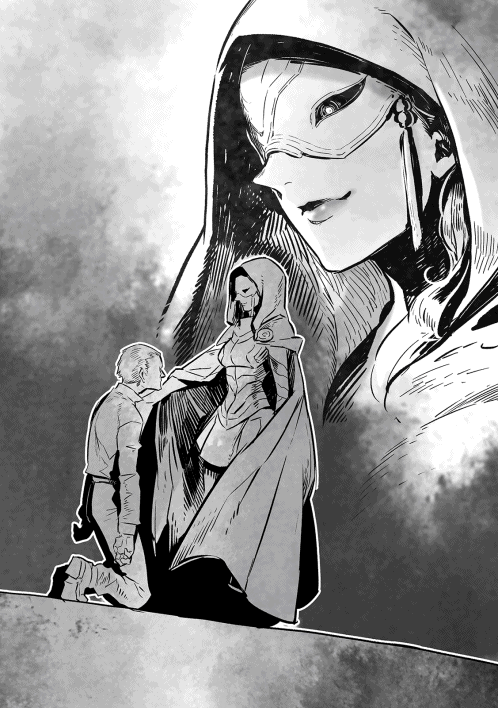
☆
アルバラン城内での戦闘は、ショウの仲間に大きな爪痕を残した。
魔将のノイマンが戦死したし、ジェイル・ビューゼルシュタインは、まだ絶対安静の身である。
それは、ショウの仲間のジェレミーも同様だった。
いや、むしろジェレミーの傷の方が、ジェイルより深いと言えるだろう。
彼は実力はともかく、ジェイルと違って普通の人間であり、回復力も魔族並とはいかないからだ。
こと治癒能力と回復力にかけては、人間は魔族に遠く及ばない。
ただ、そのような時であっても、事件は待ってくれない。
ソムニウムに戻っていたショウ達に、驚くべき使者が面会を求めてきた。
魔族戦士というだけならまだしも、彼は今や反乱軍にいるロキの代わりに新たに前線へ派遣された、駐留軍指揮官からの使者だという。
当然、ショウは主立った仲間と一緒に、彼と話し合いの場を持った。
まあどのみち、その使者は「反乱軍指揮官のショウと直接話したい！」というご要望なので、否応なく会う必要があったのだが。
......この申し出はあくまで非公式なもので、内密にしたい。
そういう使者の要望に応え、ショウは会談の場を自分の屋敷に設定した。つまり、仮の住居に定めた木造家屋の屋根裏部屋に彼を通し、テーブルに着いて話し合うことにしたのだ。
本来ならジェイルの屋敷に集まるところだが、あいにく彼は今、起き上がれる状態ではない。あくまでやむなくの措置である。
参加者はショウと使者は当然として、あとはユキナとロクサーヌとユウリ、それにデイルとリシャールが主だったところで、後は魔族側として、ロキと副官のアシュレイがジェイルの代理としてきている。
テーブルに着けない者は、それぞれ窓側に立つなりベッドに座るなりしているので、そう広くもない屋根裏部屋は、満杯の有様である。
皆、この会見が容易なものではないことに気付いているのか、デイルですら無駄口を叩かずに静まり返っている。
「狭いところですまん。それで、遠路はるばる来て話とは？」
ショウが早速切り出すと、カムフラージュのためか魔族にしてはみすぼらしいセーターを着た彼は、低頭して話し始めた。
「私はベイルと申します。今からお話しすることは、魔将ヴァルクール様の申し出だとお考えください」
また随分と迂遠な言い方をすると思ったが、それはショウの勘違いだった。
次にベイルは、要点をずばり切り出したのだ。
「魔将ヴァルクール様は、部下全員を引き連れ、反乱軍に投降したいとの仰せです」
「おおっとお！」
ショウに代わって、窓際に立つデイルが驚いたような声を上げた。
ただ、別にデイル以外の面々も、だいたいは度肝を抜かれた様子である。唯一、ショウの右隣に座るユキナのみが、期待に満ちた顔で使者を見た。
「それって、つい最近、おにいちゃんがアルバラン城で解放した魔族軍の捕虜が、帰陣して真実を伝えたから？」
「そう、その通りです、エリーゼ様──いえ、ユキナ様」
まだ若者に見える使者は、ユキナを眩しそうに見て大きく頷く。
「彼らは、新任の駐留軍司令官であるヴァルクール様に頻繁に面会を求め、それぞれ少人数ごとに集まり、アルバラン城で見たことを話しています。かく言う私もその一人であり、城内で解放された捕虜の一人です」
張り詰めた顔で言う。
「それは......覚えてなくて悪かった。しかし、またエラく急な話じゃないか？」
探りを入れる目的でショウが尋ねたが、例によってデイルが台無しにした。
「つか、罠じゃないのかー！」
同じテーブルに着いてないのに、言い辛いことを外野から、しかも無造作に声に出してしまう。
「おいデイル！」
「だって、当然の疑いだろー」
デイルは堂々たる開き直りを見せてくれた。
幸い、ベイルとやらは気を悪くした様子を見せずに頷いてくれた。
「無理もないことです、あの戦いの後ですし。ただ、これはヴァルクール様としても、やむにやまれぬことでもあるのです」
彼は同じテーブルに座すロキを、特に見つめて言う。
「陛下──いや、クリスタリカめは、今回、素早く手を打とうとしています。つまり、帝都ヴァルマグロスに残るほぼ全軍を出陣させ、まずはヴァルクール様が駐留する、アルバランの街に押し寄せようとしています」
「そ、それはまさか、アルバランの味方をヴァルクール殿ごと葬るために!?」
ロクサーヌが息を詰めたような顔で訊く。
無情にもベイルは頷いた。
「我々はそう思っています。これは憶測ではなく、ヴィルヘルム城内の数少ない仲間からも連絡が届いているのです。ヴァルクール様はアルバラン城で解放された兵士達の訴えを聞き届け、帝都に『グールは実在するし、ショウ殿達の軍勢は、そもそも戦いを回避する意図で動いている』とのご自分の予測を、クリスタリカに報告しました。その結果がこれです！」
ここでベイルは、憤懣やるかたない表情でテーブルを叩いた。
「クリスタリカは一切の返事を寄越さず、すぐに再度の──そしてほぼ全軍に等しいほどの軍勢を率いて、ヴァルマグロスを出陣することを決定しました。しかも、もはや帝都内では、我々は裏切り者だとされているそうです！」
憤った声音だったが、彼らにしてみれば憤然として当然だろうとショウも思う。
「クリスタリカのやりそうなことだ」
腕組みした魔将のロキが、盛大に顔をしかめた。
「ロキ様の時も、あの女は有無を言わさず、地下牢に放り込みましたな」
つい最近の戦いを思い出したのか、副官のアシュレイが嫌な顔で追従する。実際、クリスタリカのやりようは、常に悪い意味で果断速攻で、ショウ達にしてみれば、実に対応が難しい。
「しかし、今回はもっと身も蓋もなさそうだな。どうせ向こうも、アルバラン城と同じ轍を踏むのは願い下げだろうし」
ショウはむっつりと言った。
「多分、あいつは大がかりな賭けに出たのかもしれない。つまり、ヴァルクール殿達を懐柔するよりは、余計な情報を隠匿したまま、駐留軍ごと叩き潰すつもりだ。腐ったリンゴは捨てちまえってわけさ」
「我々に出陣の予告が来ない以上、ヴァルクール様もその可能性が高いとお考えです」
ベイルは口をへの字に曲げて、ショウの意見に賛成した。
「ただ、それは目的の一つに過ぎないだろうとも、ヴァルクール様は仰いました。アルバランを制圧して事実を糊塗した後、軍勢はそのまま南下して、このソムニウムに押し寄せてくるでしょう」
無理もないが、部屋の中がどっとざわめいた。
特に、ロクサーヌの憤りぶりが際立っていて、ショウの左隣に座っていた彼女は、テーブルの上で拳を固めていた。
「父上を殺した挙げ句、勝手なことばかりしてえっ」
「実は悪いニュースはまだあるのです」
申し訳なさそうに、ショウの正面に座るベイルが全員を見渡した。
「これは、まだ帝都から流れてきた情報で、噂の段階に過ぎませんが」
わざわざそう断りを入れ、とんでもない話をぶちまけてくれた。
「今回なぜか、クリスタリカは隠匿していた太古の書物を持ち出し、ソウルバイブルなる未知の魔法を全員に習得させようと──」
途中でまたデイルが叫んだ。
「で、でたぁぁああ!?」
しかし、今度ばかりはショウも咎めなかった。
そもそも自分も「うわぁ」と口走っていたし、続いてベッドに座っていたユウリやリシャールがそれぞれ実に嫌そうな声を上げていた。
「阻止した方がよくないですか、ショウ」
特にユウリは、立ち上がって述べたほどだ。
「確か、正規の手続きを経ずしてソウルバイブルを習得すると、大きな反動があるはずでは？」
「わかってるよユウリ、わかってる」
自分もすっかり顔をしかめ、ショウはユウリを抑えるように手を上げた。ベイルが目を瞬いていたので、ショウはソウルバイブルの知られざる危険性を懇切丁寧に教えてやった。手段を違えると、ソウルバイブルは術者にとんでもない負担をかけるのだ。
いや、それどころか正規の手段で習得しても、術者への負担は免れない。
なのに上辺の知識だけで習得した気になると、確実に術者の寿命を大幅に縮めるだろう。
「俺がユキナから聞いた限りじゃ、以前はギーガン・ロシュフォードが所持していたソウルバイブルの写本をクリスタリカが入手し、自分でこっそり習得しているらしいが──それによってあいつは、自分でも知らないうちに身体に大きな負担をかけているはずなんだ。ただ......限界を超えた場合は、もう感じなくなっているかもしれないが」
「限界を超えた場合って？」
ユキナが身を乗り出したので、ショウはこれにも答えてやった。
当事者なのだから、むしろぜひ知っておいてもらいたい......迂闊に使わないように。
「実は、俺達みたいにソウルバイブルを使って苦しい思いをしているうちは、まだマシなんだよ。幸い俺はそこまでいってないが、ある段階を過ぎると、もう何も感じなくなる。どれだけ大きな術を使おうと、へっちゃらになってしまうわけさ」
「いいことじゃないかー」
あっけらかんとデイルが言ってくれた。
「全然、よくないんだ！」
馬鹿な突っ込みに、ベッドで大人しく座っていたリシャールが大声を上げた。
「とんでもない話だよ。それはつまり、瀕死の重傷を負った怪我人が、もはや痛みを感じなくなるのと同じだ。写本を利用したというギーガン・ロシュフォードは、アンダープリズンで随分と派手にソウルバイブルを使ったらしいが......おそらくそれも、もう末期症状だったはずだ。わざわざ自分で死の淵まで近付いていたということさ」
「そう、前にもその話は出たが、あいつは戦死してなかったとしても、どうせ遠からずコロリと頓死してただろうな」
ショウが渋面で呟くと、ユキナが長々とため息をついた。
ギーガンを倒したのは、魔将時代のユキナことエリーゼ・シュトラウスなので、そう聞いて多少は気が休まったのかもしれない。
しかし、ショウ達の話を聞いていたベイルは、逆に顔から血の気が引いていた。
「となると......このまま座視すれば、魔族軍の兵士達は全員が危ない状態になるということですか」
「まあ、ソウルバイブルの習得率は、習得方法に限らず一割以下に過ぎないから、全員ってわけじゃないが。だいたい、そんなすぐに覚えられるもんでもないし」
「そうそう、俺のような天才適合者だけが、あの魔法を覚えられるからな！」
デイルが無駄に胸を張ったが、ショウはきっぱりと無視した。
「でも、放置しておくのはもちろんまずいね」
ショウは頷いて、ベイルをじっと見つめた。
「細かい部分は今から詰めるとして──まずは戻って、ヴァルクール殿に伝えてくれ。もちろん、俺達は貴方達を喜んで受け入れると。同時に、ソウルバイブルの危険性を広めてくれると助かる。当然、俺達もこれから意図的にこの情報を広めるが......しかし、単なる工作と見られる恐れがあるな」
「ショウの言う通りです」
ベッドを離れたユウリが、ショウの背後に立って肩に手を置いた。
ロクサーヌとユキナがあからさまに睨んでいたが、どこ吹く風である。
「敵に習得させないため、あえてそんな噂を流している......そう見られるでしょうね」
「だが、既にある程度習得しているクリスタリカは、もう気付いているはずだ......この魔法の危険性にな」
ショウは厳しい顔つきで言った。
「知っていてなお広めようと言うんだから、今のクリスタリカは、相当な覚悟かもしれないな。あいつ自身、もう後がないってことだ」
ショウの言葉を聞き、仲間達はそっと顔を見合わせた。
あの新たな魔王がどれだけ追い詰められているか、ここにいる全員が改めて知らされたような気がしたのである。
......それは言い換えれば、最後の戦いが迫っていることと同義でもあった。
ベイルとの慌ただしい話し合いが終わった後、もちろん彼はすぐに上官であるヴァルクールの元へと帰っていった。
ショウ自身も、報告のために仲間のジェレミーの元を訪れた。
彼はソムニウム内で臨時の病棟として使われている庁舎跡で療養中であり、個室の一つで休んでいる。
ノックに続いて部屋へ入ると、ジェレミーがすぐに身を起こそうとしたので、ショウは慌てて駆け寄って止めた。
「おいおい、無理すんなって」
「......すまない」
身体を支えるようにしてシーツへ戻すと、ジェレミーは掠れた声で礼を述べた。
元々の怪我は斬撃を浴びた傷だが、彼は直後にクリスタリカが放った攻撃魔法、それもソウルバイブルの術を食らっている。
そのせいもあってか、治癒魔法も今一つ効果が薄く、長期の安静を経てようやく起き上がれるところまでは回復したが──。
完治には、まだまだかかりそうだった。
「毎日見舞いに来なくてもいいのにさ」
ジェレミーが照れたように笑う。
「いやぁ、俺もあまりおまえの邪魔はしたくないけどな。なにしろ、一昨日来た時には、女の子の見舞い客と鉢合わせしたからなあ」
ショウは冗談めかして言った。
「あの子はそう親しいってわけじゃないよ」
なぜか慌てた様子でジェレミーは首を振った。
「実のところ、僕も名前を思い出すまで、だいぶかかったほどでね──」
言い訳の途中で、ジェレミーはショウを見て首を傾げた。
「......どうかしたかい？」
病床にあっても、窓から差し込む陽に金髪が煌めき、うっかりするとショウですら「こいつはホントに元ウォーリアか？」と疑問に思うほどである。もっとも、前に本人がこっそり告白したところでは、元々は大貴族の子息らしいので、むしろウォーリアとして戦っていた時期が、彼らしくないのかもしれない。
「まあ、見舞い目的もあるんだが、今日はついでに報告しておこうと思ってな。......アルバランに駐留中のヴァルクールという魔将が、部隊ごとそっくり俺達に投降を申し出てきた」
「凄いじゃないか！」
さすがにジェレミーの声が弾んだ。
「やはり、アルバラン城で捕虜を全員解放したのが効いたかな？ なにしろ彼らは、リシャールを見たし、君達の話も聞いて納得してたからね」
「かもしれない」
ショウは素直に認め、居住まいを正した。
「その代わり、悪いニュースもあるんだ」
そう前置きして、クリスタリカの暴挙、つまり魔界の帝都ヴァルマグロスに残る魔族軍の全軍を南下させ、アルバランに押し寄せることと──戦士達へソウルバイブルを習得させるという情報を告げた。
「なる......ほど」
慎重に頷いた後、ジェレミーは窺うようにショウを見た。
「見たところ、どうやら君にはもう策があるようだが？」
「策ってほどでもないが、まあ考えはある」
ショウは肩をすくめた。
「大前提として、全面的な衝突は避けたい。だから仲間から不満は出ても、正面対決は避け、クリスタリカを誘い出してこれを討ちたいと思う。もちろん、ヴェルマもだが......こちらはまだ、所在が掴めない」
一気に言うと、真剣そのものの目つきでジェレミーが重ねて訊いた。
「具体的に、誘き寄せる方法は考えているのかい？」
「......あいつはきっと、ソウルバイブルに並々ならぬ関心があるだろうから、それを餌にしようと思うんだ」
まだ検討段階の策を話して聞かせると、ジェレミーはしばらく沈思した後、賛同してくれた。
「悪くないね！ 彼女は自分を聡いと信じているだろうから、引っかかる可能性は大きいと思うよ」
「おまえに保証されると嬉しいね」
ショウは部屋へ入ってから初めて、破顔した。
ジェレミーの判断はおおむねいつも正しいので、こいつが是としてくれるのは、非常に心強いことだった。
それはいいが、直後にジェレミーはさりげなく断言してくれた。
「その策は策として、もちろん今回も僕は戦うよ。ここで大人しく療養しているつもりはない」
「おいおい、まだ本調子じゃないだろう」
「かもしれないが、なんとなく最後の戦いが間近に迫っている気がするのさ、僕は」
ジェレミーはてきめんに渋面になったショウの顔を真っ直ぐに見た。
「君には話したけど、僕はかつて、戦うべきに戦えず、大きな悔いを残すことになった。あんな思いをするのはもうごめんでね。誰がなんと言おうと、この戦いには参加する」
「気持ちはわかるが......俺はもう、仲間を失いたくないんだ」
ショウもまた、目を逸らさずにジェレミーを見つめる。
「ダルトンが戦死したし、興行主のザックもだ。魔族仲間の中にも、戦死した者が大勢いる。本来は無用の戦いなんだし、無理する必要なんかどこにもないだろう」
「無用といえば、君にとってだって、本来この戦いは無用のはずだ」
ジェレミーはきっぱりと言い切ってくれた。
「君はフォリナーであって、この世界の元々の住人じゃない。以前は妹さんのために戦うという前提があったが、そのユキナちゃんももう戻っている。つまり、僕以上に君の方こそ戦う理由がないだろう」
「いや俺にはっ──」
「僕も君と同じだよ、ショウ・カムイ」
ジェレミーは勢い込んで言いかけたショウを、静かに遮った。
どこか透徹した笑みを浮かべていて、手を伸ばしてショウの肩に手を置いた。
「今、君が何を言おうとしたのか、僕にはよくわかる......だから、同じ言葉を僕も君に返そう。今の僕には、家族も恋人もいないが、まだ君や他のみんながいる。それだけで、今戦う理由には十分過ぎるのさ」
ショウは顔をしかめて聞いていたが、やがて渋々と口元を綻ばせた。
「......その理屈はズルいな。止めようがなくなるじゃないか......まあ、どのみちおまえみたいな頑固なガキは止めても止まらないかもしれんが」
ニヤッと笑うと、ジェレミーも声を上げて笑った。
「前にこっそり教えただろ？ 僕は君より年上さ。そうは見えないだろうけどね」
「おまえの顔を見る度に疑っているところさ！」
むっつりとショウは答えたが、結局は堪えきれずに笑ってしまった。ジェレミーも久しぶりに楽しそうに笑い声を上げ、部屋の中にウォーリア仕込みの馬鹿笑いが響き渡る羽目になった。
しかし──ショウは内心では相変わらず危惧していた。
さっきジェレミーがふと見せた寂しそうな微笑み......あれは、どこか自らの死を覚悟しているように見えたからだ。
魔族軍と反乱軍の全面対決が迫っているという情報は、なぜかあっという間にソムニウム内に伝わった。
現時点ではまだヴァルマグロスから新たな敵が出陣したという確報も出ていないのに、不思議なことに住人達は全員がこの噂を信じていた。
そのせいか、どちらかというと陽気な笑い声が絶えない街中は、いつになく静かな緊張感に包まれていた。
ある者は親しい友や仲間の元を訪れて最後の挨拶を交わしたし、ある者はただ静かに家に閉じこもり、出陣の命令を待っていた。
ただ、普段から馬鹿騒ぎと喧噪が大好きな元ウォーリア達の多くは、あえて違う時間の過ごし方をする者が多かった。
例えば、仲間と連れ立って酒場へ繰り出し、浴びるほど酒を飲んで馬鹿騒ぎに興じるというわかりやすい連中が大勢いたし、さらにわかりやすく、近場の街にある娼館に走る者もいた。
そんな中でもデイルは、仲間うちではもっとも微笑ましい時間を過ごしていたと言えるだろう。
すなわち、ヴァルクールの使者との軍議を終えた翌日から、日頃から唾を──いや、目をかけていた女性の元へ走り、全力で告白していたのである。
ショウは、仲間内の噂──大抵はニヤニヤ笑いと共に語られる噂で既にデイルの盛んな行動を知っていたが、まさか自分がその場面に出くわすとは思いもよらなかった。
というのも、自宅代わりの屋敷へ戻ると、入口前にデイルとユキナが立っていて、なおかつユキナが深々と頭を下げていたのである。
「ご、ごめんなさい！」
物凄く申し訳なさそうに声を潜めていたが、あいにくショウにもきっちり聞こえた。
しかも、デイルは口を半開きにして、この世の終わりを見たような顔をしている。
「おいおい」と声をかけたショウの方を向きはしたが、全然目の焦点が合っていなかった。
呆然自失というのが、そのまま絵になったような案配である。
「冗談だろ、おまえまさか本当にユキナにかあ！」
さすがに察したショウが文句をつけたが......反応は劇的だった。
というよりも、デイルは最初からショウなど見ていなかった。
「あぁああああああっ」
頭を抱えて前後に振り、奇妙な叫び声を上げたかと思うと、そのままダッシュで家の前から走り去ってしまった。
「ひぎゃあああああっ」
角を曲がって消えた後も、雄叫びがここまで聞こえた。
「ひぎゃああ......て、なんだなんだあいつ」
ショウはぎこちなく首を巡らし、ようやく背後から来た兄に気付いた妹を見やる。
口元に手を当てていて、少し顔が赤くなっていたが......こちらはおおむね、いつも通りだった。
「訊かずにはいられないから訊くけど」
ショウは両手をふわふわと動かし、ぎこちなく声に出した。
「......あいつ、おまえに告白してた、とか？」
まさかなあ、そんなはずないよなあ、今の中学生の告白場面みたいなのは、他の何かだよなあ？ と続けて言いかけたのだが、その必要はなかった。
「う、うん」
最悪なことに、ユキナはしっかりと頷いてくれた。
「ふざけやがって！」
今頃になってむらむらと怒りが込み上げ、ショウは無駄に声を震わせた。
「ユキナに迫ろうとは、ふてぇ野郎だ！」
親馬鹿を具現化したようなセリフを吐いてしまう。
「ねえ、ユキナはちゃんと断ったよ」
独白に割り込むように自己主張すると、ユキナはショウの上着の袖を引っ張った。なぜか随分と真剣な目つきであり、気迫がこもっていた。
「お、おお......あいつはいいヤツではあるが、おおむね正しい判断だと思うぞ」
妹が何を言いたいのか理解できず、ショウは目を瞬く。
「そうじゃなくて！」
ユキナはじれったそうに言い放ち、ついでに思い出したのかいきなり愚痴った。
「だいたいデイルさんって、ユキナだけに告白してるんじゃないもの。数日前はロクサーヌさんに告白してたし、その前はよく行く雑貨店の元女性ウォーリアに告白してたらしいよ。あ、他にも一杯」
「ろ、ロクサーヌにもかっ」
ショウはめまいがしてきた。
「くそっ、あの野郎っ。自分こそエロガキじゃないか！」
改めて怒りが込み上げ、ショウは拳を固める。
「十把一絡げで、人の妹にまで手を出そうとするとはっ」
「とにかく、ユキナは断ったんだから！ いい、おにいちゃん？」
また盛大に呪い文句を吐きそうになったショウを、ユキナが腕を引いて無理に自分の方を向かせる。
昔のように擬態魔法ではなく、今は素のままの薄赤い瞳でショウをしっかり見つめ、なにやら期待するような目つきだった。
ショウにしてみれば、妹が何を待っているのか、さっぱりわからないのだが。説明もなしに「後はわかるよね？」的な視線で見られても、困るのである。
困るといえば、ショウの屋敷は街のメインストリートからそう離れていないので、割と頻繁に家の前を人が通る。
彼らのほとんどは顔見知りのウォーリアなのだが、いちいち兄妹のやりとりをニヤニヤと眺めつつ通り過ぎるのである。居たたまれないことおびただしい。
ショウのそのような焦りを悟ったのか、じっと返事を待っていたユキナは、急激に機嫌が悪くなった。年齢相応に頬を膨らませ、「もうっ」と声を上げる始末である。
「ユキナの気持ちは知ってるはずでしょ！ ここまで言えば、わからないかなあ......ユキナが何を待っているのかっ」
「ええっ」
謎かけのような問答に首を傾げていたショウは、飛び上がりそうになった。幾ら鈍いとはいえ、そこまで言われれば、さすがに予想はできる。
「いや、しかし俺達はおまえ」
「別に血は繋がってないよね！」
ショウより先にユキナがずばっと指摘する。
「じゃあ関係ないよ。これからゆっくりとお互いの役割を変えていけばいいだけで」
いつの間にかショウの両手を握っていたユキナは、熱心に言い募る。あと、これもいつの間にかだが──互いの距離がやけに近い。もう胸に飛び込む二秒前くらいと言っていいほど近い。
ここへきて、さすがにショウも固唾を飲んでユキナを眺めた。
正直、女の子として意識したことがなかったかと言えば、それは嘘になる。少なくとも、再会してからは。
「......それは確かに俺も」
「──っ！ それは確かに俺もっ」
なぜかユキナが、銀髪を舞わせて本当に胸に飛び込んで来た。クリスマスプレゼントを開ける寸前の子供のように、きらきら光る瞳でショウを見上げる。
「なになに、確かに俺もなにっ、ねえねえねえっ」
「た、確かに俺もだな──」
ユキナの勢いにたじたじとなり、身体にくっついた胸の柔らかさを意識したショウが、それでも続きを述べようとしたその時──。
ふと屋敷の二階を見上げてしまい、思わず「おわっ」と声に出してしまった。
窓から、なぜかロクサーヌとユウリが二人揃ってじっとりとこちらを見下ろしていたからだ。気配には敏感なはずの自分が気付かなかったのは意外だったが、こっそりと今のやりとりを見張られていたことの方がよほど驚く。
ただ、ユキナはショウに釣られて上を見上げ、二人に気付いても、「もう、いいところだったのに！」と普通に文句をつけただけだった。
ただ、それを聞いた途端、やたら緊迫した顔で見下ろしていたロクサーヌが、今更のように窓を開けて怒鳴った。
「なにを勝手に抜け駆けしてんですかーーーっ」
「そう、そうよ！」
こんな時に限ってユウリが即座に賛同して、これにもショウは驚いた。そもそも、この騒ぎのお陰で、有り得ないようなスピードで野次馬がこの場に集結しつつあり、もはや周りは祭り会場のようになってしまっている。
皆が固唾を呑んで（言い換えれば愉快そうに）ショウ達のやりとりを眺めているのだ。当事者としては居たたまれなかった。
「ふーんだっ。誰がなんと言おうと、ユキナはおにいちゃんと結婚するんだもん！ 他の人の意見なんか関係ないもんっ」
......おまけにユキナが可愛い舌を出して二人を挑発し、ショウの腕にしがみついてしまう。当然のように、周囲がどっと湧いた。
「おぉおおおっ。盛んだな、帝王は！」
「こりゃデイルが、泣きながら走って行くわけだ」
男共はおおむねニヤニヤしていたが、たまたま駆け付けてきた女性ウォーリア達からの、思わぬ言い分もあった。
「ちょっとショウ！ あたいも候補だろ？ 忘れないでよっ」
「誰よあんたっ。あたしこそ、ショウと一緒にお茶したことがあるし！」
「売れ残りは黙ってなよっ。あのユキナって子や魔族娘と張り合えるなら、あたいだろっ」
「はあっ!? あんた、鏡を見たことあんのかい！」
「なんですってえっ、現役時代の決着つけるかいっ」
「おおう、女ウォーリア同士の喧嘩だあっ」
「おまえら、近所迷惑だからいい加減にしろーーっ」
遅ればせながらショウが喚いたが、その声は誰の耳にも入らなかった。
☆
帝都ヴァルマグロスのヴィルヘルム城にいるクリスタリカは、出陣を控えて魔界領内に大規模な動員をかけていた。
......最終的な目標は反乱軍の撲滅とはいえ、まず攻撃の血祭りにされるのは、人間ではない。アルバランの街に駐留する魔将ヴァルクールと彼の部下達である。
ソムニウムへの進撃は、その後のことなのだ。
クリスタリカは当初、さすがにこの命令に対しては、帝都に残る魔将達から反対されるだろうと思ったのだが──意外なことに、少なくとも「魔将達から」は、一切の反対がなかった。
ただし、彼ら四人の配下達はさすがに大勢が動揺し、上官である魔将にクリスタリカへの進言を直言したらしいが、驚くべきことに、その直言は全て魔将本人によって握り潰された。つまり、クリスタリカへ部下の不満を告げることもなく、彼ら四人は黙々と戦準備を始めたのだ。
もちろん、これは表面だけを見れば、クリスタリカにとって大いに都合がよいことである。下の連中が何をどう言おうが、どうせヴァルクールの粛清を強行するつもりだったのだ。
その上で、ソムニウムのショウ達を叩き潰す！ この方針に変更はない。
ないが......腹心のヘンリーから「城内に残る魔将の四名は、全てクリスタリカ様の命令に従い、迅速な戦準備を始めています」と報告を受けた時、クリスタリカは微かに違和感を抱いた。
ダリルを始めとする手元に残った四名の魔将は、先のロキとは違い、元かられっきとしたクリスタリカ派ではある。しかし......今回の命令はその彼らにとっても、かなり抵抗があってしかるべきなのだ。
いや、むしろ唯々諾々と従う方がおかしい。
「......これまであたしの勘が外れたためしはなかったわ。この際、彼らに直接話を聞いた方がよさそうね」
普段、公の行事以外は魔将達との余計な接触は持たぬことにしているクリスタリカも、今回はさすがに自分の勘を優先した。
なにしろ、今は出陣間際なのだ。余計な危惧は、少しでも減らしておきたい。
直接会って話してみれば、抱いた違和感の原因もはっきりするかもしれない。
そこで、一人ずつ話してみることにして、まずは一番与しやすそうなダリルを執務室に呼んだ。
ダリルの魔将としての実力は疑うべくもないが、この男はさばさばしていて話しやすい戦士であり、しかも「主君が誰であろうと、俺は魔将としての責務を果たすのみだ」と普段から公言している男だった。
要は一番、腹を探りやすい戦士なので、真っ先に呼んだのである。
ただ、魔将を一人ずつ自分の執務室に呼ぶとなると、時期が時期だけにまたいらぬ噂が広まる危惧がある。そこでクリスタリカは、この会見に限ってはわざわざ周囲の護衛を遠ざけ、こっそり行うことにした。
その用心深さが──今回は裏目に出るとは知るよしもなく。
「ダリルです！ ご命令に従い、参りました」
「入っていいわよ」
時間通りにダリルの声がして、ドアを開けてスーツの上着を脱いだ彼が入って来た。
クリスタリカが眉をひそめたのは、そのダリルが腰に剣を帯びていた上に、彼の背後からぞろぞろと三人の男が同じく入って来たことである。
トゥースにヴァルディーにリューゲルト......ダリルの朋輩であり、彼の後から呼びつけようと思っていた残りの魔将達だった。
しかも、全員が同じく武装している！
「ちょっと待ちなさい。今呼んだのは、ダリルだけのはず！ それと、あたしの部屋に武装して現れるなんて、無礼でしょうっ」
叱声を叩き付け、立ち上がったクリスタリカは──しかし、最後にふらりと入って来た女性を見て、息を呑んだ。
顔の特徴や、額を露わにして後頭部に流した白銀の髪、それに上半身に纏う薄い金属製の防具など、目に入った情報は多いものの、クリスタリカの視界を占有したのは、女の真紅の瞳である。
自分達魔族とは似て非なる瞳であり、白目の部分が全く見当たらない。中心から外側に向かって、鮮血のような赤い色がグラデーションのように広がっている。
（なにか──おかしいっ!?）
とっさにそう思ったクリスタリカは、その場で奥の部屋へ駆け出そうとしたが、なぜか身体が意のままにならなかった。両手を執務デスクに置き、立ち上がって相手を睨んだ姿勢のまま......指先一つ動かせないのだ。
後から入って来た大柄な女の目を見た途端、文字通り、彼女の視界の全てがその瞳で覆われてしまった。
（くっ。せめて、ヘンリーを同席させるべきだった！）
「ふふふ......わざわざ絶好の機会を設けてくれて、感謝するぞ......新魔王クリスタリカ」
女は鮮やかな色の口元だけで笑った。
「まさか、上手くおまえに接近できる口実まで作ってくれるとは、有り難い限りだわ」
後ろ手に静かにドアを閉めると、ダリル達魔将四人が、彼女の従僕のごとく左右に分かれて控える。
女は、クリスタリカから目を離さないまま、静かにデスクの前に立った。
（この強固な縛りは、まさか太古の昔のグールっ!?）
脂汗を流して女を睨み返しつつ、クリスタリカは気力を振り絞って身体を動かそうとする。何が起こっているにせよ、今ここで頼りになるのは、自分のみなのだ。
しかし......どれほど力を振り絞っても、せいぜい左手がわずかに動いたのみだった。
「幸運と私のお膳立てが重なったとはいえ、腐っても魔王の座にあるだけのことはある。片手を動かせただけでも、大したものだが......おまえにはそれが限界だろう」
女は小憎らしいほど落ち着き払って笑った。
「だが、安心するがいい。私はおまえを殺しにきたのではない。今のところ、おまえにはまだ利用価値がある。......ただ、そろそろ私も埒を明けたくてな。この四人の魔将同様、本当の意味で、このヴェルマの手駒になってもらおう」
「......くっ」
クリスタリカは言い返そうとしたが、あいにく言葉にならなかった。
心の中に真っ黒な絶望と、それに倍する怒りが渦巻いている。その怒りこそが、クリスタリカの原動力だった。
（左手、左手に集中するのよ......）
呪文のように心の中で唱える間も、ヴェルマと名乗った女は、瞬きもせずにクリスタリカを見据えている。
「今から指示を与えるから、よく聞くがいいわ」
物理的な圧力を感じるような、禍々しい視線を向けたまま、ヴェルマはゆっくりと命令を口にした。
☆
ヴェルマとやらが出した命令そのものは、さして難しいものでもややこしいものでもなかった。
一部、気になりはしたが、クリスタリカの当面の計画の邪魔になるものではない。本当に邪魔になりそうな時が来た時は、あの女に思い知らせてやればいい。
ヴェルマと役立たずの魔将四人が部屋を出て行った時、クリスタリカは茫洋とした瞳のまま、執務室の扉を眺めていた。
最初と同じく、執務デスクに手をついたまま。
......いや、正確には元のままというわけでもない。当初はデスクに両手をついたままの姿勢で固まっていたが、今や左手がデスクの下に隠れている。
「くく......くくくっ......」
五名の足音が遠ざかり、もはや安全だと悟ると、クリスタリカはようやく呆けたような表情を崩し、肩を揺らして笑った。
ズキズキと傷みはあるが、今は満足感の方が大きい。
不意打ちは食らったが、少なくともあの女に一杯食わせることはできた。
「あたしをナメるなっていうのよ、時代遅れの大女」
クリスタリカは舌なめずりして視線を落とす。
かろうじて動いた左手を使い、こっそりと自分の太股に指を突き刺していたのである。執務デスクの陰になっていて、そこまではヴェルマには見えなかったのだ。
「なるほど、グールは実在していたし、その精神支配能力も本当だったわね」
震える指を太股から引き抜き、クリスタリカは大きく息を吐く。
血が溢れて足を伝って床を塗らしたが、この程度の傷ならヘンリーがすぐに治癒してくれるだろう。
「......くっくっく」
ようやく笑い止むと、クリスタリカは増悪の籠もった声音で独白した。
「だけど、所詮は己の身を抉った痛みでまぎれる程度の、精神支配能力ね。その程度で、このあたしが意のままに操られるもんですか」
実の父である先の魔王ですら、自分は手玉に取ったのだ。
太古の種族などがしゃしゃり出たところで、容易く退場する気も、意のままに動く気もない。
大きく深呼吸した後、クリスタリカは虚空を睨んで誓った。
ショウやロクデナシの兄に甘ちゃんの妹共......こいつらに加えて、新たに自分が始末する存在が増えたということだ。
しかし、既に計画はできている。
あのエラそうな女は、近々このクリスタリカに手を出したことを、心の底から後悔することになるだろう。
第二章 魔族軍、押し寄せる
ついに、新魔王クリスタリカが再び魔界の帝都を出陣し、魔族軍の精鋭が一斉に南下を始めた。
この情報はたちまち北部に駐留中の反乱軍から、ショウのいるソムニウムにもたらされ、ショウ達は早くも決断を迫られることになった。
ただ、今回はあらゆる意味で過去の出征とは桁が違っていた。
事前にヴァルクールから来た情報通り、クリスタリカは魔界に残る正規軍をほとんど全て引き連れ、不退転の覚悟で戦に臨むらしい。
事実、彼女が率いる軍勢は二万を優に超えていて、反乱軍と魔族軍が衝突を繰り返すようになってから、最大規模の動員だった。
一方、現在の反乱軍は、もはや敵の兵力を上回るはずだが、それはあくまで、各地の守備を全て放棄して、総力を結集した場合の話である。
ただ、今回ショウは、アルバランの街に赴任してきた新たな魔将、ヴァルクールからの連絡を受け、クリスタリカの狙いを聞かされている。
ヴァルクールの予想は違わず、敵軍は現在、真っ直ぐにアルバランの街を目指して行軍を続けているという。
当然ながら、ショウ達も早急に対応を決める必要があった。
亡き魔王の長子、ジェイル・ビューゼルシュタインの怪我がようやく癒えたようなので、ショウは早速彼の屋敷に出向き、軍議を徴集した。
とはいえ、ショウの腹はもう決まっていて、今回はジェイルを始めとする味方に、自分の案を承認してもらうための軍議に等しい。
反対も多いだろうと最初から思っていたが、長方形のテーブルに座した仲間の面々は、そろって渋い顔をしてくれた。
なにより、上座に座ったジェイルが今回は最も難色を示したのである。
「──基本的に戦いを避ける、というのはどうかな」
彼はアルバラン城で負傷して以来、人の助けを借りずに動けるようになるまで、一切人前には出てこなかった。
実はショウも、久方ぶりで会うのだ。
幸いにして今のジェイルは、外見からでは、アルバラン城内で負ったひどい怪我の影響は全くないように見える。
ダークスーツにクラバット着用の姿もいつものように貴公子のごとくで、ショウは密かに安心した。ただ、回復したせいか、戦意が旺盛なのは困るが。
「クリスタリカは魔界の兵力を全て引き連れてくる覚悟らしい。今回ばかりは、戦いを避けてばかりともいくまい？」
「もちろん、最後の最後まで逃げ回るということではありません」
ショウはそこをはっきりと断言しておく。
「ただ、知っての通り俺は、グールの存在を知ってからは、魔族と全面対決することに意味があるとは思ってません。俺達が互いに潰し合って喜ぶのは、ヴェルマ率いるグールだけですよ」
ぐるっと皆を見渡す。これまでの主立った仲間はほぼ来ている。
もちろん、例によって座れない者達は周囲の壁に立ってショウ達を見守っていた。
「クリスタリカを打倒するのが先決で、あいつの隙を探るのが、まず第一です。そして、可能ならばヴェルマ達も倒す！ そうすれば、今敵となっている魔族達も、目が覚めるはずです」
「──その通りだね」
長方形のテーブルのずっと下座に座ったリシャールが、まるで呼吸を読んだように断じた。グールの一人である彼が言うのだから、この上ない説得力があった。
「魔族と人間が殺し合って疲弊すれば、待ってましたとばかりにヴェルマ達がトドメを刺しにくるだろう」
ここで、先日新たに加わったロキが大きく頷き、自らジェイルの説得に努めてくれた。
「ショウ殿やリシャール殿の言われる通りかと思います。ここは一つ、ショウ殿の策に期待してみては？」
「ふむ。もちろん僕も、同胞と剣を交えるより、不肖の妹やヴェルマを相手にしたいものだ。なにか名案があるのかな？」
真剣な目でジェイルに見つめられ、ショウはちょっと戸惑った。
ソムニウムに来たばかりのジェイルは、魔族の貴族階級としての悪癖か、どこか人間を軽んじる部分があったように思うが、最近は違う。むしろ、ことあるごとにショウを立ててくれようとしているようで、逆にショウの方が驚くほどだ。
「いや、そう大した策でもありませんが」
ショウは誇張ではなくそう前置きし、温めておいた自分の考えを話した。
まるで、戦女神が、今回は反乱軍に微笑みかけているようなものだった。
というのも、滞りなく軍議が終わり、ショウが仮住まいに戻ろうとした途端、時を合わせたようにヴァルクールからの使者が再び訪れ、ショウ達に告げたのである。
つまり、「我々は既にアルバランの街を出て、そちらと合流すべく南下中」と。
席を立ったショウ達は、通された使者の前で思わず顔を見合わせた。
「ならば、自動的に我々も作戦発動だな」
ショウの顔を見て、ジェイルが余裕の笑みを浮かべた。
「もちろん、さっき君が話した作戦だと、僕と君は別々の部隊を率いるべきだろう。当然ながら、ロキも。それで、ロクサーヌは──」
「今回ばかりは、なにがなんでもショウと一緒に行きますよ、わたくしは！」
ロクサーヌは兄が最後まで言わないうちに、鼻息も荒く捲し立てた。
前回のように同行を押し切られないよう、機先を制したらしい。
しかし、今回のジェイルは前のアルバラン城の戦いの折りのように、無理強いなどはしなかった。
「ははは、相変わらずだな」
ロクサーヌの剣幕に苦笑はしたものの、わざわざ彼女の肩に手を置いて述べた。
「愛する妹よ、こう見えて僕は引き時を知っているのさ。おまえももう、大人になったということだろう。前回、戦いの途中で僕のためにショウを連れて戻ってきてくれた時、僕は今がその時だろうと悟ったよ」
なにやら、長いため息などついて首を振る。
あまつさえ、瞠目すべきことを口走った。
「自分の相手は自分で選ぶといいさ。......その相手がショウなら、そう悪い選択でもあるまいと僕も思う」
信じがたいことに、ショウの目から見ても、極めて本気っぽく見えた。
「あ、兄上っ」
爆発的な勢いで顔を赤くしたロクサーヌが、潤んだ瞳で兄の腕に抱かれる。
「......嬉しゅうございます。これでわたくし達は、ショウも含めて家族になりますわね。素晴らしいことですわ」
唖然とするようなことを洩らした途端、黄色い声が二重奏で湧き起こった。
「えぇーーーーーっ。なにそれえっ」
「冗談じゃないわっ」
固唾を呑んで聞いていたユキナとユウリが、二人して叫んだ。
「よっしゃあああ、二人余った！」
ガッツポーズのデイルはどうでもいいとして、ユキナなどは頬を膨らませて、片足で床を蹴りさえした。いや......別にユキナだけではなく、ユウリも眉根をぎっちり寄せて、たまたま背後にあった壁を手でぶっ叩いた。
恐ろしいことに、部屋そのものが揺れて、壁に大きなヒビが入った。
「誰がなんと言おうと、おにいちゃんはユキナが予約済みですからっ」
「貴女も論外よっ。わたしとショウの間に割り込まないで」
壁の破壊跡を見てうろたえる野次馬達を無視して、ユウリが言い返す。
さすがにショウも他人事として見ている場合ではなかった。
「こ、こらっ。はしたない──」
「そうではなく、君が誰を伴侶とするか決断すればいいことだよ、ショウ・カムイ」
いきなりジェイルがショウを真っ直ぐに見た。
ショウは......しばらく無言のままでジェイルを見返していた。
☆
軍議からさらに数日を経て、ソムニウムは街中が慌ただしくなった。
ショウの提案した策に従い、各地から援軍が続々とソムニウムに集い始めたからである。
その数はたちまち万の単位を超えてなおも増え続け、もはや総力戦の様相を呈していた。
ショウが提示した策の根幹は、実は複雑なものでも難しいものでもない。
反乱軍の指揮官クラスがそれぞれ独自に部隊を率い、各自で別々の方向へ移動するというものである。
言い換えれば、ショウは魔族軍をまともに相手にする気がないのだ。
敵の進撃に対して即座に応戦せず、迎え撃つこともせず、各部隊がそれぞれ別のルートを使ってひたすら南へ南へと逃れる......これが基本戦術だった。
魔族軍がこの反乱軍の行動に対してどういう手を打つかは不明だが、少なくとも考えられる方法は二つしかないはずである。
つまり、一つは南下してきた全軍が、分散した敵のうち、もっとも重要だと思われる部隊を追撃し、これを捕捉殲滅する。
もう一つは──敵も自軍をいくつかの部隊に分け、それぞれが反乱軍の分散した部隊を追うかだ。
反乱軍にとって望ましいのは、言うまでもなく後者である。
その場合、クリスタリカがいると思われる本命の部隊めがけ、散らばった部隊が一斉に集結し、可能な限り素早く奇襲をかければいい。
最初から狙いは、クリスタリカの首、ただ一つなのだ。
......ただし、魔族軍が前者の策を採っても、それはそれでやりようはある。
敵が、ショウやジェイルなどの、反乱軍の指導者クラスが率いる部隊を全軍で襲うことにしたとしても、別にショウ達はなんら困らない。
その場合は事前に打ち合わせした通り、散った部隊を大きく二つに集結させ、前後から挟撃するだけのことだ。
今回、魔族軍は魔界の兵力を総ざらいしたかのような二万の軍勢で南下を始めているが、勢いを増した今の反乱軍も、全軍をかき集めることができれば、さほど遜色はない。
いや、ないどころか、もはや元々魔族の勢力圏だった地方でも、人間側につく街が多いので、人数だけなら逆転しているはずである。
つまり、挟撃作戦を採ることになったとしても、反乱軍が不利ということにはならないのだ。
唯一の問題は、魔族兵士と人間側の兵士の戦闘力の差だったが、今は反乱軍にも心ある魔族戦士が大勢味方についているし、さらにソウルバイブルの魔法も有力戦士が習得している。クリスタリカの方でも対抗して味方に習得させるつもりらしいが、書物のみでの習得では、反乱軍側の方が有利になるはずだった。
それに、ショウはクリスタリカに対し、一つの罠を仕掛けた。
ショウを始めとする反乱軍の指揮官達が、ノックスの森にある地下施設で、ソウルバイブルの強化を図るという噂を広めたのだ。
これは前にもやったように、全土に間諜を放ち、罠に対する下準備も入念にしている。もしもクリスタリカが上手くこの罠にハマってくれれば──ショウにとってはそれが一番楽かもしれなかった。
ともあれ、決戦の賽は投げられ、それぞれの部隊を率いる指揮官も決まった。
魔族軍はアルバランの街を脱出してくるヴァルクール達と合流し、ジェイルとロキとヴァルクールで、魔族軍を三つに分散して南下する。
ショウ達人間側は、ショウとデイルと、あと有望な指揮官をそれぞれ四名ほど選び、総勢六名の指揮官が、各地から集結してきた部隊を率いて出陣することとなった。
余談だが、デイルを実戦部隊の指揮官として告知した時、当人のデイルは一瞬、実に疑い深そうな目つきでショウを見た。
「......なんでジェレミーじゃなく、俺だ？」
「あいつにも頼みたいが、でもまだ身体が本調子じゃないだろ。それにどのみち、おまえにも頼むつもりだったんだよ」
そう説明した後、ショウはある種の期待を込めて訊いたものである。
「いやなら、誰か他のヤツを──」
「いやっ。俺が率いる、俺が率いるぞおお、俺が俺がっ」
担がれているわけではないと得心した途端、デイルはうるさいほど連呼した。
それどころか、ショウの肩を気安く叩き、「俺を指揮官として送り出すとは、おまえもわかってきたなあ！」と感激したように言ってくれた。
ある程度は予想していたとはいえ、このはしゃぎっぷりを見ていると、ショウは自分の判断に不安を覚えずにはいられない。
「わかってると思うが、闇雲に戦いを挑むなよ！ あくまでも退くのが仕事なんだからっ。本当に戦うのは、クリスタリカの動きを見てからだっ」
うるさいほど念を押したが、デイルは満面の笑みで頷いただけだった。
──出陣する日の朝、ショウ達は、街を出る前に馬上で簡単な打ち合わせをした。
とはいっても、もうやるべきことは決まっているので、打ち合わせと言ってもお互いの無事を祈り合うことくらいである。
ショウはデイルや他の元ウォーリアの指揮官四人、それに魔族の味方であるジェイルやロキ、それに先行してきたヴァルクールの副官ベイルをぐるっと見渡し、破顔した。
「辛気臭いのは嫌いなんで、大仰な挨拶はしない。ただ──どうせなら、生きて再び会おう！ そして、酒を酌み交わすんだっ」
『──おおっ!!』
なんと、奇跡的に全員の声が一致し、彼らを含めた周囲に笑顔が弾けた。
この直後、反乱軍は続々とソムニウムを出陣し、予定通り別々の方角へ散っていった。
☆
クリスタリカ自らが率いる魔族軍は、帝都ヴァルマグロスを出陣してメーヴィング山脈を越えた後、付近の街で睨みを利かせていた魔族の駐留軍を次々と本隊に加え、そのままアルバランの街へ向けて堂々の進軍を続けていた。
もちろん、北部の各街に駐留していた軍勢を引き抜くにあたり、「せっかく掌握していた街を放棄するのですか!?」という疑問が味方から出たが、クリスタリカは皆の前できっぱりと言い切った。
「覚えておきなさい。今回の出陣はアルバランで裏切ったヴァルクールとその配下を倒すだけが目的じゃないわ。そのままソムニウムまで南下して、ショウ達反乱軍を潰すのが最終目的なのよ。だから、今後の戦いのことなんて、考える必要はないわ！」
これは最終決戦なのだとはっきり言明したわけで、ほとんどの兵士達はそれで納得した。無論、千騎長などの指揮官クラスには、「そもそも魔将ヴァルクール様は、本当に裏切ったのだろうか」と疑問を持つ者もいたが、あいにく魔族本隊に残る、ダリルを始めとする四名の魔将が、とうにヴェルマの支配を受けている。
そして南下してヴァルクールを倒し、さらにショウ達と激突するクリスタリカの方針は、今のところはヴェルマとも一致する方針なのだ。
当然ながら、魔将達は一致してクリスタリカを支持していた。
「考えてみれば、あのヴェルマとかいう女が来たのは、悪いことばかりではないわ」
途中、リンデルの街に駐留したクリスタリカは、本営代わりのホテルの部屋で、ヘンリーに言ったものである。
「お陰で、残りの魔将達を説得する手間が省けたし、ショウ達を倒すまでは、グールの邪魔も入らないってことよ」
いつものように高々と足を組んで座るクリスタリカを、ヘンリーは信じがたい思いで見下ろす。
もちろん腹心の彼は、ヴェルマの出現とクリスタリカがその精神支配にかかったフリをしている事実を、もう聞かされて知っている。
ただ、グールの実在はまあ納得できるとして、今や配下の魔将四人を洗脳され、さらに自分まで危うい思いをしたのに──その現状を、逆に自らに利する方向へと持って行こうとする、クリスタリカの神経に驚いたのだ。
主人の胆力を疑ったことは一度もないが、今こそヘンリーは本気で脱帽した。
この人は確かに、大陸全土の支配者になってもおかしくないかもしれない。
「ヘンリー、何をぼおっとあたしの顔を見つめているのよ？」
クリスタリカが、自分の前で突っ立つヘンリーを見て、眉をひそめた。
「おまえまで洗脳されたとか言わないでよ？ 報告はどうしたの？」
「し、失礼しました」
そもそも報告のために来たことをようやく思い出し、ヘンリーは息を吸い込んだ。
「まず、各地に放った我が軍の斥候によると、この辺りにいた敵の反乱軍は、全て街から撤退しています。それどころか、街の住人の何割かも撤退する軍勢に同行して南へ去り、今や北部地方に反乱軍の軍勢は見当たりません」
「......当面の目標だった、アルバランの街は？」
「そちらも同様です」
ヘンリーは顔をしかめて頷いた。
「ヴァルクールが本当に裏切り、配下を引き連れて南へ去ったことはもうご報告しましたが、後から届いた報告によると、どうやら彼はショウ達と合流したようです」
「まあ......ヴァルクールのことはともかく、一戦もせずにショウ達が北部を放棄したのは意外だったわね」
クリスタリカはソファーの肘当てにしなだれかかり、眉をひそめた。
「でも、ヴァルクールが逃げたのなら、いよいよあいつが裏切り者だという話を疑う者はいなくなるから、都合がいいわ。それで、反乱軍の動きは？」
「一時、兵力をソムニウムに集めていたのは確かなのですが、そこから先が、どうも妙です。彼らは決して、統一した動きをしていません」
ヘンリーは考え考え、述べた。
「ジェイル様やロキ、それにショウなどの指揮官クラスが、それぞれ部隊を率いて、別々の方角へ散ったようなのです」
「じゃあ、ソムニウムは!?」
顔を上げたクリスタリカが、目を見張ってヘンリーを見返す。
「......現地の間諜からの報告では、今や完全に空です」
ヘンリーは両手を広げて嘆息した。
「住人は他の南部の街へ散り、駐留していた軍勢は全て、魔族側か人間側かのいずれかの指揮官に従って街を去りました」
「それ、戦力を分散したってことなの？」
「訝しいことですが、そうなります」
報告を聞いたクリスタリカは、豊かな胸の下で腕を組み、何事か考え始めた。
その沈黙の時間があまりに長いので、ヘンリーはこの間にそばの暖炉に薪を足し、部屋の温度が下がらないようにした。もう季節は本格的な冬に入る。そろそろ雪が降ってもおかしくないほどだ。
「ヘンリー！ 薪なんかいいから、報告の続きはっ」
「す、すみません。少しでも暖かい部屋で過ごして頂きたいとその──」
「余計なこと考えなくても、後でベッドで暖かくしてあげるわよ。それより、他に報告すべきことは」
「は、ははっ」
クリスタリカの言葉に頬が熱くなり、ヘンリーはまたクリスタリカの前に戻る。
「おほん。一つ、気になる情報がございます。これはまだ確報ではなく、こちらの放った間諜が、方々の街で聞き込んだ噂話に過ぎませんが──」
もったいをつけた後、ヘンリーは一気に話した。
「どうやらショウとその側近達は、南部のノックスの森にて、ソウルバイブルの強化をするとか」
「ソウルバイブルの強化!?」
クリスタリカの瞳の赤みが、じんわりと増した。
「ヤツらのほとんどは、ショウが教えた神殿の地下でアレを得たんじゃなかったかしら」
「そうですが、そこはもう本来の用途に適さなくなったようでして──故に、さらに強固な設備があるらしい、ノックスの森へ向かうとか。......場所は、彼らが大量の魔剣や防具を得た、奇妙な地下空間だそうです」
聞いた途端、なぜかクリスタリカは唇を吊り上げた。
「......それって、その通りの噂が、巷で囁かれているわけ？」
「左様でございます」
ヘンリーは軽く低頭した。
「確かな情報ではありません。あくまでも噂の範疇です」
「ふふん」
さらに奇妙なことに、クリスタリカの機嫌は益々よくなった。とはいえ、端から見るとひどく邪悪な微笑みであり、いかにも何か企んでいるように見える。
「これは、ヴェルマの例の提案を試すよい機会かもしれないわね」
「あ、ああ......そういえば、今回の遠征に当たって、そのヴェルマとやらが策を提示したとか」
ヘンリーは思い出して頷いた。
もちろん、自分はクリスタリカから間接的に聞かされただけだが、よくよく考えてみれば──なるほど、今回の遠征では役に立ちそうだ。
「そうか、本当に我々がノックスの森へ向かうなら、その案は役に立ちます」
「そう、そうよ」
クリスタリカも熱心に賛成した。
「今からじゃ全然数が足りないけど、足りない分は占領地で急いで作ればいいわ......ソムニウムは海岸に近いことだし」
策を補強する案を考えているのか、目に見えて明るい表情になった。
これほど機嫌がよいのなら、自分が危険な質問をしても許されるかもしれない。そう思い、ヘンリーは思いきって口にした。
「あのぉ、クリスタリカ様」
「なにかしら」
「前にお伺いしたところでは、グールのヴェルマとやらは、近々、クリスタリカ様に百名の壮健な戦士を生け贄に差し出せと命じたとか。確か期限もあったと思いますが......そっちはどうなさるおつもりで」
ヘンリーが指摘したのは、ヴェルマが四人の魔将の手引きでクリスタリカの部屋に乗り込んで来た時、図々しく突きつけた要求のことである。
『可能な限り急いで、百名の壮健な兵士を生け贄に寄越すように』というもので、以前は先の魔王だったヴォルザードが、人間の奴隷を捧げていた事実がある。
ヴェルマは同じことを、種族を換えて行えと要求しているに等しい。
ヘンリーが気になったのは、むしろ当然である。
「もちろん、言われた通りに集めてやるわよ。本来あたしは、あいつの手駒にされているはずですからね。命令はちゃんと聞いてあげないと」
クリスタリカはにんまりとほくそ笑む。
「ただし......人数は指示されたより、もっと増えるかもしれないわねぇ」
「──あっ」
その言い方で、ヘンリーは少なくともこの件に関しては、クリスタリカの意図を見破ってしまった。
なるほど、邪魔者は消せという基本方針を貫く、クリスタリカらしい。
クリスタリカの方もヘンリーが得心したのをわかったようで、珍しく素直に微笑んだ。この辺りの呼吸は、互いに悪巧みを続けてきた主従らしいと言える。
「だいたいの方針は決めたわ」
クリスタリカは妖艶な表情で目を細めた。
しなやかな右手を、そっとヘンリーに差し出す。
「他に報告がないようなら......おいで、ヘンリー」
「は......はい」
炎に誘われる虫のように、ヘンリーがふらふらと歩み寄り、クリスタリカの手を取る。思わぬ剛力で彼女がヘンリーを引きずり寄せ──やがて、二人の身体が重なった。
☆
クリスタリカ率いる二万を超える軍勢は、ヴァルクールが放棄し、住民のほとんどが去ってしまったアルバランの街を占領した後、そこにわずかな駐留軍を置いたのみで、すぐに再び南下を始めた。
この時点で、ショウ達が最も関心を持っていたのが、クリスタリカの次の行動である。
当初の打ち合わせに従い、反乱軍はショウやジェイルを始めとして、複数の指揮官が独立した部隊を率いてそれぞれ別行動を取っている。
その情報は、既に斥候を放っているクリスタリカにも届いているはずだったが、ここからどの方面に進撃を始めるかで、クリスタリカの方針がわかるはずなのだ。
手持ちの兵力を分散して、反乱軍の指揮官クラスの全員を別個に追うか──あるいは、誰か個人に狙いを定め、彼が率いる部隊を全軍で追うか......あの女がどちらを選ぶかは、事前にはわからなかった。
しかし──いざ時が来ると、意外なことにクリスタリカはどちらも選ばなかった。
つまり、南下して反乱軍全員が引き上げたソムニウムにまで達すると、そこで腰を落ち着けてしまったのだ。
補給のための滞陣かと当初は思ったが、それにしても、ソムニウムに集積してあった食料や物資などは、敵に利用されないよう、出陣した各指揮官達が全て持ち出している。
つまり、今のソムニウムは文字通りの空であり、補給といってもさほど得るものはない。
斥候を放って詳細を調べようにも、今回は魔族軍の守りが異様に堅く、今やソムニウムに近付くこともできない有様だった。
なぜ敵が動かないのか、調べようがない。
一体、どういうことなのかとショウは気を揉んだし、他の指揮官達からもショウの元へ使者がひっきりなしにきた。
中でも部隊を引き連れて東方の街で駐留中のデイルからは、「こうなったら全軍でソムニウムにとって返し、あの女をボコボコに叩こうぜ！」と実にわかりやすい要求まで来たほどだ。
しかし......じりじりと日が過ぎ、これ以上クリスタリカが動かないのであれば、デイルの提案も一つの手かとショウが思い始めた頃、ようやく敵が重い腰を上げ、ソムニウムを離れた。
目指すのは、方角的に見ても、完全にノックスの森である。
しかもクリスタリカが直接指揮し、軍勢を南下させつつあるという。
つまり今現在、ショウが部隊とともに潜む森へ向かっているわけで、最初の作戦通りとなったわけだ。クリスタリカがこの森を目指すということは、おそらくショウが意図的に広めた、「ノックスの森の地下空間で、ショウ達がソウルバイブルを強化する」という噂が、彼女の耳まで届いた可能性が高い。
クリスタリカはショウの遠謀にかかっている──と見るのが普通である。
実際に、クリスタリカの動きをいち早く察知したジェイルから、「我々は距離を置いてクリスタリカの本隊を追撃する。予定通り、あいつが誘い出されて来た時は、連絡をくれたまえ。共に、挟撃の形に持っていこう！」との伝言が来ている。もちろん、想定した事態になれば、ジェイル以外の部隊も、全部隊がクリスタリカの本隊へと向かうことになるだろう。魔族には魔法を使った同時の連絡方法があるので、（実際の到着は別として）援軍要請だけなら、即座にできる。まさに、理想的な展開だった。
ただ、ショウとしてはクリスタリカがなぜソムニウムでしばらく滞陣していたのか、そこが気になっていた。
第一報が入ったその夜、ショウは急遽たくさん建てた兵舎の一つを出て、森の中で仲間とたき火を囲んだ。
クリスタリカの部隊がこの森まで来るのにまだ数日はあるので、最後の団らんのつもりである。
他の仲間も、それぞれ仮住まいの兵舎に籠もらず、気の合う仲間同士が集まり、談笑する光景があちこちに見られた。
「確かに、それは怪しいね」
ショウの危惧を聞くと、少し離れた場所に座ったジェレミーが、ぽつんと述べた。
膝を抱えて燃えさかる炎を見ていたと思ったが、どうやらちゃんとショウの話を聞いていたらしい。
「元々、大嘘の噂を餌に、クリスタリカをノックスの森に誘い込むつもりだったんだし、今は予定通りに進んでいるわけだけど──少し、話が上手すぎるしね」
「考えすぎだろ、と言いたいところだが」
ショウは顔をしかめて首を振った。
「実際、あの女はめちゃくちゃ悪巧みしそうなタイプだしな。こっちの思いもよらない手で、裏をかこうとしている気がしてならない」
「......というと、例えばどんな手でしょう？」
今回はきっちりショウの左隣に座っていたロクサーヌが、息を詰めたような顔で訊いてきた。腹違いの姉との戦いが迫っているせいか、やはり多少は緊張しているらしい。
「それがわかれば苦労はないんだが」
少し考え、ショウは肩をすくめた。
そう容易くクリスタリカの考えが読めれば、苦労はない。
「でも、今って上手くコトが運んでいるよね？」
今度は右隣のユキナがショウの腕にそっと触れた。
慰めてくれているらしい。
「今、ユキナ達はこうしてノックスの森で待ち構えているし、既に魔法で連絡は取ったから、他の部隊も続々とこの森目指してやってくるでしょう？ 今からノコノコ来るクリスタリカの本隊を、包囲殲滅できるじゃない？」
「まあ、そうなんだが──」
「だが、今の状況は、際どい立場とも言えるな」
いつも寡黙なリシャールが、炎の向こうから珍しく意見した。皆の視線が一斉に集まると、静かに説明してくれた。
「いや、私のただの想像だけどね。しかし、今この森にいるのは、あくまでショウ君率いる部隊だけだ」
「そりゃそうだけど、クリスタリカの接近が確実になれば、一番近い北方にいるジェイルさんの部隊が、クリスタリカの背後から襲ってくれるさ。もちろん、他の部隊も。そして、予定通りに挟撃の形へもっていく手はずに──」
「......それはあくまで予定であって、ジェイル君達はすぐに到着しないわけだね？」
リシャールは嫌な念押しをしてくれた。
「となると今の時点では、せいぜい数千の兵力が森にいるだけに過ぎないわけだ」
ショウは黙って頷いた。
元々自分達は囮も同然の役割なので、兵力が少ないのはやむを得ない。
「リシャールは何を危惧してるんだ？ クリスタリカの軍勢がこちらへ来るといっても、まだかなり日があるはずだろ？ ジェイルへの連絡は怠ってないし、現時点で予定外のことは起きてないぞ？」
別に嫌みではなく、ショウは今や伸び上がるようにして、炎の向こうに座るリシャールを見ようとしている。
何か自分の気付かない点に彼が気付いているなら──それこそ、今のうちに聞いておかねばならない」
「いやぁ、もったいぶってすまない」
ショウの熱い視線に気付き、リシャールは頭をかいた。
もう慣れたのか、今宵のリシャールはいつものマスクをしていない。
「ただ、君が敵を誘い出し、挟撃するという策を立てたように、そのクリスタリカとやらも、今のこの状況を利用して、我々の不意を突こうとしているのではないかと......そう思っただけだよ。だって、聞いたところでは、彼女は悪巧みが得意なんだろ？」
「むしろ、悪巧みだけで人生渡ってますわ」
ロクサーヌが嫌そうに即答した。
こればかりは同意なのか、ユキナが何度も頷く。
「......顔を合わせたら嫌み言うし、戦う時もまともな戦い方しないし」
「みんなの話を聞いてたら、めちゃくちゃ元気が出てきたな」
ショウは苦笑した。
「いや、俺もあの女はそういうヤツだと思ってるよ！ だからこそ、今晩も念のためにユウリに遠方まで斥候に出てもらっているわけで──」
言いかけ、そこで当のユウリの気配がして、ショウは上を見上げた。
丁度、上空から音もなく彼女が舞い降りてきたところで、おそらくまた、鷹か何かに変化して探っていたのだろうと思われる。
「お、驚くじゃないですか」
「タイミング悪いようっ」
ロクサーヌとユキナが二人して不平を鳴らしたが、ユウリはそちらを見向きもしなかった。ショウが立ち上がる前に、もう手を貸して起こし、捲し立てていた。
「大変です！ 南から大軍が押し寄せてきますっ」
「た、大軍だって？ 到着が早すぎるぞっ」
ショウは驚いて、ユウリの顔を見た。
「しかも、ソムニウムからじゃないのか？ 南から!?」
「そう、南です！ 間違いありませんっ。気配を殺していますが、あれは間違いなく、魔族の正規軍が纏う戦闘スーツです！ 森を埋め尽くすほどの大軍が、南から押し寄せてきますっ」
「一体、どうやって──あっ」
途中でショウが呻くと、同じことを思いついたのか、リシャールが呻いた。
「他に可能性はない......海からだ！」
途端に、ざわざわと周囲が騒がしくなる。
なるほど、ノックスの森の南方海岸に上陸すれば、こちらに気付かれずに南からこっそり、森を通って背後をつけるわけだ。
ただ、北方から堂々と進軍してくる魔族部隊も実在している以上、こちらはあくまでも奇襲部隊であろう。
同じく立ち上がっていたジェレミーが、鋭く尋ねた。
「敵は、そんなに大量の船を保持していたのかい!?」
「まさかとは思うが、万一、ヴェルマとクリスタリカが手を結んでいたら、どうだ」
今度はショウが早口で言った。
「自分達が乗ってきた大型船を、ヴェルマが全て魔族軍に提供し、そして足りない分はソムニウムで急造したのかも。ソムニウムは西の海岸線に近いし、急ごしらえの船を建造していたなら、あの空っぽの街に長く滞陣していた訳もわかる！」
「......それに、元々ソムニウムに放棄してきた船もありますね」
ユウリが後を引き取り、一同は血の気の引いた顔を見合わせた。当然、全員の視線がショウに注がれた。
「ユウリ、敵がここまで来るまでの時間はっ」
「あの調子なら、あと一時間もないかと」
「クリスタリカはその中にいたか？」
「いえっ」
ユウリは、これにはきっぱりと首を振った。
「おそらく、率いているのは千騎長？ そのような階級の者だと思います。あの階級章に見覚えがありますから。他に、重要な地位にあるような者は見当たりませんでした」
「ちくしょう、また高みの見物かっ」
おそらく、クリスタリカは自軍を二つに分けたのだ。
予定通りソムニウムから南下して、ノックスの森まで進軍する本隊と──そして、ソムニウムの西の海岸から船で陸を迂回し、大陸の南海岸に上陸してノックスの森へ侵入する部隊の二つである。
つまり、敵を挟撃するはずが、ショウ達の方こそ挟撃されつつあるのだ！
ショウは渋面で考え込んだが、すぐに決断を下した。
「五百名ほど残して、後はこの森から引き上げるっ。北から来るクリスタリカの本隊を大きく避けるように迂回して、その背後から追ってくるはずの仲間と合流するんだ」
「つまり、一時撤退だね。五百名を残す意味は？」
「魔族と人間じゃ、基礎体力が違う」
ショウは押し殺した声でジェレミーに答えた。
「少なくとも、少しは退却する時間を稼がないと」
そこで仲間をぐるっと見渡し、ショウはきっぱりと申し渡した。
「人選はすぐやるが、まず俺は絶対に残る。これは俺の責任だ！」
俺の責任だと言い切ったのに、ユウリはもちろん、他の仲間も全員残留組に入ると（訊いてもいないのに）断言されて、ショウは弱り切ってしまった。
しかもその全員が、拒否されようが命令されようが、先に退却する部隊と共に退く気はないという。
ふざけるなと思うが、ショウも自分が反対の立場だったらおそらく同じことを主張するだろうから、それを考えれば下手に怒ることもできない。
いずれにせよ、今回ばかりはどうあっても自分が先に逃げる気にはならない。
そこで、ウォーリア仲間から信頼できる指揮官を選んで、彼に退却する部隊を任せ、当初想定した村へ向かって退くように命じた。
そいつもだいぶ渋ったが、「ここで全員心中してどうするんだ!?」と説くと、ようやく命令に従い、部隊を率いて森を出ていってくれた。
......残ったのは、ショウがなにをどう言おうが、テコでも動かない連中がほとんどの、総勢五百名である。
魔族軍の奇襲部隊はもうすぐそこまで迫っている。
なんとしても仲間が退却する時間を稼ぐ必要があるショウは、ここへ来てついに決断した。つまり、これまでは負担を考えてあえて使わなかった、ソウルバイブルの召喚術を使うことにしたのだ。
これは、以前アンダープリズンで戦ったギーガン・ロシュフォードが使った術だが、実際は召喚術というより、自然界にあるものを使って自ら創造する、人工生命体のようなものだ。
──ショウは、仲間には戦闘待機を命じ、一人で少し離れた森の中へ分け入った。
森の北端に近いこの辺りは、ショウがまだ名も知らぬ樹木が、みっしりと生い茂っている。枝振りがいいし、幹の太さも十分で、プラーナ（生命力）を奪うには丁度いいだろう。
一度深呼吸してから、ショウは今回はコマンドワード（発動短縮呪文）ではなく、正式な詠唱を始めた。
『万物の根本を解き放ち、我が望む姿へと再構成せんことを。我は闇の波動を知り、全ての元素を支配する者。我が命に従い、しもべとなってその姿を見せよ──ダークエンジェル！』
途端に、周囲の──おそらく半径十五メートル四方に及ぶ森の樹木が、一斉にざわざわと枝を揺らした。
ショウの詠唱が終わると同時に、夜空を隠していた無数の緑の葉が、それぞれ一斉に色変わりしていく。瑞々しさを失い、枯れたように色変わりし、そしてはらはらと不自然に舞い落ちていく。
いや、奇妙な現象はなにも葉だけに限ったことではない。
人の胴体よりも遥かに太い幹を持つ樹木が、瞬く間に千年の時を経たように枝が垂れ下がり、苔むした健康的な幹が、乾いてかさかさに枯れていく。あまりにその変化が早く、あたかも、巨木が一斉に萎んでいくようにすら見えた。
ショウがため息とともに見渡した時には、周囲の木々はほぼ枯れた老木ばかりになっていた。全てのプラーナ（生命力）を吸い取られ、完全に死に絶えてしまったのだ。
その代わり、ショウの前には渦を巻く白い霧が見える。
粘度が高い、まるで液体のように濃い霧に見えるが、もちろん全然違う。あれはたった今奪ったばかりの、周囲の巨木から吸い取ったプラーナそのものなのだ。
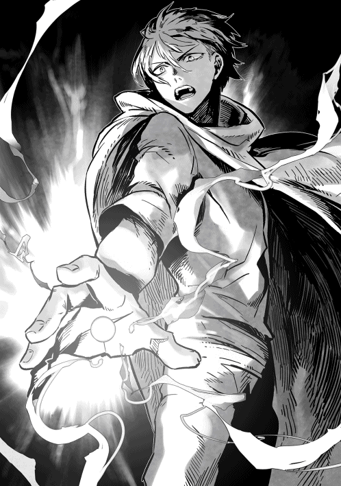
やがてそれらはいくつかに分裂し、それぞれはっきりとした形になり始めた。まず、色がつき、形なきものが明らかに手足へと変化し、たちまち人型になっていく。
待つほどもなく、都合百体ほどの人工生命体が生み出された。
大きく広げた黒い翼と、そして黄金色に光る切れ長の瞳......ただし、仮面のような顔には鼻も口もなく、ただ両の瞳と人を真似たような起伏のみがある。
ギーガンが生み出した時は、着物に似た白い貫頭衣を纏っていたが、ショウは動きやすいようにボディースーツ状の戦闘服にしてやった。
仮面のような顔に、純白の髪を伸ばし、独特の戦闘スーツを纏ったそれらは、あたかも死を司る女神の集団のように見える。
ざっと眺めて完成を確かめた後、ショウはまたため息をついたが──そこで、鼻からつうっと流れ落ちた鼻血が、足下に垂れた。
慌てて押さえた手が、真っ赤である。
「......俺、絶対に長生きしそうにないな」
思わず渋面で呟いたが、今回はやむを得ない。
これも仲間を守り、さらに自分が生き残るためだ。
ショウが不気味な集団を連れて戻ってくると、無理もないが、残り火の周囲に集まっていた仲間達は、一斉に驚きの声を上げた。
「魔法で合成された人工戦士の──ダークエンジェル！ しかも、ギーガンが創造した時より、一段と凄みがありますわ」
ロクサーヌが感心したように言う。
父であるヴォルザードより聞かされていたお陰か、彼女は当初から多少はソウルバイブルの知識があるのだ。それに、前にも似たものを見ているためか、すぐに看破していた。
そのうちリシャールが進み出て、眉をひそめてショウに問うた。
「こんなに大勢のダークエンジェルを一度に創造して、身体は大丈夫なのか!?」
「......まあ、今のところは鼻血だけで済んでるよ。これもソウルバイブルに慣れたお陰だろうけど」
ショウは危惧するような目つきのユウリに心配かけないよう、わざと明るく言った。
「数は百体ほどだが、グールが相手じゃなくて魔族軍が相手なら──ダークエンジェルでも多少の効果はあるさ」
「いや、普通は一度に百体も創造したら、死ぬよ」
難しい顔でリシャールが呟いたが、ショウはきっぱりと無視した。
今更言われても遅いし、今はせっかくの戦力を生かすことを考えるべきだろう。
「敵は間近だっ。まずはダークエンジェル達に先制させる！ 行くぞっ」
ショウは、五百名の仲間に檄を飛ばした。
一方、ユウリが見つけた魔族軍は、ショウ達の至近に迫りつつあった。
「急げっ。情報では、ショウ達は森の北端付近に潜んでいるようだ。一人も逃すな！」
部隊を任された千騎長の一人が、大声で味方を鼓舞する。
クリスタリカが特に選んだ部隊だけに、この兵士達の中には、グールの存在など戯言だと思う者ばかりが揃っている。
今は、ただひたすらショウ達の不意を突き、反乱軍に手痛いダメージを与えることだけを考えていた。
ただし、彼らが順調だったのは、実にこの時までである。
急速に侵攻中だった魔族軍は、ただでさえ暗い頭上に、ふと陰が差したことに気付いた。
少なくともそれまでは月明かりがあったのに、今やそれすらも遮られ、夜目の利く魔族戦士といえども、こうなると気安く先を急げない。
「なんだ？ なぜいきなり暗くなる!?」
「お、おいっ。あれを！」
兵士の一人が自分達の上空を指さす。
「どうした!?」
「なにも見えんぞっ」
声を上げた一人に、周囲から大勢が尋ねたが、本人も困惑したように首を振った。
「いや......今確かに、俺達の上空を何かがよぎったように見えたんだ」
「しかし実際になにも──」
朋輩の誰かが答えようとしたまさにその時、バサバサッという派手な翼の音がして、魔族軍の先頭集団にダークエンジェル達が襲いかかった。
ちゃんと自前の剣を持ち、しかも魔法すら使える人工生命体である。思わぬところで不意を突かれた魔族軍は、例外なく動揺して声をあげた。
「て、敵だっ。敵襲ううっ」
「しかしこいつ、翼が生えていて──うわぁああ」
「魔法だ、魔法攻撃があるぞ！」
特に最後の兵士が喚いた声が、既に浮き足立っていた魔族軍全体に、嘘のように響いた。実際、夜空を切り裂くような真っ白い閃光が軍勢を薙ぎ払い、魔族兵士が幾人も倒れている。
空から先制攻撃をしかけた人工戦士の集団は、無言のまま先頭集団のど真ん中に舞い降りると、たちまち周囲に向かって斬りつけ始めた。
振り回す大剣は明らかに人間の限界を超えたスピードであり、しかも兵士が逆襲して斬りつけても、ちょっとした傷ならすぐに回復してしまう。
彼らはロクサーヌほどソウルバイブルの知識があるわけではなく、当然ながら、人工生命体であるダークエンジェルの存在など、知らない。
運悪く、この中にはギーガンが操ったあの人工兵士群と戦った者はいなかったのだ。
戦闘スーツを纏ったこの女性兵士達がどうして自分達を襲うのか、誰一人として理解していなかった。
「慌てず、態勢を立て直せっ──ぐうっ」
急いで号令しようとした千騎長の一人は、不運にも次の瞬間に無造作にダークエンジェルの剣で首を刎ね飛ばされ、残された胴体がゆっくりと傾いで倒れる。
人間のような感情を持たず、容赦なく戦う人工戦士達であり、戦い方は凄惨を極めた。
数はわずか百体に過ぎないとはいえ、暗闇に近いような状態でもあり、しかも彼女達がいきなり自軍のど真ん中に舞い降りたせいで、兵士達は実数以上の敵が攻めて来たと思い込んだ。
そもそも遥か後方の部隊には、一体どういう敵が攻めて来たのか、見当すらつかなかったのだ。命令を出す側も事実を把握しておらず、全軍が混乱を極めた。
先の大戦時に人間達を圧倒したはずの魔族の精鋭部隊が、この時ばかりは狼狽し、同士討ちまで演じる始末である。
たちまち深夜の森に悲鳴と怒号が広がり、苔生す大地が魔族戦士の血で染め上げられていく。
まだ健在だった指揮官の一人が素早く情勢を見極め、「落ち着けえっ。こいつらの数は意外と少ないぞっ」と具体的に看破するまで、かなり長い間、数千の大軍が足止めを食ってしまった。
それでもようやくダークエンジェル達の実数が少ないと見破ると、指揮官の命令の下、部隊はすぐさま反撃に転じようとした。
少なくとも敵には翼があり、本来は見分けるのも容易だったのだ。
「感情を持たない人工兵士だ！ 容赦するなっ」
『おぉーーーーっ！』
号令一下、全軍がダークエンジェル達を追い詰めようとしたその時──この場にそぐわない？ 声が轟いた。
『こっちから、先制しちゃうから！』
「な、なんだ!?」
ぎょっとしたように指揮官が振り向きかけた途端、ユキナが高らかに叫んだ。
「お願い、シューティングスター！」
その刹那、ダークエンジェル達のせいで今や全く無警戒だった前方から、輝く光刃が無数に彼らを襲った。
完全に隙を突かれた形で、せっかく冷静さを取り戻しつつあった部隊が、またしても動揺を露わにしてしまう。
「ぐあああっ」
「だ、誰だ！」
「態勢を整えろっ。敵は前方からも──」
指揮官の命令が終わらないうちに、妹に負けじと突っ走ってきたショウが叫んだ。
「よぉし、かかれぇええええええっ」
『おぉおおおおおっ』
指揮官の大喝に応じ、元ウォーリア達の咆吼が夜空に木霊する。
わけもわからないまま、とにかく夢中で斬りかかってきた兵士をいとも容易く斬り下げると、ショウはそのまま大きく跳び、新たな命令を下そうとする指揮官のそばに着地する。即座に輝く刀を振り上げた。
「いいか、今度こそ反乱軍だぞおっ。落ち着いて──むっ」
「悪いが、遅いっ！」
焦って持ち上げた敵の剣は、ショウの斬撃を受け損ねて虚空へ刎ね飛ばされ、返す刀で今度こそ首筋を豪快に切り裂かれた。たまらず、生き残っていた千騎長がそのまま倒れる。
怒り狂った部下達がショウに襲いかかろうとしたが、今度は背後から突風のようにショウを追い越したユウリが、彼らに躍りかかる。
闇と同化したような巨大な大剣が、容赦なく彼らを襲った。
「露払いは、いつもわたしの役目よっ！」
寒気がするような風切り音がしたかと思うと、次の瞬間には誰かの剣が断ち割られ、そして首が飛ぶ。人間はおろか、魔族ですら及ばない剛力を持つユウリに、敵し得る者は皆無だった。
まさにダークエンジェル顔負けの暴れ方で、たじたじとなった魔族軍が、狼狽してどっと下がろうとしたほどだった。
「ユウリ、引き際を忘れるなよっ」
ショウがそっと声をかけると、一瞬だけ振り返ったユウリが微笑した......この激戦の中、嘘のように静かに。
「ショウが退けば、自然とわたしも退きますよ......いつもそういう方針ですから」
たまたまその言葉を聞き、同じくショウについていたロクサーヌが膨れっ面を見せた。
「ちょっと！ 自分だけ特別なように言わないでくださいましっ。わたくしだっているのですからねっ」
自分専用の白い鎧を纏ったロクサーヌは、剣技の教科書に出てくるような綺麗な突きを見せ、ショウの横で激しく戦っている。
ただ、やはり元味方ということでためらいがある上、敵もロクサーヌを見て今更のように狼狽する始末である。
「ろ、ロクサーヌ様だっ」
「こんなところで！」
「そうです、わたくしです！ つまらない戦いはやめて、ショウとわたくしに従いなさい！ 貴方達は、クリスタリカとグールに踊らせているのですよっ。それがわからないのですか!?」
「し、しかしっ」
ロクサーヌの周囲の敵兵に動揺が走り、ショウも「この分なら無駄な戦いは避けられるかっ」と少し期待したほどだった。
しかし──あいにく、そう上手く運ばなかった。
敵は大軍だけに、なにも眼前の部隊が全てではなかったのだ。
「ショウっ」
離れた場所で、ジェレミーが叫んだ。
「多数の気配が接近してくるっ。魔族軍の別働隊だ。これ以上留まるのは危険だよっ」
「そうだっ。新手の移動速度は、想像以上に速いぞ！」
密かにショウの背後を守っていたリシャールも、補足するように教えてくれた。
「わかってる!!」
休まず刀を振り回して犠牲者を量産していたショウは、鋭く返した。
......確かに、これ以上は危険だろう。時間は十分に稼いだはずだ！
「みんな、時間だぞ！」
ショウはあえて、「退却っ」とは叫ばなかった。言わずとも、それで伝わるからだ。
これが、いっそ鮮やかと言えるほどの号令だった。
今の今まで追い詰められていた魔族軍は、次の瞬間にはショウ達の刃にかかって倒れる覚悟をしていたはずだ。
しかし、ショウが「時間だぞ！」と叫んだ途端、反乱軍は一糸乱れぬ動きを演じ、たちまち踵を返して遁走に移った。
北へ北へと、木立の中を縫うように走り、安全を約束する闇の中へ駆け去っていく。全く未練を見せない退き方で、人間だけではなく、それまで犠牲を顧みない特攻を繰り返していたダークエンジェル達まで、翼を広げて上空へ逃れてしまった。
あっという間に、気配が遠ざかっていく。
誇り高い魔族軍だと、プライドが邪魔してなかなかこれほどの逃げっぷりはできない。
事実、劣勢だった彼らが、しばらくは例外なく唖然と見送ってしまったほどである。
「何をしているっ。ヤツらを追え！」
追いついてきた新手が叫び、ようやく我に返る始末で、ここまではショウの時間稼ぎ作戦は成功だった。
☆
会心の笑みで走る仲間達の中にあって、ショウは一人だけ冷静だった。
ダークエンジェルの奇襲が先だったお陰で、今の襲撃は上手くいったし、時間もある程度は稼げただろう。
しかし、なんといっても残留したこちらは五百、そして追撃してくる敵は数千を数える。下手をすると万に近いかもしれない。
大軍は反応こそ鈍いが、一度動き出すと、もはやそう簡単には逃れられない。
実際、途中でショウは、追撃してきた敵兵の絶叫を聞いた。かなり距離があったが、明確な殺意が籠もっていた。
『放てぇええええっ』
「──っ！ 上空を警戒しろ、矢だ！」
直感によってショウは叫んだが、それは正しかった。
どうも、ひときわ高い樹によじ登った射手が、それぞれ枝に立って、逃げていくショウ達を狙ったらしい。
ほとんど数を頼んだ乱れ打ちに近いようなものだが、それでも上から雨あられと矢が降ってきた。半分以上は木の枝に遮られて地上に届かなかったが、もう半分は逃げるショウ達の頭上に降り注ぎ、あちこちから悲鳴が聞こえた。
助けに走りたいっと思うのは当然だが、それをすると全滅する。ショウは心を鬼にして叫ぶしかなかった。
「自分が逃げることだけを考えろ！ 動けなくなった者は、後から来る魔族に降伏していいっ。なるべく樹を背にして走れよっ」
ここの針葉樹は巨木が多く、枝葉は頭上で広がっているものの、樹と樹の間もかなり広い。適当に射ても、射程次第では当たる危険性がある。
それに、一度逃げ足を緩めれば、それこそ後続の敵に追いつかれるだろう。
魔族正規軍の追撃は熾烈を極め、森を出た後は、さらに脱落者が増えた。
森の中ならまだ隠れられる場所も多いが、遮るもののない荒野では、あいにく潜むことすら不可能である。
ただ体力の続く限り、走るしかない。
ショウは、目立つしそもそも森の中だからという理由で今回は馬を使わなかったことを、今更のように悔やんだ。
お陰で、想定していなかったこういう状況においては、逃げるのが余計に困難になるわけだ。
唯一の慰めは、自分達が時を稼いだお陰で、ショウの旗下として随行していた部隊は、ことごとく逃れられただろうということだったが──後退の途中で、どこか遠くから鬨の声が聞こえた。
そろそろ追撃中の魔族を引き離していたこともあり、ショウ達は思わずその場で立ち止まってしまう。
「なんだ、どこからの声だ!?」
ショウは周囲を見渡したが、実のところ、大勢が喚くような声は、逃げていく先──つまり、北の方角から聞こえた。
そして、そっちの方角で心当たりがあるのは、先に逃げた味方しかいない。
「クリスタリカの本隊は、まだノックスの森に接近していなかったはずだけどね？」
ジェレミーが考え込むように言う。
「だけど、もしソムニウムを出た船団の一部が、大陸の南海岸に上陸せず、途中で陸にあがって、こちらへ来たとしたらどうでしょう？」
ユウリが囁くように述べた。
「我々は、森の北方は警戒していましたが、森の南と同じく、西方もほぼノーマークでした。敵の一部が西の海岸で上陸して、密かにこちらへ来たのでは？」
ショウは、大きく息を吸い込んだ......あり得る話だったからだ。
既にショウ達の「ソムニウムを出たクリスタリカは、全軍で南下してくる」という予想が裏切られている。敵は実際には、部隊を分けて一部を船団で大陸の南海岸へ送り込んだ......ショウ達を背後から奇襲するために。
であるなら──分けた部隊が二つではなく、実は三つだったとしても、今となっては不思議ではない。
「でも、あの人の手元に、そこまでの兵力があったかな？」
ユキナが不安そうに言った。
間違いであってほしいと願っているのが、よくわかる表情だった。
「......クリスタリカはしばらくソムニウムに留まっていましたわ」
ロクサーヌが青白い顔で述べた。
「その間、実は船を急造するだけではなく、各地の魔族駐留軍をソムニウムに集めていたのかも。事実、あの女が進撃途中で立ち寄った街の駐留軍は、全て引き抜いてますもの」
「正しい見方だと思う」
リシャールもロクサーヌに賛成した。
「となれば、第三の部隊は我々が奇襲部隊に襲われ、ノックスの森から飛び出してくるのを手ぐすね引いて待っていたのだろう。......西の海岸から急行してきて、我々が逃がした部隊の脇腹を突いた。これは、彼らの喊声かも」
リシャールの冷静な指摘に、ショウは思わず唇を噛む。
その指摘はおそらく正しい。となると、今採るべき方法は一つしかない。
ショウは、元の五百名から三百数十名程度にまで減っていた仲間を見渡し、号令した。
「おそらく、ユウリやリシャールの予想で間違いないだろう。先に逃がした仲間は、クリスタリカの第三の部隊に襲われていると見た。俺達は予定を変え、このまま北上して合流するっ」
皆、覚悟の表情で頷いた。
既に自分達が死地にいるのはわかっているが、こうなっては戦うしかないだろう。
「ユウリ、生き残りのダークエンジェルを引き連れ、空から偵察してくれ！ 今の推測で間違いないと思うが、実地で確かめてきてほしいっ」
「わかりました！」
即座にユウリが大きく空へ舞い上がり、そしてショウの命令を受けたダークエンジェル達が彼女を追って飛び去る。
ユウリはまだ変化していなかったが、おそらく皆の視界から消えた後でするのだろう。
「ショウっ」
すぐに自分も走り出そうとしたショウの腕を、ジェレミーが素早く掴んだ。
「なんだよ、こんな時に！」
「こんな時だからだっ。リシャールも待てっ」
呼び止められ、リシャールも立ち止まった......当然、ショウが動かないので、ロクサーヌとユキナもその場で立ち止まる。
「先に行ってくれ！」
ショウは仲間に指示を出し、急いで訊いた。
「なんだよ!?」
「なんだよじゃない、君だけでも先に脱出しろ。リシャールのペンダントの力を借りて、味方が大勢いる場所まで転移して逃げるんだ！」
「馬鹿な！ 俺はこの部隊の指揮官だぞっ」
「違う、そうじゃない!!」
憤慨したショウを上回る大喝で、ジェレミーは声を励ました。
この物静かな男が、ここまで激した口調で話すのは珍しい。
「ち、違うってどういう──」
「君はこの部隊の指揮官である前に、反乱軍全軍の総指揮官なんだよ！ 冷静になってくれたまえっ」
ジェレミーは、今やショウを怒鳴りつけていた。
「迂闊に罠に飛び込み、ここで君までが死ぬ事態になれば、どうするんだ!? ジェイルが後を引き継ぐとでも思っているのかい？ いや、彼に従わない人間も大勢いる以上、それはないっ。君が死ねば、反乱軍の敗北はその瞬間に決まる。二度と立ち上がれなくなってしまうんだよ！」
「しかし──」
「後のことを考えるんだ、ショウ!!」
ジェレミーはショウが必死で言い返すのを、途中で遮った。
実際には、ショウよりジェレミーの方が遥かに懸命な表情だったかもしれない。
「今回、我々は見事にしてやられたが、戦いはこの一戦で最後じゃない。まだクリスタリカ本人がいるし、さらにグールのヴェルマもいる。君がいなくなれば、一体誰が、したたかな彼女達を相手にするんだ!? ここで悪戯に死に急ぐのは、正しい判断とは言えない。後の指揮は僕が引き継ぐ！ 君は逃げるんだっ」
いつの間にかジェレミーはショウの両手を握り、目に涙まで浮かべて揺さぶっていた。彼らしくないというか、本当はこれがジェレミーの真意なのかもしれない。
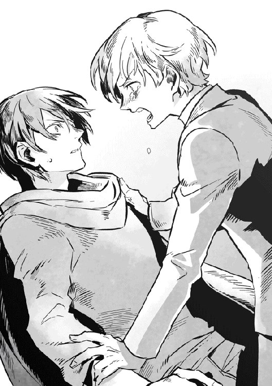
ショウは、その熱意と激情に打たれて、ほんの一瞬に過ぎないが、考え込んでしまった。あるいは、友人の気迫に押されたのかもしれない。
ユキナとロクサーヌは、二人で身を寄せ合うようにして見守っているだけで、一切の口を出してこなかった。
だが......いずれにせよ、ショウの気持ちは最初から決まっているのだ。
「ありがとう、ジェレミー。おまえはいつも、困難な場面で正しい判断を下す。もちろん、素直じゃない言い方も多かったが、俺はいつも感謝してたさ」
「おい、ショウっ」
ジェレミーの声に絶望的な感情が交じった。
ショウの返事がわかってしまったからだろう。
「ジェレミー、俺とおまえは見た目こそ違うが、やっぱり似た者同士なんだよ。おまえが俺の立場でも、おそらく同じ決断をすると思う」
ショウは返事の途中で、もう走り出していた。
どうせなら、一秒でも早く合流する方がいい。
「俺は逃げない、ジェレミー！ みんなが俺を待ってるからなっ」
再び疾走を始めたショウに、ロクサーヌ達が慌てて従った。
──もちろん、ジェレミーも。
「とんだ大馬鹿野郎を、友達に持っちゃったな」
やや冷静さを取り戻したジェレミーの声が聞こえたが、ショウは振り返らずに破顔して怒鳴り返した。
「言ったろ！ 俺達は似た者同士なんだよっ」
☆
途中で戻ってきたユウリによって、やはり前方の喊声は、西から急行してきた魔族の別働隊だと判明した。
「ダークエンジェル達は、残って戦っています！ 今なら、多少は敵の意表を突けるかもしれませんっ」
ユウリの意見に、ショウは大きく頷く。
体力に優れるショウは、多少他の仲間に遅れていたのを見事に取り返し、再び先頭を切って走っていた。
ユキナやロクサーヌ、それにジェレミーなども負けじと続いているが、さすがにみんなの顔には疲れが見える。
しかし、前方には既に盛大な砂塵が舞っているのが見えている。
敵の別働隊と、逃げた仲間が戦っている証拠だろう。
「どうせなら派手に行こう！ ユウリ、俺を持ち上げて空を舞えるか？」
「──！ もちろん、喜んでっ」
要請するや否や、ロクサーヌ達が抗議する間もなく、ユウリはショウを両手で抱き締めて、大きく夜空へ舞い上がった。
「ちょっと！ それはないんじゃないですかあっ」
「おにいちゃん、ユキナもおっ」
女性二人が叫んで両手を差し伸べるのを無視して、ショウは特にリシャールとジェレミーに向かって怒鳴った。
「基本方針は、敵の部隊を突破して、全軍で北へ抜けることだ。ロクサーヌとユキナを頼むっ。くれぐれもっ」
「おいおいっ」
リシャールの憤慨した声がしたが、その時にはもうショウはユウリと上空へ舞い上がっていた。
「うふふふっ」
超スピードで飛行している最中、ユウリがらしくもない含み笑いを洩らした。
「緩んでる場面じゃないぞ、ユウリ」
「わかっていますが、久しぶりに二人っきりになれましたし」
自然にそうなるのかわざとなのか不明だが、ショウの背中から抱きついているユウリは、豊かな胸を押しつけるようにしてそんなことを言った。
「これからの人生、全てこうありたいものです」
これもユウリらしくないことだが、耳元で甘い声で囁かれた。
「これからの人生を考えるのは、まずここを生き延びてからさっ」
ショウはわざと陽気な声で叫び返し、見る見る近付く戦場を指さした。
「よし、まだダークエンジェルががんばってくれている。この隙に、敵部隊の中央まで運んでくれ」
上から見れば一目瞭然なのだが、魔族軍の布陣が想像以上に厚く、押しまくられているショウの部隊は、敵を突破できずにいる。
今退いても、森からずっと追ってくる敵軍の餌食になるだけだし、もはや突破口を開くしか道はないのだ。
「わかりました！」
ユウリは人型から変化することなく、最前線をやり過ごして魔族軍の布陣の中央へと飛んで行く。
今は夜だし、ショウもユウリも特に明るい色の服を着ているわけではない。さらに言えば、眼下の敵兵達はショウの部隊を包囲することに夢中で、のんびり空を見上げるような暇人は皆無のようだった。
「よし、行くぞ！」
ショウはためらいを振り切るように自分を鼓舞すると、体内の魔力を十分に高め、ソウルバイブルを発動した。
「万能なる闇よ、ここに力の理を示せ。我が命により天を隠し、地に破壊をもたらさんことをっ──来たれ、キリングフィールドっ」
一拍の間を置き、星空がすっかり覆い隠され、明らかに夜空を暗黒が支配した。
「な、なんだっ」
「おい、どうしていきなり空が！」
さすがに下で兵士達が騒ぎ始め、一斉に夜空を見上げようとしたその時、呆れるほど広範囲にわたって、激しい炸裂音が轟く。
ソウルバイブルを奥義のレベルまで会得したショウの放った術は、以前の比ではない。密集していたこともあり、三桁に届こうかという兵士達が大地に叩きつけられた。
それでも、痛みに悶えている程度なら、まだマシな方だったろう。
ショウの真下を起点として、術の最大効果範囲内にいた者はよくて重傷、多くは即死だったからだ。
たちまち魔族軍内に大混乱が起き、明らかに味方への攻撃が鈍った。
「う、上を見ろっ」
「誰かが空にっ」
さすがに被害地点の周囲では気付いて指さす者が多数いたが、それはまだ一部である。
「ユウリ、もういいっ。最前線まで戻ってくれ！」
「はいっ」
ショウは何度も空から攻撃を重ね、魔族軍に大ダメージを与えることはしなかった。やろうと思えばできるだろうが、そもそもショウの本当の目的は、魔族軍の殲滅ではないからだ。
よって、最初の一撃で混乱を与えた後は、さっさと飛び去った。
眼下では、敵部隊の全軍が動揺し、右往左往しているのが、よくわかる。敵がどこにいるかわからず、混乱しているのだろう。
敵軍の全てが空を見上げてショウ達を見つけたわけではなく、そのほとんどは何が起こったのかさえ、理解していない。
従って、敵の増援だと勘違いしているらしい。
「よし、これはいいチャンスだ！」
ショウは即座に決断すると、ユウリに頼んで、二人で味方と敵が入り交じる最前線に舞い降りた。
当然、今まで押されまくっていた味方から、大歓声が湧き起こった。
「おぉ、帝王じゃねーかっ」
「女に抱かれて空から降ってくるたぁ、ふてぇ野郎だ！」
「今のもショウかぁ？」
頬に鮮血が伝っているのに気にした様子もなく、誰かが陽気に尋ねる。おそらく、元ウォーリアだろう。
ショウは最後の質問に、わざと大声で答えた。
「いや、さっきの音はこっちの援軍だ、ジェイルの部隊が敵の背後を突いたぞおっ。今こそ逆襲の時だ。敵を突破して、味方と合流だあっ」
「な、なにいっ」
「逆転だあっ」
あろうことかショウの号令に、敵はおろか味方までが引っかかった。
さっきショウが放った空からの攻撃を知る者が少なく、今の怒鳴り声を真実だと確信したのである。
「野郎共、このショウ・カムイに続けぇーーーっ。元ウォーリアの連中は特に、今こそかつての実力を見せる時だぞおっ」
ショウは大喝すると、すかさず愛用の刀を二振りに分離させ、頭上にクロスに構えた。こちらに殺到してくる敵兵めがけて、思いっきり振り下ろす。
「食らえ、クロスブレード！」
たちまち、眼前まで迫っていた敵兵達の多くが、風に吹かれた木っ端のように弾き飛ばされた。ショウは倒れた敵兵には構わず、そのまま彼らを飛び越えて敵軍に躍り込む。
指揮官自らが突撃する様子に、疲れ切っていた味方は息を吹き返し、喚きながらその後を追って敵兵と剣を交え、あわよくばショウと肩を並べようとする。
しかし、あいにくショウの脇はユウリがつかず離れずぴったりと寄り添っていて、ショウが討ち洩らした敵兵を、自慢の大剣で根こそぎ片付けている。
この両名の鬼神のような戦いぶりに、敵兵達は後退につぐ後退を強いられた。
「帝王だけにいい格好させんなぁあああっ」
「ユウリさん、すっげぇええ。マジで戦女神みたいだなっ」
「俺達も続けぇえっ」
「おうよっ」
たちまち、元ウォーリアの一団を先頭とする集団が争うように味方の陣頭に立ち、浮き足だった敵兵めがけて、命がけの突撃を始める。
仮にショウが切り開いたそこを突破口とすれば、その突破口はたちまち鋭利な刃物で切り広げたように面積を拡大し、敵陣を真っ二つにした。
反乱軍に、ジェイル・ビューゼルシュタイン率いる魔族の援軍が来た！
この誤ったデマは、とうとう最後の最後まで訂正されることもなく、結果的にショウがとっさに叫んだ「援軍」の叫び声が、反乱軍の運命を決めた。
幸い、ロクサーヌ達も後からショウとユウリに追いつき、最後には味方が密集した状態で、魔族軍の厚い布陣を突破してしまったのである。
☆
ショウは、敵軍突破後に調子に乗って反転し、さらなる攻勢に出るような真似はしなかった。
勢いのよい鼓舞の声とは裏腹に、魔族軍から一刻も早く離れることだけを目的としたのである。元々、襲ってきた魔族軍と自分達の一部隊とでは、戦力差はお話にならない。
明け方も近いことだし、夜の闇が薄れた後、敵がショウの大ボラに気付くとまずい。
あくまでも敵の混乱に乗じただけなので、相手が冷静になってしまうと、その時点で終わりなのだ。
「走れ、ひたすら走れっ」
ショウは自軍をまとめつつ、今度はうるさく味方をせき立てた。
「敵と戦おうなんて考えるな。本当に北から来るはずの、ジェイルさん達に合流することだけを考えろっ」
「え、ジェイル達は敵の背後をついたんだろ！」
仲間の誰かが訊いたが、ショウは足を緩めずにきっぱりと怒鳴り返した。
「──悪いが、あれは大嘘だ！」
だいたい、自分達の実情はこいつらも知っているはずなのだ。
ショウとしては、敵と同じく引っかかってどうすんだよっと言いたかったが、無論、仲間は納得しなかった。
「な、なんだとぉおおっ」
「騙したのかよ!? タマを引っこ抜くぞ、こるらあっ」
「やかましい、いいから死ぬ気で走れってんだよおっ」
四方八方から浴びせられた（おもしろ半分の）罵声に、ショウは振り向きもせずに喚き返した。元ウォーリアの連中が喚くことにいちいち腹を立てていては、身がもたない。
この時点で、ショウ達は当初の七割程度にまで人数が減っていたが、逃げることに専念したお陰もあり、数時間後にはジェイル達の部隊と本当に合流できたのである。
まさに九死に一生を得た形であり、当初の策が破れたとはいえ、逆にクリスタリカの仕掛けた罠を食い破ったも同然だった。
しかし無論......初戦において後れをとった事実に変わりはないし、次もこう上手くいくとは限らない。
ショウは、誰よりもそのことを肝に銘じていた。
第三章 ただ貴女だけを
クリスタリカは、船で上陸した別部隊がショウ達の部隊を取り逃がしたと聞き、魔族戦士達の無能さにほとほと嫌気が差していた。
彼女は現在、大陸南部の小さな街を本陣として、自らはホテルの部屋で休んでいる。昨晩までは、本当に本隊を率いてノックスの森を目指しているように見せかけていたが、今はその大軍も街とその周辺で滞陣中だった。
そして、予定とは違い、反乱軍はクリスタリカが仕掛けた二重の罠を食い破って突破し、北へ逃れてしまった。
この時に、この街で直属部隊を温存していたクリスタリカが素早く追撃していれば......あるいは戦況はさらに劇的に変化したかもしれない。
しかし、クリスタリカは北方から反転してこちらへ迫るジェイル達の軍勢を警戒し、滞陣場所から動かなかった。その用心深さが仇となり、今や反乱軍が北に位置し、クリスタリカの本隊は南に位置している。
当初の両軍の配置とは、真逆になってしまったのだ。
「話にもならないわよ!!」
クリスタリカは何度目になるかわからない文句を述べた。
唯一、この部屋で気に入っている身体を包み込むような大きな椅子に座し、先ほどからずっとヘンリーに愚痴っている。
「本当に信じられないわ！ ノックスの森の南側から攻めた部隊と、西海岸から上陸した別働隊、挟撃作戦を命じたこの二つの部隊はどちらも、あそこにいたショウ達より兵力が上回るのよ？ それがどうして、あっさり突破されて逃げられるのよっ」
「いえ、あっさり逃げられたわけでは」
いつものごとく呼びつけられたヘンリーは、主人の前で立ったまま、困惑して肩をすくめる。彼とて、味方の不甲斐なさに憤っているのだが、立場上、主と二人で怒ってばかりもいられない。
「ショウ達の軍勢は、斥候が遠望する限りでは当初の七割程度にまで人数が減っていますし、味方も一定の戦果は上げているのですが──しかし」
「しかし、ショウやロクサーヌ達を取り逃がしていたら、なんにもならないのよっ」
座したまま、クリスタリカが床を蹴る。
「味方の軍勢を突破した連中は、北へ逃げてジェイルや他の部隊と合流することでしょう。となると、両軍の位置関係が逆転しただけで、戦況がまた振り出しだわっ。絶好のチャンスだったのに！」
そう、これは大きなチャンスだったのだ。
反乱軍が、以前ノックスの森で発見した地下の空間でソウルバイブルの強化をする──そんな噂を聞いた時、クリスタリカは即座に看破していたのだ。
いかにも、その地下空間になにかソウルバイブル関連の秘密が眠っているような噂だし、実際に多少の真実も含まれるかもしれない......しかし、おそらくそれは意図的に流されたものだろうと。
ショウの狙いは、ただクリスタリカ本人を誘い出すことにあるはずだ。
狙い通りにクリスタリカが軍勢を率いてくれば、それぞれ散っていたはずの反乱軍が、
反転して自分達を押し包むという寸法である。
いかにも、あのお人好しが考えそうな策だし、そう考えれば当初の戦力分散も納得できる。もちろん、確信まではなかったが──。
孤立したショウ達が激闘の末、ようやくクリスタリカの挟撃を破ったことで、彼女の推測が正しかったのだとわかる。
計算違いだったのは、味方が破れてしまったことだろう。
まさかと思っていた事態が起きてしまった。
「お陰で、今度はこっちが以前のショウの立場に立つことになる。このままここに留まっていれば、四方に散っていた反乱軍の部隊が、続々と我が軍を包囲にかかるでしょうよ。ここはもう反乱軍の勢力圏内だし、敵地で孤立しちゃうじゃない！」
「しかし我が軍も、南海岸から上陸させた部隊を含め、全ての部隊をこの地へ集結させています。全兵力が集まれば、まだ数で圧倒することが可能です」
「......ノックスの森での挟撃作戦も、数では圧倒してたのよ」
ヘンリーの慰めにも、クリスタリカの憂い顔は晴れなかった。
当初は優勢だった兵数は、今や反乱軍の数が増大の一途を辿り、逆転されそうになっている。人口比では魔族は人間に遥かに及ばないので、これは当然、予想できたことだった。
その上、今の反乱軍は一部でソウルバイブルを会得する戦士まで増え始めていた。
人間共を圧倒していたはずの兵士の質までもが、追いつき追い越されかねない有様なのだ。もちろん、クリスタリカも有望な戦士には全てソウルバイブルの写本を与えて習得させようと努めているが──さすがに習得までには時間がかかるため、現時点ではショウ達に一日の長がある。
これでは、未来が明るいとはとても言えない。
「このままだと、時間が経てば経つほど、兵力差が広がっていく。まだこちらの方が兵数で勝るうちに、なんとしてもヤツらを叩き潰さないと！」
「それもありますが、先に嫌なことを片付ける必要が」
ヘンリーが恐る恐るといった様子で指摘した。
「ヴェルマに人数を提供すると約束していますが、向こうが通達してきた期限が、明日に迫って」
途中でクリスタリカは片手を上げた。
「忘れてないわよ、ヘンリー。もちろん、ね。ヤツらはヤツらで、大型の船を提供してくれて役に立ってくれたけど、今後は害の方が大きいわね」
殺気だった表情で頷き、立ち上がる。
「ショウが片付けてくれれば楽だったけれど、こうなるとやむを得ないでしょう。このあたし自ら、ヤツらを退場させてやるだけよ」
ダリルを始めとする魔将の四人は、既にヴェルマの手駒にされているので使えないが、無能な魔将ごときに頼らずとも、忠誠心の期待できる千騎長もまだ幾らか残っている。
このクリスタリカを敵に回すとどうなるか、まずはあの女に思い知らせてやらねばなるまい。
☆
都合がいいことに、魔将のダリルを通じてヴェルマは「可能な限り、大勢の兵士を寄越すように」と要請してきた。
当初は百名の要求だったはずだが、跳ね上がったわけだ。
これはおそらく、現在魔族軍に残る魔将四人を手駒にしたことに加え、クリスタリカをも手中にしたと思い込んだが故の、傲慢だろう。
しかも、「引き渡し場所はそちらが選んでよい」とも言ってきているのだ。
今のところはまだ、他の魔族には生け贄の件を秘密にせねばならないので、その意味でも、引き渡し場所はこちらの都合を考慮したらしい。
結果として、これはクリスタリカの思うツボだった。
人選はもう済んでいるし、後は魔将の四人を生け贄の引き渡しに同行させないよう、十分に気を配るだけだ。
「いいでしょう、大勢寄越せというのなら、望み通りにしてあげるわよ」
不敵に笑うクリスタリカに、ヘンリーがすかさず言ったものである。
「僕も同行します」
珍しく、この時のクリスタリカは即断しなかった。
随分と長く考え込んだ挙げ句、クリスタリカは結局、首を振った。
「いいえ、今回おまえは残りなさい。留守中に、目を光らせる者も必要だわ。第一、ダリル達魔将が、間違ってもあたしを尾行してこないようにしないと。連中はもう、敵側ですからね」
「しかしっ」
「おまえが心配するのもわかるけど、大丈夫よ。ちゃんと万一の時の打ち合わせもしてあるでしょう？」
クリスタリカはヘンリーを無造作に抱き寄せ、耳元で囁いた。
これも彼女にしては珍しく、ひどく優しい口調だった。
「いいから、ヘンリーはこのホテルで留守を頼むわ。これは、あたしの特別な頼みなのよ、わかったわね？」
そこまで言われると、ヘンリーとしても頷く他はない。
「......わかりました。では、くれぐれもお気をつけて」
「大丈夫よ。悪運の強さなら、誰にも負けるもんですか」
クリスタリカは安心させるように、ヘンリーの肩を叩いた。
魔族軍が滞陣中の街から、東へ騎行半時間ほどのところに小さな森があり、そこには特徴的な窪地があった。
付近の村では代々、「太古の昔、あそこには星が落ちた」などと噂されているらしく、迷信深い人間共は、そこへ近付きもしないらしい。
仮にその場所を空から見下ろせば、おそらく森の真ん中にぽっかり空いた、黒い穴のように見えるはずだ。
面積も、かなりの余裕がある。
底の部分は、およそ千人くらいはすっぽり収まるほど広いのだ。
加えて、周囲はおおむね切り立った崖のようになっていて、その高さは優に数十メートルはあるだろう。
まさに、クリスタリカが望む条件にぴったりだった。
しかもここは、東側の一部のみがなだらかな傾斜になっていて、坂道を下るように難なく窪地の底まで行けるのだ。
言い換えれば──人目がなく、逃げ場所も一方向に限定されることになる。
まさに、彼女が探していたうってつけの場所である。
「本当、月も綺麗だし、死ぬにはいい日よねぇ」
厳選した部下と共に森に潜んでいたクリスタリカは、密かに舌なめずりをした。
ちょうど眼下に、問題の窪地を見下ろす場所である。
大きな岩が崖の縁に転がっていて、クリスタリカはその陰に身を隠して窪地を監視している。
部下達はさらに距離を置き、背後の森に隠れていた。
クリスタリカ達は、約束の時間より早めに来て、気配を殺して待っていたのだが、その甲斐はあった。
狙い通り、ヴェルマは前に見た軍装のまま、二十名ほどの部下を引き連れてやってきた。
約束の時間ギリギリであり、そのまま窪地の底まで歩き、なにやら仲間内で会話をしている。おそらく、遅刻しているクリスタリカ達に、腹を立てているのだろう。
（今のうちに、せいぜいエラそうにふんぞり返っているといいわ）
盗み見ているクリスタリカは、この先を考えて唇の端を吊り上げる。
なおしばらくして、ようやく手配した生け贄（という名の罠）が来た。
人数はおよそ三百名、全員が後ろ手に縛られ、俯くようにして歩いている。窪地の底で待つヴェルマ達の元へと、続々と引っ立てられていった。
彼らを率いているのはクリスタリカの息のかかった千騎長の一人で、部下の五十名ほどと共に、拘束された兵士を監督していた。
ここまでは、全てクリスタリカの予定通りである。
ただし......予定にないこともあった。
のろのろと歩く彼らの一部が、なぜか酔ったように頼りない足取りなのだ。絶望の演技にしても、少し過剰である。
まさか本当に弱っているはずはないが、あの調子ではクリスタリカの策に支障を来す恐れがありそうだった。
生け贄の振りをした味方が、ヴェルマ達の前で緩んでいる拘束を解いて、一斉にヤツらに襲いかかる──それが、クリスタリカの計画である。
それだけではなく、クリスタリカは念には念を入れ、自らソウルバイブルを手ほどきした三十名ほどを引き連れ、この森に早くから潜んでいた。
つまり、窪地の底と崖の上の両面から、罠にハマったヴェルマ達を攻撃するつもりだったのだ。
予定通りに進んでいても、（芝居で）拘束された味方の足取りが泥酔した酔漢のごとくでは、いざという時に頼りなさ過ぎる。
しかもなんと、全体の半数以上が、そんな有様なのだ。
「なによっ。まさか本当に景気付けで浴びるほど飲んで来たんじゃないでしょうねっ」
焦りのあまり、クリスタリカが呟く。
その時、広がる闇のどこかから、誰かが答えた。
『いや、彼らは真面目に時を待っていたとも、クリスタリカ。ただ、夕食に薬が混じっていただけだ』
「──なっ」
クリスタリカは慌てて周囲を見た。
『ちょうどこの時間に効き始めるように薬の量を加減したつもりだが、半数はもう倒れそうね。人間だけではなく、魔族も脆弱だわ』
「くっ、どこよっ！」
しかし、どこから聞こえてきた声か、全くわからない。闇に沈んだ森は、風で枝が鳴る音がする程度で、クリスタリカの部下以外に、人の気配はない。
その部下達にも今の声は聞こえたのか、堪えきれずにざわついていた。全員に聞こえていたらしく、しかもどこから聞こえた声か、まるで特定できないらしい。
『うふふ......無駄だよ、クリスタリカ。これは声のみを届ける術だし、きょろきょろしたところで、私の居場所はわからないわ』
「この声......ヴェルマっ」
岩に背を預け、クリスタリカは思わず呻いた。
『そう、私だとも。一度会っただけだが、声を覚えていてくれたようだな』
最悪なことに、声が応じた。
『窪地の底にいるのは、私の仮面を着けた部下なのさ。変装ということね』
「ど、どうしてっ」
クリスタリカの唇から、柄にもなく慌てた声が洩れた。
この段階で声がかけられたということは、既にこっちの策はバレていたということなのだ。罠にハマっているのは、自分ということになる！
念のため、クリスタリカがまた素早く眼下を眺めると、引っ立てられてきた三百名の部下達は、堪えきれずに膝を突きそうになっていた。焦った様子の千騎長がしきりに声をかけているが、それに応じる者も少ないほどだ。
『別に薬など使わずとも、三百名程度なら、どうということもないのだけどね。でも、せっかくの糧だし、どうせなら殺す人数は少ない方がいいわ。......森に味方を伏せておいたのはおまえだけじゃないし、もう勝負は見えたわね』
「どうして、こっちの罠がわかったのよ！」
『そう大した理由ではない。手駒の魔将達が、こっそり連絡をくれた。クリスタリカは我々を避けすぎていて怪しい、とね。だから念のため、先手を打っただけのこと。──まさかとは思ったが、どうやらおまえは、私の精神支配の術を跳ね返していたようね』
「まだ勝負はついてないわよっ」
言葉とは裏腹に、もはやクリスタリカは岩場で身を隠すことをやめ、背後の森へ走り込んでいる。もちろん、あらかじめ伏せていた味方と合流するためだ。
絶対の準備で臨んだのはこちらではなく、敵だったのだ！ これまで彼女の命を救ってきた勘は、ここでの戦いに固執するのは無謀だと囁いている。
事実、離れつつある窪地の方からは、狼狽するような声や悲鳴が次々と起こっている。ヴェルマが囁いたことは事実だったらしい。
他にもグールの別働隊がいるということだ。
「くっ」
瞬く間に状況を把握したクリスタリカは、森の中に待機させた伏兵達に命じた。
「誰か、窪地の千騎長に撤退だと伝えなさい。あとの者は、この場で各自撤退よっ」
「え、し、しかしっ」
部下の誰かが驚いて声を上げたが、クリスタリカはにべもなく言い切った。
「いいから、これは命令よ！」
言下に、クリスタリカは率先して駆け出した。ざわついていた部下共が「へ、陛下っ」と声を上げたが、きっぱり無視した。
既に致命的なほど出遅れている。
ここで逃げられるかどうかは、この土壇場で、自分がどれだけ敵の意表をつけるかにかかっているのだっ。
「このあたしが死ぬもんですかっ。クソ親父を倒し、邪魔者の兄や妹を魔界から遠ざけ、やっとここまで来たのよっ。それなのに、こんなところでっ」
飛ぶように駆けつつ、クリスタリカは独白している。
足下の頼りない森の中を、彼女は一目散に遁走していた。森を出さえすれば、念のために連れてきていた馬を繋いだ場所に出られる。
そこまで無事に済めば、あるいは──
『あいにくだけど、逃がす気はない。窪地の生け贄共はともかく、おまえだけはな！』
声はどこまでもクリスタリカを追いかけてきた。木立の陰から、生い茂る枝の上から、そして落ち葉が重なる足下からさえ。
『おやおや、あくまで逃げるつもりなの？ ショウにもそういうところはあったけど、おまえは徹底しているわね。意外と、気が合ったかもしれないのに、残念よ』
クリスタリカはヴェルマの声を一切無視したが、あともう少しで森の外へ出られるというところで、頭上の枝が微かに音を立てるのを感じた。
はっとして見上げようとした瞬間、眼前に誰かが舞い降りてきた。
「おしまいだ、クリスタリカ」
今や、真紅の瞳が闇の向こうからクリスタリカを見据えていた。
クリスタリカの腹心でもあり、彼女の家の家令でもあるヘンリーは、久しぶりにクリスタリカの命令を無視している。
ホテルで待てと言われていたが、どうにも嫌な予感が消えず、単独で追ってきたのだ。
魔将四人の態度がおかしいし、それに彼らが逆に、それとなくヘンリーを見張っているような気配もした。
こうなると、ヘンリーがまず考えるのは、クリスタリカの安否である。
一応、気の利いた者を複数、自分の代理としてホテルに残してきたが、後でクリスタリカに叱られるのは間違いない──主人が無事に戻ってくれば。
「お叱りなど、いつものことさ。あの方が無事ならそれでいいっ」
呟いたところで、ヘンリーは遥か視線の先に単騎で駆けてくる馬を見つけた。身構えかけたが......馬上にいるのがまごうことなきクリスタリカだとわかり、すぐに叫んだ。
「クリスタリカ様！」
喜色満面で自分の馬を急かしたが、どうも様子がおかしい。
よく見ると、クリスタリカの上体が、不安定に揺れている......右へ左へと頼りなく。さらに接近すると、ようやくヘンリーにも見えた。
クリスタリカが重傷を負っているのが。
今宵はいつもの薄着の上にきちんとコートも羽織っていたはずなのに、もはやそれもない。そして、右胸の下から腰にかけて、真っ赤に染まっていた。
「く、クリスタリカ様あっ」
動揺して叫ぶと、ようやくクリスタリカがこちらを見た。
ヘンリーだとわかると......微かに笑った後、上体が傾き、そのまま落馬してしまった。驚いた馬が、そのままあらぬ方を走っていってしまう。
ヘンリーは大急ぎで駆けつけ、馬から飛び降りた。
「クリスタリカ様っ」
飛びつくようにして主人のそばに屈み込み、膝の上に抱き起こした。
......唇に血の気がなく、それに胸と腹部の出血がひどい。少なくとも二カ所は剣による傷を負っている。
「へ、ヘンリー......きてくれたのね......」
「お話しにならないでくださいっ。今すぐに僕の馬でっ」
「いいえ！」
一瞬だけ、クリスタリカの瞳にいつもの激しさが戻った。
「時間がない......のよ。いいから、あたしの言うことを......聞きなさい」
「そんなっ」
「......ヴェルマとかいう女にやられた......けど......あたしはソウルバイブルの......呪法を使い、最後の......悪あがきをした......わ。この命をかけた呪いは......あたしの死と共に......成就する」
「そんなっ。まだ間に合います、すぐに治癒に入れば、きっと！」
言葉だけではなく、本当に治癒魔法を使おうとしたヘンリーの手を、クリスタリカ自身が押さえた。
「いいえ」
手を離さず、弱々しく首を振る。
「あたしにはわかる......この傷だけじゃなくて......敵のソウルバイブルの攻撃を......受けたわ。そう見えないだけで......もう内臓もぐしゃぐしゃ......なのよ」
語る途中で、クリスタリカの唇からつうっと鮮血が流れた。
まるで、彼女の言葉を証明するように。
「ねぇ......ヘンリー」
「は、はいっ」
涙がとめどもなく流れてきたが、ヘンリーはそれを拭いもせず、クリスタリカの口元に顔を寄せた。
先程までは苦しそうだったクリスタリカが、今や妙に安らかな表情になりつつある。ヘンリーでさえ、主人を覆う死の影を認めるしかないほどに。

「ああ、もう痛みも感じないわね......でも、お陰で楽に話せるようになった。ねぇ、ヘンリー......おまえは最後の最後までよくあたしについてきてくれたわね。下手をすると魔界全てを敵に回すことだってあり得たのにね」
「これからもずっと、僕はクリスタリカ様の味方ですとも！」
女々しく泣き声になったが、クリスタリカはいつものように叱らなかった。それどころか、震える手を持ち上げ、ヘンリーの頬を撫でてくれた。
「......おまえのお陰で、あたしはこんな大それたことをしてても、一度も孤独を感じずに済んだわ......ありがとう」
「クリスタリカ様っ」
「あたしは結局、誰の言うことにも従わず、好きなように生きてきた。おまえももう、自分の好きな道をお行きなさいな」
「いいえっ。僕は必ず、クリスタリカ様を害した連中に復讐してやりますっ。ええ、絶対に！」
クリスタリカは否定も肯定もせず、しばらくじっとヘンリーを見つめていた。そのうち、じわじわと唇の端を吊り上げ、弱々しく笑った。
「わかった。今更このあたしも、良い子ぶって説得なんかしないわ......おまえの好きなようになさい。きっと、ソウルバイブルと反乱軍が助けとなってくれるでしょう」
「はいっ」
その言葉に、ヘンリーは大きく頷く。
もちろん、使えるものはなんでも使ってやる。あのヴェルマとかいう女に復讐するためにはっ。
「時が来たみたい──先に地獄で待っているわよ、ヘンリー」
クリスタリカは最後にそう言うと、自らヘンリーの首筋を抱き寄せ、口づけをしてくれた。ヘンリーの中に主人の鮮血の味が広がったが、それですら今のヘンリーにはひどく甘く感じられた。
その時間はヘンリーにとって永遠にも感じたが......やがて、限界がきた。
クリスタリカの腕から力が抜け、だらりと落ちてしまう。なおしばらく口づけした後、ヘンリーはそっと顔を離した。
言葉通り、クリスタリカはもう去っていた。瞳を閉じていて、妙に穏やかな表情を浮かべ......それは、ヘンリーが滅多に見たことがない表情でもあった。
「しばし、しばしの猶予を頂きます、クリスタリカ様」
溢れ出る涙を拭おうともせず、ヘンリーはクリスタリカを抱き上げる。
時間を無駄にせず、すぐに自分の馬へと駆け寄った。
「誓って、連中を生かしてはおきませんから！」
☆
ショウが率いる部隊は、多大な犠牲を払った末に、ようやく北方から急行してきたジェイルの軍勢と合流することができた。
他の仲間が指揮する部隊も、それぞれショウ達に合流すべく移動しているので、今のところ、一応の危機は去ったと見ていい。
ショウ達を挟撃した部隊も、ジェイル達と合流を果たしたショウの現状を見て、今のところは追撃を諦めたようだからだ。
それに彼らは彼らで、他の街で滞陣していたクリスタリカの部隊と合流するつもりなのだろう。
ショウは、ジェイルの部隊と共にさらにやや北へ移動し、近郊の街で今は一息ついている。被害甚大だし、今後の作戦を練り直す必要もあるからだ。
もちろん、本来の敵であるクリスタリカが、もはやこの世に存在していないなど、まだショウは知るよしもない。
そこで当然、クリスタリカへの次の一手を決める必要があり、街へ着いたその日に、ショウは滞在しているホテルで非公式の軍議を開いた。
ただ、デイルなどのウォーリア仲間と、新たな魔族仲間のヴァルクールは、まだ合流を果たしていない。未だに、こちらへ向かって急行中である。
......フロント前のラウンジとも言うべき場所は、広さも十分であり、都合よくたくさんの椅子が待ち合わせの客用に置かれている。
ショウはそこに自分の仲間と共に、新たに合流したジェイルとロキを集め、今回の顛末を語り終えた。
最後に、肩をすくめてこう結ぶ。
「俺達はクリスタリカを罠にかけるつもりだったけど、あいにく今回は向こうの方が上手だったわけです。こっちの罠にかかった振りをしてノコノコ出てきたように見えたけど、逆に俺の部隊共々、殲滅しようとしてくれた」
「我々の策を逆手に取られて、君個人の命を狙われたようだね」
ショウの正面に座るジェイルが薄い笑みと共に両手を広げた。
今宵、ここへ到着するなり「愛する妹よ！ おまえが無事で本当によかったっ」などと、あたふたとロクサーヌに駆け寄った男にはとても見えず、今は落ち着き払っている。
「......ところで、君の仲間の......えー、ジェレミーだったかな？ 彼の姿が見えないようだが」
少年のような容貌のロキが、気遣うようにショウやロクサーヌ達を眺めた。
ショウは思わず口元を引き締めた。今更責任を感じても遅いが、かといって平然とするほど淡泊にもなれない。
「まさか、戦死したのかい!?」
「いえいえ、まさか」
ショウは慌てて手を振った。
「ただ、今回無理をしたお陰で、治りかけの傷がまた開いてしまいまして......今は、部屋で療養中です」
「そうか......ひとまず無事でよかったよ」
ロキはショウに好意的な笑みを見せた。
最初からショウに愛想がよかった男だが、味方になったことで、それが一層、明らかになった気がする。
「それで、今後の方針はどうしたものかな」
ジェイルが穏やかに話を戻す。
「クリスタリカ打倒の方針は、当然ながら変更しないのだろう？」
「一番の敵はグールですが、その前にクリスタリカが邪魔してくるのだから、仕方ありませんね」
ショウはまた肩をすくめ、ようやく腰を下ろした。
本当なら、全軍を集結させる時間が欲しいところだが、敵がその時間を与えてくれないだろう。おそらく、こちらが完全に態勢を整える前に襲ってくるはずだ。
ショウはその予想を述べ、ついで言おうとした。
「向こうが大軍で押し寄せてくるまでに、そうそう時間は残っていないでしょう。ですから今後は──」
そこまで言いかけたところで、騒々しくホテルの両開き扉が開け放たれ、誰かが駆け込んできた。見ればウォーリア仲間で、ひどく驚いたような顔つきだった。
「どうした!? しばらく人払いをしてたはずだが？」
また立ち上がったショウが尋ねると、相手は唾を飛ばして喚いた。
「それどころじゃないっ、ショウ！ どうやら、く、くくく、くり」
「くり？」
同じく立ってショウの腕をとったユキナが、からかうように問う？
「この寒い時期に栗でも拾ったの、おじさん？」
「お、おじさん!?」
無精髭の中年が、目を剥いた。
「ひでーな、ユキナちゃんっ。俺はおじさんじゃねえようっ。まだたったの三十二歳で」
「ああ、わかったわかった！ で、何を言いたいんだよっ」
慌ててショウが割り込むと、彼は派手に喉を鳴らした後、ようやく教えてくれた。
「それが......クリスタリカが殺されたらしい」
「なにっ」
「なんですってえっ」
「嘘だぁ！」
ジェイルとロクサーヌ、それにユキナの声が見事に重なった。
特にユキナは、自分が散々嫌な思いをしたせいか、度肝を抜かれた様子である。あのしぶとそうな女が、そんな簡単に死ぬはずないと思ったのだろう。
当然、ショウも同じ思いだ。
「それ、確報か？ どこの情報だよ!? あの女は、殺しても死なないと思うがなぁ」
「それが、ヤツの側近だったって小僧が、ついさっきわざわざ投降してきて、そう言うのさ。なら、信じるしかないだろ？」
知らせを持ってきた仲間が、困ったように言う。
「側近？ 誰だ？」
ショウが眉をひそめると、相手はいきなり爆弾を落とした。
「ヘンリーっていう、妙にかしこまったガキだ」
「あいつがっ」
今度こそジェイルが立ち上がった。
よほど感情が揺れ動いたのか、瞳がゆっくりと真紅に変化しつつある。
「仮に本当にヘンリーなら、そのニュースは確かかもしれない──いや、先に何かの罠を疑った方がいいかもしれないが」
「とにかく、すぐに会いたいっ」
ショウは大股で歩き、仲間の肩を掴んだ。
ホテルの部屋にヘンリーを連れてきてもらい、ショウはそこを話し合いの場所とした。その際、あえてユウリのみを連れ、他の仲間は同席を控えてもらった。
というのも、魔族の仲間はヘンリーに恨みもあるだろうし、途中で激して彼を害さないとは断言できない。
というより、個人的にはジェイルが一番心配である。
そこで苦肉の策として、ショウがヘンリーの言い分を聞いた後で、それを皆に伝えればいいだろうと思ったわけだ。
ユウリがついてきたのは、単に彼女が何をどう言おうと「同席します！」と言い張ったためである。ユウリに言わせれば、「そいつはショウを暗殺に来たのかもしれませんから」ということらしい。
珍しく他の仲間も今回はユウリに味方し、ショウもやむなくという形だった。
それと──ショウとしても不本意だったが、今回は情報を制限し、ヘンリーの訪問とクリスタリカの死云々の話は、他に広がらないように留意した。
というのも、これが真実でも嘘でも、広まった途端に甚大な影響が出ると思ったからだ。
「それで......今回の投降と女主人の死はマジか？」
殺風景なホテルの空室にて、ショウは少年執事みたいな格好のヘンリーに尋ねた。
ただ、服装は前に見た時と同じスーツでも、今は全身が泥だらけだし、かっちりと後頭部に撫でつけてあった髪も、今はぐしゃぐしゃである。
魔族軍内で何かが起きたのは、もう間違いないようだ。
「......お話しする前に、その狼はなんです？ そういえば、前にも見ましたが」
ショウの足下でじっと「暗殺の疑いある者」を見つめるユウリに、ヘンリーが渋い顔を向ける。
この部屋に入った瞬間から、置物になったように身動きもせず、ショウが座す横でじっと相手を睨んでいるのだ。気になって当然だろう。
「まさか、僕にけしかけるつもりですか？ そんなことしなくても、もう僕は抵抗する気はないですよ」
「ああ、気にしないでくれ。立ち会いたいってことなんでな」
ショウが手を振ると、向こうは一層、不審そうな顔つきになった。
「立ち会いたいって言ったんですか、この純白の狼が自分の口で？ 確かに、どこか妙な気配を感じますけど」
「こいつのことは気にするなって！ おまえが何もしなきゃ、こいつも何もしないよ。ただじっと見つめる以上のことは何もしない」
ヘンリーはそれでも、狼とショウを胡散臭げに見比べていたが、やがて諦めたように息を吐いた。
「まあ、いいでしょう。......では、先にどうして僕が魔族軍から脱走してきたか、その辺りを説明しましょう」
ヘンリーは小さなテーブルの上に両手を置き、妙に据わった目つきでショウを見た。
「最初に言っておくと、貴方がクリスタリカ様の死を秘密にしようとしたのは、正解です。僕も、『用件を教えなきゃショウに会わせない』と言われなきゃ、最初から黙っていましたよ」
「......ホントに切羽詰まってそうだな、おまえ」
ショウは椅子の背に身体を預け、じっとヘンリーを見返す。
「よし、話を聞こうじゃないか」
──ヘンリーの話は驚くべき内容だったが、ショウは信じざるを得なくなった。
なぜなら、話を聞いた後で、その証拠を見せられたからだ。
疑うショウに対して、ヘンリーはあらかじめ考えてあったのか、あっさりこう切り出したのである。
「お疑いなら、貴方だけに限って、クリスタリカ様の死の証拠をお見せしましょう」と。
他の者には見せたくないらしい。
「死の証拠ってなんだ？」
「文字通りのご遺体ですよ」
あっけらかんと、ヘンリーは答えた。
眉根を寄せるショウに、木枯らしが吹き付けるような、冷たい笑顔を見せる。
「仕方ないでしょう？ だって、ご遺体でも見ない限り、貴方達は信じないはず。まあ、クリスタリカ様に散々煮え湯を飲まされてきたし、それも無理はありません。そこで、信じられるように、貴方に限定してお見せしようというのです」
「誰が好きこのんで、死体なんか見たいもんか！」
言い返したものの、指摘された通り、ショウはそのままヘンリーを信じることはできない。いや、ショウはまだしも、ジェイル達は絶対に信じまい。
彼の言葉を、そのまま鵜呑みにするわけがないのだ。
なにしろ、これまでずっとクリスタリカにロクでもない目に遭わされているので。そこでショウは、やむなく決断した。
ヘンリーを伴ってこっそりホテルを抜け出し、さる村の忘れ去られたような廃屋の中で、ショウは彼女を見たのである......変わり果てたクリスタリカの姿を。
実はショウのお供としてユウリもいたが、特に狼は連れてくるなとは言わなかったので、問題ないと思っている。
「くどいですが、ご遺体は貴方にしか見せません」
呆然とするショウに、ヘンリーは厳かに断言した。
「最後の戦いの前に、僕はまたここへ戻ってくるつもりです。そしてクリスタリカ様をちゃんとした場所へ移し、きちんと埋葬しますので」
それが、彼の言い分だった。
ジェイル達に話せば、彼らがクリスタリカの遺体をむごく扱う......そう信じているような表情だった。
しかし、ショウはあえて反論しなかった。
ヘンリーの薄赤い瞳には、既に狂気の色が見て取れたからである。こいつは、下手をするとヴェルマと差し違えて死ぬ覚悟かもしれない。
ショウにそう思わせるほど、ヘンリーの様子は尋常ではなかったのだ。
もはや、最初に会った時の飄々としたところなど、今の彼には微塵も残ってはいなかった。
第四章 グールを追い詰める
「まさか、それで信じたのか！」
ホテルに戻ったショウが、またラウンジに皆を集めて話すと、まずジェイルが素っ頓狂な声を上げた。
「あいつだぞ、あのクリスタリカだぞっ。ヤツなら自分そっくりの別人を殺して、死体を作るくらいはやりかねんっ」
「そうです、ショウっ。絶対に嘘ですわ！」
横からショウの手を取り、ロクサーヌも口添えした。
「いいえ、あの死体は本物よ」
ショウの背後に立つユウリが首を振った。
「わたしは、人間が持つどんな些細な違いも見逃さない。死体は確実にクリスタリカ本人だった。疑問の余地はないわね」
言い切った後、切れ長の目でじろりとロクサーヌを見下ろした。
「どうでもいいけど、どさくさに紛れて、ショウの手を握らないでほしいわ」
「自分だって、肩に手を置いてるじゃないですか！」
「そうよ、ずるいもんっ」
ユキナまで一緒になって言う。
「待ちたまえ、みんな」
いつも控えめなリシャールが口を挟んだ。
ラウンジの隅にある椅子に傍観者のごとく座っていたが、我慢できなくなったらしい。身を乗り出してショウを見た。
「彼女の見立ては信用がおけるわけだね？」
自分に訊いているらしいので、ショウは大きく頷いてやった。
「間違いなくね。つまりクリスタリカの死についちゃ、ヘンリーは嘘をついてない。コトの顛末も、おそらく真実だろう。ヴェルマを嵌めようとしたってのは、ある意味じゃクリスタリカらしいじゃないか」
ようやく信じる気になったのか、ここで初めてジェイルが自分の膝を叩いた。
「くそっ！ 仇討ちがふいになってしまったじゃないかっ」
ショウは、この貴公子がそんな言い方をするのを初めて聞いた気がする。
どちらかというと、ジェイルもロクサーヌもほっとすると思っていたのだが、よほど恨みが深かったらしい。
肉親を殺されたのだから、無理もないが。
ただ、ロクサーヌや元魔将のロキやユキナは、口には出さないものの、表情は明らかにほっとしていた。
ジェイルはまだ呪い文句を吐きたそうだったが、リシャールが急いで割り込んだ。
「ならば、もはや我々はなんとしても魔族との戦いを回避し、ヴェルマを倒すことのみに集中する必要がある。違うかい？」
そう言われ、ショウはもちろん、全員がはっとしたようにリシャールを見た。
「その通りだ！」
ショウは彼に頷き、ここぞとばかりに声を励ます。
「俺達の目的は魔族を滅ぼすことじゃない。断じて違う。全てはグールの一部が画策した陰謀であり、ヤツらの野望を阻止することなんだ」
「で、ショウ君のことだから、既にヘンリーという者から他の情報も聞いているのだろうね？」
探りを入れるようなリシャールの言葉に、ショウはすぐに返事をしなかった。
立ち上がってわざわざフロント脇の両開きの扉まで行き、そこを開けてそっと外を点検した。誰も盗み聞きしていないのを確かめた後、また椅子まで戻る。
腰を下ろすと、早速、切り出した。
「もちろん、聞いてる。これも、現時点では伏せておいて欲しいが──ヴェルマ達が現在、どこを隠れ家にしているのかの情報を教えてもらった。クリスタリカがグールから船を譲り受ける時、密かにヘンリーに命じて調べ上げたらしい」
「そいつはいい！」
聞き役に徹していたロキが、破顔した。
「話が早いじゃないか、君」
「いや、ところがそう簡単じゃないんですよ」
ショウは申し訳ない思いで両手を広げる。
「場所は西部のランガード湾沿いにある、アルグレイルという小さな街なんですが......ベルマのヤツ、そこの住人に全員、精神支配を施しているらしい」
ショウの言葉の意味を噛みしめ、全員が押し黙った。
しばらくして、恐る恐るユキナが尋ねる。
「......ということは、街の住人さんは全員敵だってことなの、おにいちゃん？」
「そういうことだな」
ショウは盛大に顔をしかめる。
「迷惑なことに、グール達は住人を含めて、街全体を隠れ蓑にしているわけだ。街が人質になったも同然さ」
──それに、魔族正規軍に残る四人の魔将も、今やヴェルマの操り人形も同然なのだ。この場で口にはしなかったが、当然ながら全員が、その事実を忘れてはいない。
あの魔将達は今は南の街で軍を再編しているが、準備が整い次第、ショウ達反乱軍に襲いかかってくるだろう。
ヴェルマ達を討つどころか、今はまず自分達の方が危ういのである。
☆
あいにく、ヴェルマの居場所に関する情報を持ってきたヘンリーも、ショウの悩みに答える術は持っていなかった。
クリスタリカに忠実だった彼に言わせれば、「この際、犠牲を無視して奇襲すべきでしょう」となる。
とんでもない話だし、ショウにその気はない。
無関係な街の住人を巻き込むくらいなら、最初からこんなに悩みはしないのだ。
──ただ、一筋の光明はある。
現在、クリスタリカが姿を消した魔族軍内で、急速に不信感が広がっているそうな。
これには、無理もない理由がある。
実は、クリスタリカがヴェルマへの罠を仕掛けた際、その後のクリスタリカ自身の逃亡とあとに続く逃亡劇のゴタゴタがあったため、生け贄の受け渡しは中止されている。
偽装生け贄達は薬が効いていたものの、半数程度はまだまだ元気に動けたので、さすがのヴェルマも、手を出すのを控えたためだ。
つまり、彼女達に襲われて全滅したのは、窪地の上で待ち伏せしていたクリスタリカとその配下達だけで、生け贄のはずだった数百名は、ほぼ無傷である。
新魔王の命令で、偽装生け贄として森までノコノコ出かけたものの、結局その半数は原因不明の身体の不調に見舞われ、這々の体で味方の陣所に戻った──それが、あの夜に森へ出かけた偽装兵士達が体験したことだ。
数十名とはいえ、グール達の仮面姿を見た者も大勢いるし、噂の種には事欠かない。
これは、結果的に見てヴェルマの失策と言える。
反乱軍が魔族軍に紛れ込ませた間諜からの報告によれば、窪地に出かける前にクリスタリカが偽装生け贄達に断言した、「グール共を罠にかけて討つ！」という言葉が、今になってボディブローのようにじわじわと効果を表しているようだ。
というのも、あの夜以来、クリスタリカ本人と家令のヘンリーが姿を消しているわけだ。
これほど怪しい話はないのに、ヴェルマの手駒と化した魔将の四人は、「陛下は別の作戦で今は街を離れておられる」と説明しているらしい。
あの夜の事情を知る者達で、その説明に納得している者が少ないのも、当然だろう。
それに、決戦が近いとされるこの時期に、魔王本人が急に姿を消すはずがない。たちまち命令が滞るのが目に見えている。
事実、クリスタリカの死からこっち、魔族正規軍はショウ達への追撃を、一時見合わせている。軍の再編のためもあるが、理由としては内部のゴタゴタが表面化しているとも言えるかもしれない。
いずれにせよ、生け贄を受け取ることに失敗したヴェルマは、必ず前の埋め合わせをするために、また生け贄を要求するはず──ショウはそう考えている。
さすがに百名以上が夜中にこっそり動くとなれば、隠し通せるものではないはずだ。
だから、ショウはジェイルやロキ達に声をかけ、「なるべく魔族軍内部の味方に、情報収集を頼んでください」と要請していた。
もちろん、そのことだけに望みを繋いでいたわけではなく、あくまでも策の一環としての要請である。
それ以外にも、魔族軍内の味方を通じ、「グールは実在しているし、クリスタリカは実はそのグールによって殺された」という話を、どんどん広めようとしている。
つまり、既に揺れつつある魔族軍内を、さらに大きく揺さぶろうとしているのだ。
もはやクリスタリカが再び登場して、その健在をアピールすることが有り得ないだけに、地味なように見えても、この策は大いに有効だった。
さらに、そうこうするうちに、新たな情報が入った。
──どうも、ショウの読みは当たったらしかった。
ホテルの部屋にロキ本人がわざわざやってきて、教えてくれたのだ。「ヴェルマはまた、グールへの生け贄を要求しているらしい」と。
「本当ですか!?」
「うん。ただし、別に魔将のダリル達が大々的にそのことを宣伝しているわけじゃないからね」
粋な仕草でロキは肩をすくめる。
「日時と場所を指定してきて、精鋭を百名ほど選び、理由不明の遠征をさせるらしい......そのことを突き止めた部下が、『これが怪しいのでは？』と教えてくれたわけさ」
「なるほど。可能性は大きいですね、確かに」
ショウは納得して頷いた。
「受け渡しの場所はアルグレイルの街だし、なんなら日時もわかるが......君、早まるのだけはやめてくれよ。この情報が罠である可能性もあるんだ」
「もちろん、クリスタリカと同じ轍を踏むことはしませんよ。──ただ」
そこでショウはニヤッと笑った。
「その情報が確かなら、少なくともその日までは、ヴェルマ達は街に留まり続けるってことですよね。奇襲するにしても、空振りの可能性が減るわけだ」
ロキは目を見開いた後、苦笑した。
「なるほど、そりゃそうだな。仮に罠であっても、今のところ、ヴェルマが街にいるのは確かだろう。敵もまさか、君を相手に部下任せにはすまい。とはいえ......なんなら、俺が行ってもいいんだけど？」
暗に、ヴェルマへの奇襲を引き受けるという問い掛けに等しかった。
前にアルバラン城の地下で、同じ魔将のノイマンを始めとする大勢の仲間を殺されているので、彼としては思うところもあるのだろう。
その気持ちはよくわかるのだが、ショウはきっぱりと首を振った。
「いえ、あいつに限っては他人任せにしませんよ、俺は」
ロキとの話し合いが終わった途端、まるで入れ替わるかのようにリシャールが部屋を訪問してきた。
クラバットこそ着けていないが、刺繍織りのある上着をきちんと着こなした姿は、まるで魔族の貴公子そのままである。髪の色も魔族と共通するので、なおさらだ。
ただ、瞳を見れば、もちろんリシャールが魔族とは似て非なる種族であることがわかる。最近の彼は、見知らぬ者が大勢集まるような時以外は、マスクを外していることが多い。もちろん今も、ちゃんと素顔を晒していた。
「忙しいのに、すまないね」
突然来たことに驚きつつも、ショウがテーブルを勧めると、リシャールはそんな風に口火を切った。
「そう時間は取らせないから、少し話を聞いてほしい」
「おいおい、仲間なのに水臭い言い方をするじゃないか。あんたの話なら、俺はいつだって耳を傾けるさ。どうした？」
「うん、実は数少ない私の仲間が、今回は共に戦いたいと言ってきてね」
遠慮がちな口調で、リシャールは驚くべきことを述べた。
ただ、座ったばかりのショウが目を見開くと、慌てて手を振った。
「先に言っておくけど、私の元からの仲間だよ。名前も知らない脱走グール兵士などじゃないんだ。ほら、前にソムニウムでヴェルマが私の仲間の死体をこれ見よがしに放り出していったことがあるだろう？」
「覚えている」
ショウはそっと頷いた。
忘れるはずもない。仲間が無残に殺されて転がっているのを見たリシャールは、しばらくは落胆を隠せなかったはずだ。
「あの時に殺されたのは、ヴェルマ達の部隊に潜んでいた同志だが、今回は私と一緒にソムニウムで身を隠していた数名さ。和平派の面々で、これまでは戦闘に参加していなかったんだ」
「ああ、そう言えばリシャールは、ソムニウムの近くに仲間が潜んでいたと言ってたな。で、その時に俺は『このソムニウムで一緒に暮らせばいいじゃないか』と答えた」
「うん。でもあの時は仲間の方が遠慮して、結局は廃村で潜んだままだった。まあ、お陰でヴェルマがソムニウムを襲った時、見つけて殺されずに済んだわけだが」
そこでリシャールは肩をすくめる。
「しかし、彼らはそのことを今でも気に病んでいてね。隠れ潜むばかりで、全然君達の役に立っていないと。だから、今回くらいは共に戦いたいそうだ」
「なるほど」
納得して頷いた後、ショウはずばり尋ねた。
遠慮しようかと思ったが、やはり曖昧にすべきではないだろう。
「怒らずに聞いてほしいが、リシャールの仲間がヴェルマの精神支配を受けている可能性はないか？」
「ああ、それは私も最初に考えた。しかし、その兆候はないよ。こう見えて、私はあいつの精神支配を受けた者を幾人も見ているからね。見分けはつく」
リシャールはゆっくりと苦笑を広げた。
「それに、もし間諜のつもりなら、ヴェルマの部隊についての誤った情報くらいは寄越すだろう、罠にかけるために。だが、彼らは当然、そんな情報など持っていない。本当にただ共に戦いたいだけのようだ......今まで出てこなかったのは、さほどの戦闘力を持たないからだな」
「俺達反乱軍だって、全員が戦ってるわけじゃないさ。戦いが苦手な者だっている。そこまで気を遣わなくていいのに」
ショウがそう言うと、リシャールは微妙な表情を見せた。
しばらく悩む様子だったが、そのうち「ええい、言ってしまおう！」とショウを見る。
「以前、グールとの戦いが始まる前に、『（私にも）密かに罪のない目標はある』と言ったと思うが」
「それも覚えているさ。あまりにリシャールが協力してくれるから、なんか魂胆でも？ 的なことを俺が訊いたんだよな？」
「そう、その時だ」
頷いた後、やたらとリシャールが言いにくそうにした。
「......で、君が指摘する魂胆というのがその......この戦が終わって平和が来た時、我々も大陸の片隅で住まわせてもらいたいということなんだ」
ショウが思わず眉根を寄せると、リシャールには珍しく、焦ったようにまた手を振った。
「いやっ、どうしても駄目ならいいんだが、人数的には私を含めても数名しかいないし、みんな戦闘力と呼べるようなものは特になくてだね」
「いや、そうじゃなく！」
ショウはあえて声を励ます。
「そんなの、俺の許可なんかいらないだろ。いや、誰の許可もいらないはずだ。リシャールだって、これまでに何度も死線をくぐって一緒に戦ってきたんだ。今更、『用が済んだからもういらねー』なんて薄情なこと、誰が言うもんか」
リシャールはしばらく何も答えず、じっとショウの顔を見つめた。
それこそ、ショウの方が落ち着かなくなるほど、長く。やがてようやく、ゆっくりと答えてくれた。
「ショウ、君は侠気のあるヤツだし、君のウォーリア仲間も、大半はそうだ。しかし、世間の全てがそうだとは、私には思えない......」
「俺への評価はおいて、後半はそうかもしれないな」
ショウは逆らわずに頷く。
「だが、戦後になって万一、『おい、グールはとっとと大陸から出て行けよ』なんてあんたに吐かすど阿呆がいたら、俺がそいつをぶん殴る。誰が止めようが、たとえ公衆の面前だろうが、お構いなくだ。そして、倒れたそいつにこう言ってやるね『奥歯をガタガタにされないうちに失せろ！ リシャール達が最前線で戦っていた時、貴様はどこにいたんだ、えっ？』ってさ」
言葉もなく見返すリシャールに、ショウはあえて破顔して言ってやった。
「だいたいあんた、忘れてるな？ 俺もあんたと立場は同じで、ここじゃ異邦人なんだぜ。普通なら、差別を受ける側さ。俺がどっかで誰かに『クソ地球人は帰れっ』とか言われてたら、あんたも速攻で助けてくれるよな、もちろん？」
彼の気を軽くするためにそうも付け加えたが、なぜかリシャールはそわそわした様子を見せるだけで、答えなかった。
人間離れした美貌が、この時ばかりはショウとさほど変わらぬ年代の青年に見えた。ショウが首を傾げると、リシャールは柄にもなく俯いてしまう。
しばらくして、ようやく小さい声で述べた。
「その......ありがとう......ちょっと胸が一杯になってしまったんだ」
「なんだよ、おいっ。柄にもなく照れるなよ、馬鹿！ こっちが戸惑うだろうがっ」
ショウは自分の方こそ赤くなり、テーブル越しにリシャールの肩を叩く。
「俺達は戦友だろっ！」
「そうだ、戦友だ」
リシャールはようやく、やけにまぶしそうにショウを見た。
「そして私は、君と戦友であることを、誇りに思うよ」
「俺だって同じ気持ちさ」
手を握られたショウは、自分まで照れてしまい、思わずそっぽを向いた。
☆
魔族軍内で健在である魔将の一人、リューゲルトの副官を務めるのは、ケスラーという名の千騎長であり、実は魔族軍内では最年少の千騎長として知られている。
そのケスラーは、今や次から次へともたらされる情報の洪水に、頭を痛めていた。
彼もまた、滞陣中のホテルに部屋を与えられ、リューゲルトの副官として、部隊の再編に当たっていたが──クリスタリカが姿を消して以来、引きも切らずに妙な報告が相次ぐのだ。
通常、怪しい噂は「反乱軍が意図してばらまいた偽情報だろう」と無視するのだが、新魔王のクリスタリカが陣中から姿を消した後、「クリスタリカはグールによって既に殺されている」などという噂が聞こえれば、彼とて冷静ではいられない。
それでも、部下の手前もあり、ケスラーは努めて平静を装った。
疑問を提示する者に対しては、判で押したように「陛下なら、他の街へ視察に向かわれたとリューゲルト様から聞いている。お姿が見えないのは、不思議でもなんでもない！」と強く言い切っていた。
しかし......今宵、部屋まで訪れてきたリンネイが、深刻な顔でこう言った。
「お怒りを覚悟で申し上げますが......陛下の側近だった家令のヘンリー殿も、陣中から消えています」と。
これは寝耳に水の話で、ケスラーは初めてヘンリーの不在を知った。
それでもなんとか、言い返すことだけはできた。
「......陛下に同行しているだけだろう」
リンネイは怯まなかった。
そう言うと思っていた、と言わんばかりの顔で頷き、畳みかけてきた。
「では、これはどうでしょう？ 現時点、魔族の勢力下にある中原以南の全ての街に、私が独断で連絡を取り、現地の兵士達に陛下達のことを調べさせました。しかし未だに、クリスタリカ様もヘンリー殿も見つかりません。どの街にもいないのです」
さすがに眉をひそめ、ケスラーはデスクの前に立つリンネイを見上げた。
堅苦しい表情を崩さず、休めの姿勢のままでリンネイが続ける。
「このことから導き出される事実が二つあります。一つ、少なくとも魔族の勢力圏のどこにも、お二人は現在存在していないということ。二つ、『陛下は他の街へ視察に向かわれた』という魔将リューゲルト様のお言葉は、嘘だったということです」
渋面で無言を貫くケスラーに、リンネイは淡々と続ける。
「副官殿のお気持ちはよく理解できます。魔将を補佐する戦士としては、味方の動揺を極力鎮め、かつリューゲルト様の命令に迅速に応えないといけません。ですから、真実として公表された以外のことを持ち出す者に対し、厳しくあるのは当然でしょう」
「待て。......君は一体、何が言いたいんだ？」
ケスラーはたまらず、部下の長広舌を遮った。
元々このリンネイは武闘派の男で、普段、このような理詰めの話し方をする男ではない。それが感情を交えずに一方的に捲し立てるなど、これだけでもおかしい。
「ケスラー様、私はただ、真実が知りたいだけです！」
リンネイはデスクの前に両手をつき、真っ直ぐにケスラーを見つめた。
「広まっている噂の全てを流言飛語とするのもいいですが、実際に調べた私に言わせれば、噂の方がことごとく真実に思えます。魔将達の言い分を、もう私は信じられないっ。グールを実際に見かけた者も、大勢いるのです。その全てが幻想だと思われますか？」
ケスラーは気圧されずに睨み返していたが、やがて大きく息を吐き、腕を組んだ。
彼が、単なる疑問の域を越え、本当の意味で魔将達に不信を抱いたのは、あるいはこの時だったかもしれない。
長い長い沈黙の後、ケスラーはようやく顔を上げた。
「よろしい、言い分はよくわかった。では、君の意見を聞こうじゃないか」
すると、堅苦しい表情を崩さなかったリンネイが、ようやく唇を綻ばせた。
「私の申し上げたいことは簡単ですし、すぐに実行できます。ケスラー様にはその間、少し目を瞑っていただきたいのです」
☆
「最後の戦いが間近に迫っている」
最初にそう言ったのはジェレミーだったはずだが、今はショウも同じ思いでいる。
まだ魔族軍もヴェルマ達も健在で、しかも彼らがショウ達を倒す方針に変わりはないのに、なぜかそう予感していたのだ。
不思議なことに、そういうショウの予感は、別に誰が広めたわけでもないのに、反乱軍中の共通認識となっていた。
特に、策のためにそれぞれ散っていた各部隊が、ショウ達が滞陣する街に大集結を果たすと、その思いはいよいよ強くなった。
なぜなら、反乱軍の全ての戦力を集中したのは実に初めてのことであり、その総数は二万を優に超えるほどになっていたからだ。
ショウ達が最初にアンダープリズンを脱出した時、一握りのウォーリアと賛同したわずかな囚人達が全てだったことを思えば、これは飛躍的な増加率かもしれない。
ただ、亡きクリスタリカが総力を結集した魔族軍も、ほぼ反乱軍と同数の兵力を誇っているし、各兵士の戦闘力は人間を凌駕する。
しかも、魔族軍の魔将四名はすっかりヴェルマの手駒と化し、再び反乱軍を討つべく、北上を始めたとの連絡を受けた。
クリスタリカの死による一時的な混乱は、すっかり沈静化したらしい。
四人の魔将がクリスタリカの死をどう糊塗したのか不明だが──。
反乱軍の間諜が散々真実を広めようとしたはずなのに、それでも軍事行動をやめないからには、魔将達とヴェルマの連携は、未だに健在である証拠だろう。
ショウは、久しぶりに主立ったメンバーがホテルのラウンジに顔を揃えたのを機に、こっそり方針を示すことにした。
間諜に洩れるのを防ぐため、またしても人払いをした上で、皆に意見を仰ぐためだ。
「前にも言ったが、今の俺にとって、魔族軍は敵じゃない」
特に反対意見も出ないので、ショウはそのまま続けた。
「そこで、今回もあえて彼らとは戦いを避ける策を採る。......つまり、俺達は途中まで全軍で北へ進撃するんだ。南から追撃してくる魔族軍を無視してな。これで、敵の大軍とは付かず離れずで、しばらく保つだろう」
ここでショウは、あえて正面に座すジェイルを見た。
もしも反対するのなら、まず彼だろうと思ったからだ。
しかし......ジェイルの薄赤い瞳は、なぜかショウを見返して愉快そうに笑った。
「はっはっは。君には武運がついていると見えるな、ショウ君」
「......えっ」
「いつもなら、僕が反対するだろうと今君は思っただろう？」
ジェイルはショウの驚きの声を無視して、まずそう言った。
「しかし、今や事情が変わった。実はこの軍議の直前に、リンネイという名の兵士が密かに僕を訪ねてきてね。この僕にこれまでの事情を訊くと共に、ある提案をしてきたのだよ。おそらく君も気に入るはずだ」
隣に座るロキと共に、破顔して頷き合う。
どうも、よほどよい提案らしい。
「それで、どんな提案です？」
痺れを切らしたショウが尋ねると、ジェイルはようやく得々と説明してくれた。
「ほう！」
最初、警戒しながら話を聞いていたショウも、途中から感嘆の声を上げてしまった。
「上手くいくかどうかは別として......その人も思いきったことを考えますね」
「魔族軍の兵士は馬鹿じゃないからね」
新参の、ようやくショウ達との合流を果たしたヴァルクールが、嬉しそうに補足してくれた。
戦士とは思えないほど落ち着いた態度の魔族で、ショウとも話が合いそうだった。
「これまでのクリスタリカのやりようや、ヴォルザード様の不審な死......まともな魔族なら、どこかおかしいと感じて当然さ」
「最高ですわ！」
黙って聞いていたロクサーヌが、唐突に拳を固めて立ち上がる。
興奮しているのか、頬が上気していた。
「もしも、そのリンネイ殿が画策する策が上手く運べば......もうわたくし達はヴェルマ達グールのみに集中できますわ！」
懐疑的なショウも、さすがにゆっくりと頷いた。
「これまでの遺恨が全て消えるのは無理としても、当面は魔族を警戒する必要もなくなるかもな」
ショウの言葉に、固唾を呑んでやりとりを聞いていたウォーリア側の参加者からも、次々と歓声が上がった。
特に、久しぶりに顔を見たデイルが「うぉおお、これでエレンちゃんと一緒の時間が持てるようになるなっ」などと叫び、全員の視線が集中した。
「誰だ、エレンちゃんって」
ショウが首を傾げると、デイルは愚かしいほど狼狽した顔で首を振った。
「な、なんでもないっ。あんまり気にすんなっ。つか、おまえは三人もいるから、いいだろうがっ」
「なんの話だよ！」
「私の仲間なんだよ、ショウ君」
例によって離れた場所から傍観に徹していたリシャールが、苦笑気味に教えてくれた。
「前に話した通り、ようやく数少ない仲間を呼び寄せたのだが、その中の一人を彼が随分と気に入ってくれたらしい。まあ、エレンは美人だしね......ふはは」
リシャールには珍しく、最後は含み笑いを洩らしていた。
「な、なにっ」
軍議の途中だったが、ショウは思わず目を剥いた。
「おまえ、早くもリシャールの仲間の女の子に目をつけたのかっ」
「め、目をつけたって、人聞きの悪い......」
バツが悪そうな顔でデイルが言い訳したが、皆が口々に話し始めたせいで、ほとんど聞こえなかった。
しかも、憤慨したのはショウだけではなかったらしく、ロクサーヌに続いてユキナ、それにユウリまで立ち上がった。
「なんですの、デイルさん。散々わたくし達に声をかけておいて、他に美人の子が来た途端、たちまちそっちに心変わりですか」
「全くね」
ユウリが珍しくロクサーヌの肩を持つ。
「ロクサーヌが来る前は、散々わたしにモーションかけてたのに」
「ていうか、だいぶ前にユキナには、『俺、嫁さんは年下がいいと思うんだ』なんて、真顔で言ってたのに！」
呆れ顔でユキナがトドメを刺す。
途端に、優雅な手つきでコーヒーを口元に運んでいたジェイルが、盛大に噴き出した。
隣のロキが、慌てて横っ飛びに避けたほどの勢いで。
「なんとおっ!?」
ロキなど無視して、ジェイルが叫んだ。
「僕は初耳だぞ、デイル君っ。この際だから、僕の忍耐にも限りがあるということを、はっきりと言っておくぞ！」
「お、俺はまだ、手も握ってないって。もう勘弁してくれえっ」
ジェイルに睨まれたデイルが、たまらず汗だくで弁明する。
その悲鳴があまりに真に迫っていたせいか、ラウンジに詰めていたウォーリア達が、大爆笑した。
──軍議は途中で脱線したが、しかしこれで方針は決まった。
魔族軍内部からの密かな申し出を受けたお陰で、ショウの基本方針に全員が賛成したのだ。
つまり、反乱軍は当面、全軍で北へ向けて進撃を開始し、魔族軍を率いる魔将達四名を無視する。
追撃はしてくるだろうが、敵も大軍なら、味方も大軍である。
あくまでも北へ向かって進軍するショウ達に、おいそれとは追いつけない。事実、ショウは必要とあらば、大陸をそのまま北上して、魔族軍領内まで行くことになろうと、戦いはあくまで避ける気でいた。
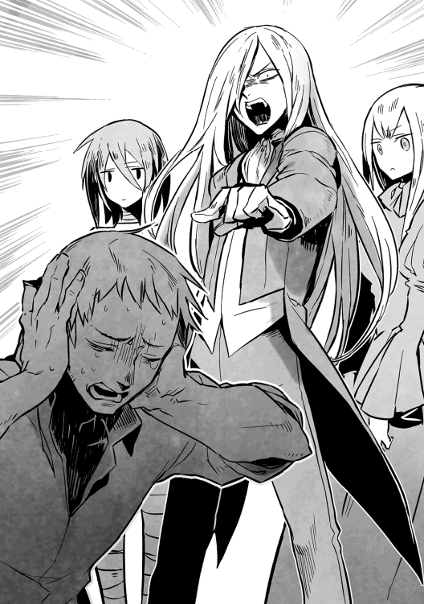
ここで両軍が激突したところで、喜ぶのはヴェルマ達だけだからだ。
もちろん、リンネイが申し出た策が上手くいくとは限らない。それでも、魔族と人間が戦わずに済むかもしれないと思えば、あえて「いや、この際だからヤツらと雌雄を決しよう」などと強弁する者は、ショウの仲間には誰もいなかった。
明けて翌朝、またホテルのラウンジに指揮官達を集め、ショウは出陣前の最後の挨拶をすることにした。
本当は外で全兵士を集めて堂々とやりたかったが、あいにく普通の兵士達は、まだショウ達の真意を知らない。ヘンリーの密告で、ショウ達がヴェルマの居所を知っているという事実は、この時点ではあまり広まってほしくないのだ。
わざわざフロント前に木箱が逆さにして置いてあり、あまり気は進まなかったが、ショウは肩をすくめてその上に立った。
こんな時くらい、遠慮している場合でもあるまい。
珍しく、他の仲間達は雑談も控え気味で、しわぶき一つせずにショウを見つめている。
最初期の仲間であるユウリやデイル、それに怪我を押して参加しているジェレミーはもちろん、魔族側の仲間も大勢いる。
それどころか、ここにはグールであるリシャールとその仲間達ですら、顔を揃えているのだ。
まだ、この大陸では人間と魔族が争っていることになっているが、少なくとも今この場では、人間も魔族もグールもない。
全てはショウの元へ集まった、志を一つにする戦友達だった。
耳が痛くなるほどの静けさの中、ショウはおもむろに口火を切った。
「昨日示した方針通り、俺達の本隊は魔将が率いる魔族正規軍を相手にせず、北へ北へと移動する。傍目には、反乱軍が帝都ヴァルマグロスの占領を狙っていると思うかもしれないし、ぜひそう思ってほしいが、もちろん真の理由は違う。──俺達のうち一部は、途中で部隊を離れて、ヴェルマ達に奇襲をかける。残った本隊も、ヤツらを逃がさないように、遠囲みにヴェルマの部隊を囲み、退路を断つ！ これが、本当の目的だ」
全員、笑顔で顔を見合わせ、頷き合った。
ショウもまた、穏やかな笑みを広げて、大きく頷く。
「最初にアンダープリズンを出た時、俺達はごくごく小さな戦闘集団でしかなかった。魔族正規軍はもちろん、伝説のグール戦士とやり合うなど、とんでもない話だった。しかし、大勢の犠牲は払ったものの、ようやくここまで来た。あのヴェルマ率いる精鋭部隊に挑む時が来たんだ」
ショウはまたしばらく黙り込み、不思議と周囲を見渡すような仕草を見せた。
この場にいた誰もが、「ああ、ショウは失った仲間を、自分を置いて先に逝った仲間の姿を探しているのかもしれないな」と思っていた。
......ようやくラウンジを見渡すのをやめると、ショウは大きく息を吸い込む。
「今までの歴史のほとんどは、俺達以外の誰かが作ってきた。魔族と人間の大戦、あるいはもっと遙かな過去の、グールの暗躍。そのほとんどがそうだろう。だが、今からはもう違う！」
ショウはあえて声を励ます。
「少なくともここを出陣した後は、俺達こそが新たな時代を作ることになる。人間と魔族、それにグールが共存できる、新しい世界を作るんだ。他の誰でもない、俺達自身の意思と力で！」
激しい内容の割に、ショウの口ぶりは終始静かだった。
それからまたしても仲間の顔を順番に見やり、ショウはなぜか破顔して両手を広げた。「それから最後に、これだけは言っておく。本当は照れくさくて言いたくなかったが、もう二度と言う機会もないだろうからな」
透明な笑顔を広げ、ショウは続けた。
「俺は元々、この大陸の人間じゃない。いわゆる、異世界から迷い込んだ、いわゆるフォリナーに過ぎない。にもかかわらず、ここにいるみんなは俺を受け入れてくれた。......みんなと戦えて、光栄だ」
すっかり照れた顔で箱の上から降りようとした途端、ジェレミーが呼吸を読んだかのように叫んだ。
「新時代のヒーローに、全員拍手を！」
途端に──文字通りの万雷の拍手が湧き起こった。そこまでの人数でもないのに、誰もが力一杯の拍手でショウを称えていた。
これでいよいよ、ショウは悪照れしてしまったが......後ろの方へ隠れる前に、ジェレミーやその他の仲間達に囲まれ、もみくちゃになってしまった。
この後、反乱軍は予定通り、全軍で北上を始めた。
ラウンジでショウが話した作戦指針は極秘であり、反乱軍の兵士達は指揮官達の意図を完全には理解していない。
せいぜい「最終的な敵がグールとはいえ、現在北上するのは、魔族軍の追撃をかわすためだろう」くらいにしか思っていない。総指揮官のショウもまた、誰かに訊かれた時は、そのことを特に否定はしなかった。
ショウが今注意していることは、追撃してくる魔族正規軍の大軍とは、決して戦わないように距離を調節すること──それだけである。
幸い、ヘンリーから得た情報では、目指すヴェルマ達は、大陸西部のランガード湾沿いのアルグレイルという街を拠点としている。
位置的に見ても、反乱軍が北上を続け、メーヴィング山脈の至近でもっとも接近することになり、奇襲のために別働隊を派遣するのも容易い。
反乱軍の本隊はあくまで北上を続け、途中でショウ達率いる別働隊が、こっそり本隊から離脱し、アルグレイルの街に突撃するという計画である。
その際には、精神支配を受けた街の住人達をどうするかが問題になるが......しかし、そちらの方は自然と解決してしまった。
というのも、ショウは今回は慎重を期し、行軍途中で変化の能力を持つユウリに斥候の役目を任せて先行してもらったのだが──
ツバメに変化したユウリが、その翌日にはもう戻ってきて、こう報告してくれたのだ。
「アルグレイルに、もはや生きた人間はいません」と。
「なぜわかるんだ？」
「普通の人間なら気付かなかったかもしれませんが、私は臭いました。......上空を飛んでいると、仄かな死臭が街全体を覆っていました」
報告を受けたショウは眉をひそめたが、すぐにユウリの言わんとするところに気付いた。
「ヴェルマのヤツ、全員をコープスソルジャーにしちまったのか！」
「......その通りです」
痛ましそうな表情でユウリが頷いた。
──コープスソルジャー、それはソウルバイブルの禁忌魔法によって、死人を蘇らせ、意のままに動く兵士として転用する術である。
前に、ノックスの森でショウ達も刃を交えたことがある。
既に肉体が死んでいるので、脳を破壊するか首を切断するかしないと、怪我などはものともせずに向かってくるのだ。死臭が漂うし不死身だし、これほど嫌な敵もいないだろう。
「あの女、住人のプラーナを搾り取った挙げ句、死体まで兵士として活用してやがるっ。どれだけ血に飢えているんだ！」
ショウは嫌悪感に塗れた声を上げた後......ふと気付いた。
「待てよ──ヴェルマがあえて街の住人を兵士にしちまったということは、もしかして」そのまま黙り込み、ショウはユウリが心配して再び声をかけるまで、ずっと考え込んでいた。
☆
この時のショウに迷いがなかったと言えば、それは嘘になる。
しかし考え抜いた末、ショウは自分の直感を信じ、作戦を一部、修正することにした。一応、行軍途中でジェイルなどの仲間にもこの微修正について話しておいたが、反対意見は出ず、ショウの作戦で行くことにした。
それにどのみち、いろいろ考えている暇などは、もうなかった。
翌日には、ショウ達を中心とする別働隊が、反乱軍の本隊から離れて、ヴェルマの拠点へ攻撃を仕掛けることになっているからだ。
ただ、ここへ来て余計な危惧が増えてしまった。
というのも、ショウ達に投降してわざわざヴェルマの情報を教えてくれたヘンリーが、脱走してしまったという報告が来たのだ。
彼は、途中の街に残留の仲間と共に置いてきたのだが......見張りの隙を突いて、何処ともなく逃亡したという。
今や、どこにいるのかさっぱりわからない。
それを聞いた多くの仲間は、「もしや、情報自体が罠だったのでは」と危惧したが、ショウはそこまでは思わない。
本当に罠にかけるつもりなら、途中で脱走して怪しまれるような真似をするはずがない。となると、他に理由があると見るべきだが......正確なところはわからなかった。
明日はヴェルマの拠点に攻撃を仕掛けるという夜......ショウは、リシャールなどと綿密な打ち合わせをした。
特にリシャールは、元々グールだったこともあり、かつ今や彼の仲間の和平派も数名ほどショウ達に同行している。
そこで、敵の陣容をできるだけ詳しく訊いていたのである。
ただ、リシャールの仲間達は、そもそもヴェルマの拠点が今から向かうアルグレイルの街にあることまでは、知らなかった。
つまりヴェルマは、自分とその旗下の精鋭部隊である一部の戦士階級にしか、拠点を教えていなかったことになる。
逃げて来た彼女が所属していたのは、ショウ達反乱軍や魔族軍の動向を見張る、いわば雑役のような部隊だったらしい。同じグールでも、あからさまに役割が違うらしい。
もちろん、ヴェルマと共に行動する実戦部隊が、最もやっかいな存在なのは言うまでもない。
逆に、それを聞いてショウは大いに意を強くした。
一部の仲間にしか教えず、あえて仲間にも場所を秘していたということは......アルグレイルの街が本物の拠点である可能性が高いからだ。
ヘンリーがもたらした情報は正しいということになる。
「アルグレイルの拠点のことは聞かされていませんでしたが、ヴェルマとその直属部隊の数は、およそ千名前後だと思います。当然、もっとも手強いのは、指揮官であるヴェルマでしょう」
リシャールの元へ逃げてきたグールの女性は、ショウにこのように語り、最後に「彼らは仲間内といえども、同じ部隊の者以外には、余計なことを一切語りません」と教えてくれた。
グールという種族の特徴なのか、ユレンと名乗る彼女もまた、リシャールと同じく、妖精のように繊細な雰囲気の、非常に美しい女性だった。
デイルが目をつけるのも、無理もないこともかもしれない。
ただ、ヴェルマのことを話す間中、彼女がひどく怯えた表情をしていたのが、印象的だった。逃げて来た直後ということもあるが、ヴェルマの名を口にする時は、無意識に表情に怯えが出るのだ。
エレンは意思の強そうなしっかりした女性で、しかも一応、リシャールと同じく戦士階級らしいのに、それでもヴェルマは恐ろしいらしい。
念のため、彼女と共に来た他の数名にも尋ねてみたが、皆等しく、ヴェルマのことを話す時は恐怖の色を隠せなかった。
これでは仲間というより、一種の恐怖政治を敷いている独裁者ではないか？ ショウは呆れてそう思ったほどだ。
参ったのは「俺達は明日、そのヴェルマの拠点に攻撃を仕掛けるつもりだ」とショウが教えると、彼女達は一人の例外もなく、まるで死人を見るような目つきでショウを見返したことである。
リシャールがどう思っているかは謎だが──彼以外の他のグール達は、ショウがヴェルマに勝てるとは、微塵も信じていないらしかった。
☆
長きにわたった打ち合わせも終わり、ショウはようやく疲れた身体を休めることができた。とはいえ、あいにく暖かいベッドに横になることはできない。
今宵は敵が潜む街が近いため、さすがにその辺の街で泊まることは控えたのだ。
そもそも今は行軍途中であり、現在位置はランガード湾に近い、ロンデルシャムの森の中なのである。
この森は大陸西部から北部にかけて大きく広がり、一度入ってしまえば、まず敵に見つかる危険が少ない。
こっそりランガード湾に接近するためには、最適のルートのはずだった。
夜の森は寝るのに心地よいとは言えず、おまけに冬を迎えて寒さも厳しいが......敵が近いとなれば、我慢する他はない。
ショウは、自分が見張りも兼ねるつもりで、皆から離れた一番端まで行き、ひときわ太い幹を持つ松にもたれかかり、目を閉じた。
ブランケットを三枚羽織っているが、さすがに堪える寒さであり、ショウはむしろ自分より他の仲間のことを心配した。
病み上がりとも言うべきジェレミーはもちろん、ロクサーヌやユキナ、それにユウリ達は大丈夫だろうか......今晩は珍しく、まるで姿を見かけなかったが。
それでも、眠っておかねばならないと自分に言い聞かせているうちに、いつしかショウはうとうととまどろんでいた。
......そのうち、ふと気配を感じて目が覚めた。
気配もだが、どこからかほんのりとよい香りがしたので。
ショウともあろう者が、ここまで接近されるまで気付かなかったのは、相手に殺気の類いが皆無だったからである。
それもそのはずで、顔がくっつくほど眼前にいたのはロクサーヌであり、ショウは目を開けるなり、思わず声を出しそうになった。
道理でよい香りがするはずである。
「──っ！」
「おしずかにっ。離れているとはいえ、他の皆さんが起きるかもしれませんし」
一気に覚醒したショウに、ロクサーヌは言い聞かせるように述べた。
それにしても、とんでもない態勢だった。
幹にもたれて足を投げ出したショウの膝の上に、ロクサーヌが足を崩した座り方で、向き合うように座っているのだ。つまり、ショウの両足は彼女の腰の下である。
おまけに両手はショウの両肩の上にあり、ショウはがっちりと幹に身体を固定されたようなものだった。
「お、俺の足を椅子代わりにして、どうしたんだ？」
まだ完全に目覚めていないせいか、ショウの物言いはひどくおぼつかなかった。
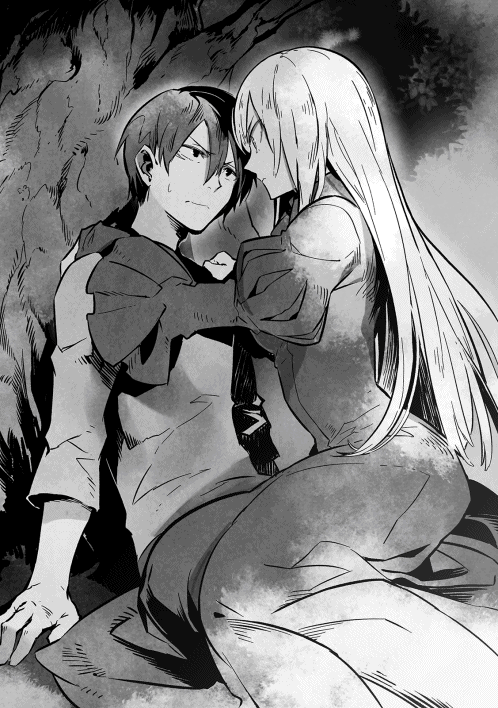
「今宵は、ショウのお気持ちを伺いに参りました」
ロクサーヌはうっすらと頬を染めていたが、それでも、ごく間近から話すのをやめようとしなかった。
「き、気持ちというと？」
ショウが声を潜めてオウム返しに問い返すと、なぜか深々とため息をつかれた。
「どうしてショウはそうなんですかーっ。そもそも、今やほとんどなかったことになっていますけど、元々アンダープリズンで魔族との戦いが始まった時、ショウは『ロクサーヌのために戦う！』と決然と仰ってくれたはず。そして、その事実をわたくしも受け入れたのですわ」
やたらときっぱりと言われたが──ショウとしては、今の説明は一部誇張されている気がしてならない。
確かに、ロクサーヌとそのような会話を何度か交わした覚えはある。あるが、少し......いやだいぶニュアンスが違う。
事実は、以下のような感じだったはずだ。
『ショウはロクサーヌのために戦ってくださるわけですね』
『まあ、うん』
......他にも「ロクサーヌのために戦うってのは、俺にとっては意味のあることなんだ」的なことも述べたが、せいぜいその程度である。
もちろん、今だって彼女のためという部分も大きいのだが、さすがにそれだけということはない。
しかし、いかに朴念仁のショウといえども、そのことをここで説明するほど、愚かではない。余計なことは言わず、ただそっと促した。
「そ、それで？」
「それで、ではないですっ」
今や完璧な膨れっ面でロクサーヌはショウを睨んだ。
至近で見つめ合ううちに、彼女の薄赤い瞳がゆっくりと真紅に染まっていく。
「お互いの気持ちがわかっていて、最後の戦いが近いとなれば、いい加減に将来のことを話し合うべきでしょうっ。今日来るか明日来るか今来るかとずっと待っていましたのに、ショウったら、いつまでも肝心な話をしてくださいませんっ。やむを得ず、はしたなくもわたくしから押しかけたのですわ！」
ちゃんとわかってらっしゃるの！ と言わんばかりにショウを見据える。
ショウも逃げられる態勢ではないし、今回ばかりはロクサーヌの意気込みはただ事ではなかった。
ただ、ここまで捲し立てられれば、さすがにショウもロクサーヌの言わんところを察することができる。
要するに彼女は、「いい加減に態度を決めろ」と言いたいのだろう。
あるいはそういう段階ではなく、もっとその先の話をしているのかもしれないが......例えば、婚儀を交わすとか。
とにかく、ロクサーヌは触れれば切れそうな緊張感を漂わせ、ショウの返事を待っている。無言のままではよくないだろう。
大きく息を吸い込んだ末、ショウはようやく口を開いた。
「......そうだな」
「は、はいっ」
途端に勢い込んでロクサーヌが身を乗り出した。
ただでさえ近かったため、危うく唇と唇が触れあいそうになったほどだ。
お陰でショウまで緊張して、ようやく声を絞り出す。
「今すぐに返事しなきゃ駄目か？」
「ええっ!?」
静かにせよと言ったくせに、ロクサーヌが素っ頓狂な声を上げる。
「まさか、迷いがあるのですかっ」
いたく驚いた声音だった。
「そりゃあるよ！」
さすがにむっとして、ショウは言い切った。
「ロクサーヌは大好きだが、それを言うなら付き合いの長いユウリだって大好きだし、おまけに妹のユキナも『ユキナは血が繋がってないからね！』と強調し始めやがったし、意識するなって方が無理だ。迷いがあって当然じゃないか」
「そ、そんなあ」
ロクサーヌがひどくがっかりした声を出した途端、どこからかユウリとユキナの声がした。
「なにが『そんなぁ』よ。厚かましいこと」
「そうよそうよ！ だいたい、こっそり来たユキナより先に押しかけてるしっ」
ほとんどごく至近からの声であり、有り体にいえば、ショウがもたれている松の木の後ろから聞こえた。
ショウもロクサーヌもさすがに飛び上がりそうになり、跳ね起きるようにして立ち上がる。ちょうど、木の幹を回り込んで、ユウリとユキナが姿を見せたところだった。
「......まさか、同じことを考えていたなんて！」
「ユキナが一番乗りだと思ったのにっ」
二人でわけのわからない呟きを洩らした後、不意にユキナが子供のように笑み崩れた。そのまま後ろ手に手を組んで、ショウを意味ありげに見上げてくる。
「でも、ちょっと安心したな......おにいちゃん、ちゃんとユキナも意識してくれてたのね。ユキナだけ妹枠ってことで、恋愛対象から外れてるんじゃないかと心配してたの」
「い、妹枠って......おまえなあ」
一瞬呆れかけ、ショウはようやく我に返る。
「──じゃなくて、二人とも、気配を殺していつから聞いてたんだっ」
「割と最初の方からです」
「ユキナとユウリさん、途中でかち合ったものね」
二人同時にさらりと言ってくれて、ショウはげんなりした。
おまけにユキナは笑っていたかと思うと、一転して据わった目つきになり、ショウを上目遣いに睨む。
「とにかく、ユキナは誰の抜け駆けも許さないのっ。妹として祝福することも絶対にしないのよ......ええ、しませんともっ。だから、おにいちゃんはユキナを選ぶしか道がない。わかってくれる？」
「どういう理屈よ、それっ。諦めないのはわたしだって同じよ！」
「ごり押し得が通るなら、わたくしだってそうしますよっ」
たちまちユウリとロクサーヌが言い返し、三人の間に険悪な空気が漂う。
すっかりいつもと同じ空気になりかけたが、ここでショウは衝動のままに両手を広げ、三人の女性を抱え込んでしまった。
自分でも驚いたが、とっさに手が出たのである。
「......ごめん」
腕の中の三人に、ショウは思わず囁く。
息を呑む気配が三人分したが、ショウの次のセリフでため息に変わった。
「だけど、もう少し時間をくれると嬉しい」
「その言い方、心臓に悪いです。脅かさないでください」
「本当ですわ。血が凍りそうになっちゃいました」
「ユ、ユキナは、仮にごめんなさいされても諦めないもんっ」
囁き返す声に苦笑したが、ショウはその姿勢のまま、しばらく動かなかった。いや、動けなかったと言った方が正しいかもしれない。
この戦いが終わってもし生きていたら......確かに自分も態度を決める必要があるだろう。
☆
ランガード湾沿いの小さな街、アルグレイルに到着してからのヴェルマは、元は庁舎だった一室にずっと籠もりきりだった。
元から飾り気のない役人嗜好の部屋だったが、彼女が己の司令室と定めてからは、もはや部屋から余計な家具は取り払われ、わずかに執務室とヴェルマ個人が休むためのベッドしか置いていない。
ヴェルマにしてみれば、ショウ達を罠にかけるためだけにこの街に滞在しているので、華美な調度品など必要としていなかったのだ。
......つまりこの時点でヴェルマは、既にショウ達の奇襲を予測していた。
ちょうどその夜も、部下の女性兵士から、最後の報告を聞いているところだった。
「反乱軍の本隊は相変わらず北へ向かっていますが、それを追う魔族正規軍は、先程不意に行軍を停止したようです」
「どういうことなの？」
深夜にもかかわらず、部屋の窓から街路を眺めていたヴェルマは、ゆっくりと報告した彼女を振り返った。
「私の精神支配は完璧のはず。まさか、魔将の四人が正気に戻ったわけではないはず」
「もちろん、彼らは未だにヴェルマ様の忠実な下僕です」
鎧姿の彼女は、いたく恐縮したように低頭した。
「しかし、彼らの部下達が一致団結して、魔将達の食事に薬を混ぜ、眠っている間に拘束してしまったようです」
「なんだそれは!? よもや、以前クリスタリカを罠にかけた時の意趣返しではあるまいな？」
ヴェルマはすっかり部下に向き直り、顔をしかめた。
このところ、計算外のことばかりが起きるが、これはその中でも格別だった。
「いえ......そういうことではなく、ひたすら反乱軍撲滅を叫ぶ魔将に不信を抱いた一部の将兵が、思い切ってクーデターまがいのことを決行したようです。今回は、リンネイという千騎長が中心になっていたと」
「......となると、クリスタリカの死も既に知れたと見ていいか？」
ヴェルマの質問に、彼女は小さく頷いた。
「こうなると、魔族共はしばらくアテになりません。そして、魔族の動きを察知した反乱軍も、この街への襲撃を延期する可能性が──」
「いや、それはないでしょう」
ヴェルマは顎を上げ、きっぱりと言い切った。
あのヘンリーとやらが逃げるのを見逃したのは、ひとえに敵の裏をかいて、ショウ達を罠にかけるためである。
主人を殺されたヘンリーが、ショウ達反乱軍の元へ走るのは予想できたし、その結果、彼らがここを襲うだろうことも、容易に予想できる。
だからこそ、ヴェルマはあえてこの街を動かずにいるわけだ。
今のところ、まだその策は順調に進んでいると見ているし、簡単に計画を変更する気もない。
「ショウ・カムイという男、そのような消極的な策を立てる男ではないわ......本隊が北へ進軍しているのも、どうせ見せかけに過ぎないだろう。まちがいなく、ヤツは奇襲部隊を指揮してここへ来る！ 我々が待ち構えているとも知らず、今回もノコノコやってくるはずよ。今度は私も、ノックスの森の時のように、逃がす気はない」
不安そうな部下に言い聞かせる意味でも、ヴェルマはあえて声を励ました。
「魔族軍では、新魔王のクリスタリカが倒れ、求心力となる人物がいない。この上、反乱軍の総指揮官であるショウが死ねば、まだまだ我々が──」
言いかけたヴェルマは、そこで珍しくよろめき、テーブルに手をついた。
「い、いかがなさいました、ヴェルマ様っ」
驚いて駆け寄ろうとする部下に、ヴェルマはさっと片手を上げる。
既に元の巌のようにどっしりした姿勢に戻っていた。
「なんでもない。このところ、寝不足だっただけ......とにかく、必殺の態勢で待ち構えているのだから、来てくれないとむしろ困る......ふふふ」
含み笑いを洩らした後、ヴェルマはほっと息を吐いた部下に頷いた。
「表面上は油断しているように装い、その実、警戒は怠るな。敵の接近を察知したら、すぐに私に知らせるのよ」
「ははっ」
「それから」
くどいかもしれないと思ったが、ヴェルマは重ねて命じた。
「こんな田舎の街に近付く者もいないと思うけど、もし迷い込んだ者がいたら、全て拘束しなさい。それと、コープスソルジャーは目立たないよう、屋内に隠しておくようにね」
「心得ております！」
「よろしい」
ようやく部下が部屋を辞した後、ヴェルマは深々と息を吐いた。
そしてまた足を乱し、よろよろと壁にもたれてしまう。
この内臓を直接手で掻きむしられるような痛みと苦痛......間違いなく、呪いによるものだ。それも、ソウルバイブルによる呪いである。
「クリスタリカめ......自分の死と引き替えに、私に呪いをかけたか」
自らを殺した相手を増悪し、命を賭けて呪いをかける......それは、死者を蘇らせるコープスソルジャーと同じく、ソウルバイブルの禁忌魔法にあってさえ邪道とされる術である。
ブラッククロスと呼ばれる術で、自分を殺した者に対する怨念が強ければ強いほど──術者の死後にその威力を発揮する。
まさに、死に際の無念と怒りをそのまま敵にぶつける術だ。
ヴェルマほどの実力者であっても、これはおいそれと解除できるものではない。
永遠に続く呪いではないが、クリスタリカの怨念の凄まじさからして、そうそう簡単に消えないのも事実である。
あの毒婦め！ とは思うが、しかし立場が逆なら、あるいはヴェルマも同じことをしたかもしれず、今となっては恨む気にもなれなかった。
「ふふふ......だが、私は死なぬ、この程度では死なぬぞ。死力を尽くしてショウを倒した後、再び魔族軍をかき回し、我が意のままにしてくれる。グールの未来をこの手に掴んだと確信するまで、私は容易く死にはせん」
呼吸を整えたヴェルマは、ようやく背筋を伸ばしてまっすぐに立った。
ドアを開けると足早に部屋を出て、階下へと降りていく。
まだ、捕虜として残した人間が数名ほどいる......連中のプラーナ（生命力）を全て我が糧とすれば、まだまだ肉体は安泰のはずだ。
第五章 戦いの果て
最後に残った人間の捕虜からプラーナを補給したのは、正解だったようだ。
内蔵と頭の中身をかき回されるような苦痛はかなり薄れ、ヴェルマはいつもの生気を取り戻しつつあった。
それに明け方間近になり、ようやく待ちに待った朗報がきてくれた。
見張りから、「反乱軍の奇襲部隊とおぼしき部隊が、街に接近しつつあり！」という報告を受け取ったのだ。
「やはり、北方への進軍は見せかけだったようね！」
ヴェルマは久しぶりに破顔し、ぎらぎらと真紅の瞳を光らせた。
「軍装のままで待機していた甲斐があった。では、手筈通りに連中を街の広場まで誘導しなさいっ」
『ははっ』
集まった部下達の士気は沸き上がるように高く、全員が一斉に敬礼で応じた。
ヴェルマの思惑は、敵の包囲殲滅にある。
すなわち、最初にわざと斥候達を街に隣接する森へ放つ。そして、彼らが見つかった振りをして、ショウ達に背を向けて逃げさせ、街の中まで敵を誘導する。
そして、街の中央広場にまで来たら、今度は街に潜んでいたヴェルマ達が一斉に飛び出し、ショウ達を四方から包囲するという戦法だ。
ある意味、ノックスの森で戦った時の再現を試みているわけだが、今回は念を入れて、わざわざ自らの部隊を囮に使う。
一戦した後、わざと囮達が遁走に移り、そのまま広場まで逃げて、ショウ達を誘導するというわけだ。
──やがて、ヴェルマは予定通りに囮を放ち、自分達本隊は、街の市庁舎やホテルなどに身を潜めてじっと時を待った。
そのうち、街の東側に広がるロンデルシャムの森の方から、激しい鬨の声が聞こえ、剣撃や怒声がヴェルマ達にも届き始めた。
「予定通りですね！」
市庁舎に潜んでいた指揮官の一人が嬉しそうに述べたが、ヴェルマは微かに首を振った。
「まだわからないわ。......放った囮の連絡員が戻るまで、判断は保留よ」
慎重に結論を避けたが......間もなく、これもヴェルマの期待した報告が来た。
囮部隊として放ったうちの一人が戻ってきて、喜色満面で報告してくれたのだ。
「敵反乱軍、数はおよそ三千！ 森の中を密かに進軍中に我らの部隊とぶつかり、戦闘になりましたっ」
「......敵の中に、ショウはいた？」
「確実にいました！」
睨むように尋ねるヴェルマにも物怖じせず、彼は力強く答えてくれた。
「私はすぐに退きましたが、まさに私の眼前で味方と刃を交えていましたっ。間違いなく、あれは反乱軍の総指揮官である、ショウ・カムイですっ」
「よくやってくれたわね!!」
ヴェルマは相手の肩を叩き、激賞してやった。
そして、ホテルのエントランスに集まる面々をぐるりと見渡す。
「グールと人間の格の違いを見せてやる時が来た！」
マスクを着けた戦士階級達に、ヴェルマはとびきりの笑顔を向けた。
「少なくとも、反乱軍の主立った戦士は、全員血祭りに上げてくれよう。そして私は、ショウのプラーナを生き血と共に啜ってやるわ！」
ヴェルマの血に飢えたとも言える宣言に、むしろグール兵士達は大いに発憤した。
それに元々彼ら全員が、人間のプラーナをむさぼることに味を覚えてしまい、人間という種族を奴隷か食料くらいにしか見ていない。
戦に勝った後は、敵のプラーナを絞り尽くしてやるつもりで、全員が待機している。
そのうち、彼らの期待通りに剣撃の音が近付き、反乱軍が街中に攻め込んできた気配がした。ヴェルマ以下、早速出陣しようとしたが......その時、彼女はわずかな違和感を覚えた。
「おかしいわね......味方である囮部隊の気配はちゃんと感じるのに、どうも敵の気配が読みにくい」
「それは、敵がヴェルマ様の力を恐れ、魔法などの手段で結界を張っているのではないでしょうか？」
指揮官の一人がそう言うのを聞き、ヴェルマは考えた末に頷く。
そういえば、ショウ達の元には、人外の女もいたはずだ......あの女が小賢しくその手の結界を張っているのかもしれない。
「まあいいでしょう。仮に妨害されようと、ちゃんと気配はあるのだから。──いよいよ、ヤツらを舞台から退場させる時が来たわっ」
『ははあっ』
舌なめずりでもしそうなギラギラした目つきで、兵士達が一斉に応えた。
ヴェルマとその部隊は、メインストリートが見える通りから、こっそり敵の様子を窺ってみた。
ちょうど、眼前を囮部隊が通り過ぎるところであり、ヴェルマの目から見ても、逃げる演技は完璧である。
指揮官クラスの兵士が「退け、退けえっ」と喚きつつ、計算されたように、全員で一致して広場の方を目指していた。
薄暗い通りを、戦士達があたかも潰走するように必死に駆けていく。
彼らが通り過ぎた直後、もはやほとんど間を置かず、今度は反乱軍共が追撃してきた。
「追い詰めろぉおおお」
「逃がすなよっ」
「全員、片付けるんだあっ」
野蛮な喚き声を上げつつ、軍装すら統一されていない連中が、洪水のように通りを駆けていく。この街は舗装されていないので、濛々と砂埃が立ってしまい、お陰で下品な連中の顔をあまり見ずに済んだが──。
ヴェルマの目で見ても、敵は勝ち戦に驕っているように見える。
掠め取って間もない、元はグールの財産だったはずの魔剣を高く掲げて醜く歯を剥き出し、人数に勝る自分達を誇示しているようにすら思えた。
思わず顔をしかめてしまったが、しかしヴェルマにとってそれらはどうでもいいことではある。最後はどうせ、連中は自分達の糧になるのだから。
重要なのは、ショウの姿は見つからなかったものの、彼の側近ともいうべき、金髪碧眼の少年戦士がいたことだ。
彼は反乱軍の先陣を切っていて、荒くれ男達の中で、一人だけ場違いのようにも見える。確か名前は、ジェレミーとかいったか。
多くの兵士は簡素なレザーアーマーや、さらにガードのつもりか頭巾のような防具を着けている。お陰で頭や顔がはっきり見えないのに、彼は完全に平服のままで、しかも素顔を晒しているのだ。
もちろん、他にもそういう兵士はいるが、彼の場合は金髪と際だった美貌のお陰でよく目立つ。わざと目立っているのかと思うほどだ。
「全員、がんばれ！ ヴェルマまでもうすぐだぞっ」
しかも今、張りのある声で大喝していた。
聞いていたヴェルマは、思わず苦笑してしまった。なるほど、お互いがお互いを狙っているようだ。
「よろしい！ あいつがいるなら、間違いなくショウもいるでしょう。間抜けにもヤツららが広場へ誘い出された後、今度は我々の出番よ！」
それぞれ数を分けて路地に潜んでいたヴェルマは、振り返って、部下達に告げた。
間もなく歴史が変わり、人間共は真の支配者を知ることになるだろう！
ヴェルマは寸刻も無駄にしなかった。
反乱軍共が通り過ぎた後、彼女は部下達に命じて、屋内に隠してあったコープスソルジャーを全て通りに出し、そいつらを先にして静かに反乱軍の後を追った。
目指すのはもちろん、反乱軍が誘い込まれた街の中心部──広場である。
井戸があることと、広さだけが取り柄のそこには、既に味方の囮部隊を始め、反乱軍の奇襲部隊が全員誘い出されている。
物言わぬ死体兵士、コープスソルジャーを先頭に立て、獲物を狙うサメのようにヴェルマ達が広場に突入すると、反乱軍の方でさざ波のごとく動揺が走った。
構わず、ヴェルマは剣を抜いて夜空に掲げた。
「全員、かかれえっ」
『おぉおおおおっ』
意のままに動くコープスソルジャーはもちろんのこと、歴戦を誇るグールの精鋭部隊も、一斉に雄叫びを上げて敵に襲いかかっていく。
もちろん、広場までずっと逃げっぱなしだった囮部隊も、ここで攻勢に転じて反乱軍を挟撃する形だ。
完全に策通りにコトが運び、ヴェルマは九割九分まで己の勝利を確信した──が。
この乱戦の中、奇跡的に例のジェレミーと視線が合った。
「なんだ!?」
なぜか相手が笑っているのを見て、ヴェルマは眉をひそめる。
気でも狂ったのかと最初は思った。なぜ、ここまで鮮やかに逆転された状況で、笑うことができるのか？
しかし、切り込み部隊を務めたコープスソルジャーの群れを苦もなく突破し、眼前に迫った兵士数名を見て、敵の笑みの理由がわかった。
「こいつ──人間ではないっ」
そもそも、いきなり背中に翼が生じ、コープスソルジャーの群れを飛び越えてくるようなヤツが、人間であるはずがない。
着地して斬りかかってきた連中の一人を、ヴェルマはとっさに肩から斬り下げたが、驚くべきことに、そいつは傷をものともせずに身を翻し、ダメージを受けた身体のままでさらに剣撃を加えてきた。
これまた、人間にそんな真似は不可能である。
薄暗い中、間近で斬り合いになって、初めてわかった。端正ではあるが、この画一的な顔、それに際だった無表情さ、これはまさに──
「ダークエンジェルっ！」
歯ぎしりするような声でヴェルマは吐き捨てる。
時刻がまだ夜明け前ということもあるが、反乱軍のような小汚い軍装と、それに顔を隠す防具のせいで、すっかり騙されていたのだ。
「全員、気をつけろっ。後ろの方には人間もいるが、敵の先陣はソウルバイブルで創造した魔道兵士だ！」
そう叫んだ瞬間、ヴェルマは大きく息を吸い込んだ。
なぜ......ダークエンジェルに人間じみた軍装をさせ、顔をわからないようにして、普通の兵士達に紛れ込ませたのか？
当然、そこにはそれなりの理由があると見た方がいい。
「まさかこれは、罠──」
激戦の最中、思わずヴェルマが呻いた途端、皮肉にも、悪い予感が当たった。
忘れようもないショウの声が、この場に大きく響いたのだ。
「今こそ来たれっ、キリングフィールド！」
「しまっ──」
今度は口走る暇すらなく、明け方の空が一瞬で陰り、すぐさまとんでもない衝撃が襲ってきた。
耳をつんざくような轟音が響き、ヴェルマを含めて全員の身体が大地に叩きつけられた。それも、斬り込んできていたダークエンジェルまでもが。
ヴェルマともあろう者が完全に虚を突かれ、魔力で防御する暇すらなかった。
☆
ショウの策はここまで完璧に上手くいった。
元々ショウは、偵察から戻ったユウリが「仄かな死臭が街全体を覆っていました」と報告してくれた時に、敵がまたしても住人を殺し、コープスソルジャーと化してしまったことに気付いていたが──。
ヴェルマがあえてその死人兵士達を隠匿している事実から、ある予想をしていたのだ。
自分達はグールが潜んだ街に奇襲をかけるつもりでいるが、ヴェルマ達もまた、こちらの襲撃を待ち受けているのではないだろうかと。
そうでもなければ、向こうも不自由があるだろうに、死体に等しい兵士の大軍と、無理して同じ街に留まらないだろう。
ヘンリーが「ヴェルマはアルグレイルの街にいる」と知らせてくれた情報は正しいかもしれないが、あるいはそれは、ヴェルマがあえてヘンリーを見逃したため、洩れ伝わったものではないだろうか？
ヘンリー自身は「僕の存在まではマークしていなかったようです」と言っていたが、正直ショウは、ヴェルマがそこまで迂闊な敵だとは思えない。
むしろこれは、以前、ショウ達をノックスの森で罠にかけた時の、再現を狙っていると思った方がいいだろうと......ショウはそう考えた。
あの時、ヴェルマ達が潜んでいるはずの集落へ突入したショウ達先陣は、逆にヴェルマ達の包囲にあって、危うく全滅しかけた。
途中まではあまりにも策が上手く運んだし、「可能なら今回も」と考えるのは、無理もないことである。
──故にショウは、敵のさらに裏をかくことにしたのだ。
まず先に、「本物の」反乱軍の部隊をジェレミーに指揮させ、先行させる。
すると案の定、街へ入る手前の森で、敵の斥候に部隊が見つかった。
そしてショウの予想通り、一戦した後、彼らはグールにあるまじき脆さで潰走に移ったのである。
そこでショウは、本命の策に移った。
つまり、敵の部隊が森で逃走に移った直後、事前に大量創造しておいたダークエンジェルを初めて投入した。
──ウォーリアもどきの格好をさせたダークエンジェル達をジェレミーの部隊に紛れ込ませ、敵に誘い込まれた振りをして、味方と一緒にアルグレイルの街へ突入させたのである。
人間の中に混じっている上、事前にしっかり変装もさせているので、ヴェルマ達もこの魔道兵士の存在にすぐには気付かなかった。
そのまま、ショウ達の本隊は街に入らずに様子を見ていると......案の定、ジェレミー達が街の中まで深追いすると、早速、ヴェルマが出てきたというわけだ。
形としては、街の中央にある広場にジェレミー達が誘い込まれ、そこへ隠れていたヴェルマとコープスソルジャーが登場する......まさにショウの予想通り、敵はノックスの森で戦った時の再現を狙っていたのだ。
ただし、今回は先に気付いたショウが、あらかじめ奇襲部隊の本隊を温存してある。街へ突入したのは、囮役を引き受けてくれた、ジェレミー達先陣に過ぎないし──
その彼らも、予定通り今はダークエンジェルを先頭に立てている。
こっそり屋根の上から戦況を眺めていたショウは、チャンスは今だと感じた。
ヴェルマ達グールは、ショウの眼下でダークエンジェル達と入り交じって戦っている。もちろん、もはやヴェルマはショウの策に気付いたようだが、しかし気付くのが遅すぎた。ショウは即座に屋根の上に立ち上がり、発動待機していたコマンドワードを叫んだ。
「今こそ来たれっ、キリングフィールド！」
ヴェルマがショウがいる屋根を振り仰ぐのと、攻撃魔法がモロに彼女達の上から襲いかかるのが、ほぼ同時だった。
ソウルバイブルを極めたショウの攻撃魔法は苛烈であり、しかも今回は潜んでいる間に十分な発動待機の時間まであったのだ。
天が陰った後、効果範囲にすっぽり収まったグール達は、全員が派手に大地に叩きつけられ、壊滅的な被害を受けた。
轟音と激震の後、濛々たる砂塵が舞い上がり、大地がひび割れて天災のような有様を見せる。
ギリギリ効果範囲の外にいたジェレミー達でさえ、足をすくわれて倒れていた。
それでも、グールはさすがにしぶとかった。
砂塵の向こうを透かし見れば、まだ立ち上がろうともがく者もいたが、ショウと共に控えていたユウリが駄目押しの攻撃魔法を放った。
「潰れてしまうがいいっ、ダムド・ハンマー！」
いや、ユウリだけではない。
同じく機会を狙っていたロクサーヌが、そしてユキナも、一斉にソウルバイブルの攻撃魔法を畳みかけた。
当然ながら、グールの部隊と一戦を交えていたダークエンジェルも犠牲になるが、それはショウの計算のうちである。
魔道兵士の犠牲で生きた仲間が救われるのなら、安いものだ。
しかも、ショウ達が攻撃魔法の多重攻撃を放ったと同時に、街の外から絶叫に等しいような喊声が聞こえ、多数の仲間が接近してくる気配があった。
もちろん、ショウが今まで温存していた、奇襲部隊の本隊である。
「おにいちゃん、やったよ！」
「ショウっ」
「上手くいきましたっ」
眼下の有様を見て、ユキナ達が一斉にショウの元へ駆けてくる。
しかし、ショウは慌ただしく下を見渡して、眉をひそめていた。
「どこだ、ヴェルマの気配が途中からしなくなった......あいつはどこに──」
その瞬間、ショウはジェレミーの呻き声を聞いた。
「ジェレミー！」
☆
キリングフィールドの最初の一撃で路上に叩きつけられたヴェルマは、無意識のうちに魔法防御をかけ、次の攻撃に備えていた。
それだけではない。
味方のほとんどがまだ呻いたまま起き上がれずにいるこの時、既に彼女は敵の包囲網の一角を見つけて、跳ね起きていた。
この際、ショウの攻撃魔法の強大さが、大きな助けとなった。
というのも、轟音と衝撃波の直後から派手な砂塵が舞い上がり、ヴェルマの姿を隠してくれたからだ。
お陰で彼女は、ユウリの第二撃が同じ場所を襲った時には、既に包囲網からの脱出を確信していた。
ダメージは受けていたが、まだ命はある！
今はしてやられたと認めるが、ランガード湾の沖合には部下も一部が残っているし、まだまだグールは蘇ることができるはずだ。
──この私さえ生き残ることができればっ。
しかし、反乱軍共はどこまでも生意気で小賢しく、路地の一つに飛び込んだ途端、ボロ家の角から金髪の少年が飛び出してきた。
「待てっ。指揮官ともあろう者が、部下を見捨てて逃げる気かい！」
間違いなく、さっき目が合ったジェレミーとかいう少年だった。ショウの側近である。元はグールが所蔵していた武器である魔法付与の剣を抜き、路地を塞いでいる。敵わないのを承知で、ヴェルマを止めるつもりらしい。
「しゃらくさいヤツね、おまえ！ ショウならまだしも、おまえごときが私を止められると思うかっ」
自分も抜剣して疾走したが、どうやら向こうが剣を抜いたのはフェイントだったらしい。ジェレミーは即座にコマンドワードを叫んだ。
「我が怒りを敵へ示せっ、ブルーライトニングっ」
さっとヴェルマを指差した刹那、まだ薄暗い路地に青い閃光が走り、ヴェルマめがけて襲いかかってきた。
しかし、ヴェルマは凄惨な笑みを浮かべたまま、むしろ足を速めて敵に突進した。
途中、初歩の攻撃魔法が肩をかすめ、さらに脇腹もかすめたが、しかしそれでもヴェルマはやや上体を仰け反った程度で、致命的なダメージにはならない。
「いかにソウルバイブルとはいえ、初歩程度のこんな魔法で、奥義を極めたこの私が倒せるとでも思ったか！」
怒鳴りつけるようにして、敵の間合いに躍り込む。
「ショウが来るまで、逃がすものかっ！」
呆れたことに、ジェレミーは逃げず、自分の頭上を襲ったヴェルマの剣撃を受け止めた。しかし技量差もさることながら、身体が本調子ではないのか、早くもよろめいて倒れそうになっていた。
最初から呼吸も荒いので病気か、あるいは怪我の回復途中なのだろう。
「愚か者めっ。そんな身体で出てくるとはっ」
ヴェルマは容赦なく、すかさず受けられた剣を跳ね上げ、今度は真横から敵の脇腹にかけて、存分に薙ぐ。
確かな手応えを感じ、敵は苦しげに呻いた。
しゃらくさいことに、それでもわざとヴェルマの身体に倒れかかり、逃走の邪魔をしようとした。
血まみれの手でこちらの足を掴もうとするのだから、執念だけは大したものだった。
「い、行かせない......行かせるものか、ショウが......来るまでは......」
「ええい、離せっ。この死に損ないっ」
今度は確実に頭を割ろうと剣を振り上げたが、ショウが呼ぶ声がして、さすがに諦めた。今は、自分が逃げることが先だ。
「おまえこそ、ショウの足止めになるがいいっ」
斬る代わりに半殺しのまま背後に蹴飛ばし、ヴェルマはその場を走り去った。
☆
路地へ駆け込んだ瞬間、ショウは目の前が真っ暗になった気がした。
ジェレミーが俯せに倒れていて、しかも身体の下はまさに血の海である。出血の量からして、致命傷だと確信したほどだ。
「ジェレミー！」
ショウは慌てて駆け寄り、そっとジェレミーを抱き起こした。
「ふ......不覚を取った......よ」
「まずい、すぐに治癒に入らないと──」
声はほとんど耳に届かず、ショウはただ、傷の状態だけを見ていた。
「いいから......はやく......いくんだ」
ジェレミーが微かな声を上げて、ショウを見た。
「そんなわけに行くかっ」
「......僕は死なない......それより......ここであの女を逃がしたら......どうなると思う」
言われ、ショウは思わず路地の奥を見た。
もはやヴェルマの姿はないが、今ならまだ追いつけるかもしれない。しかし、ここでさらに後れを取ると、もはやあいつは森の中に逃げ込んで、またしても姿をくらますだろう。
なにしろ、部下など全く顧みずに、一人で逃げるようなヤツなのだ。
「いいや駄目だっ」
結局、ショウは激しく首を振った。
「それでも俺は、おまえを」
「──ショウっ」
突然、ユウリの声がして、肩に手を置かれた。
「ここは私が引き受けます。治癒は任せてください」
「そうだ......はやく......いけ......頼むから......行ってくれ」
ユウリと共に、ジェレミーが文字通り血を吐くような呟きを洩らす。
懸命な瞳で見上げ、ジェレミーは弱々しくショウの手に触れた。
「行ってくれ......頼む、僕のために......頼むよ！」
ジェレミーの瞳を直視した瞬間、ショウは決断した。
ちょうど、さらに遅れてロクサーヌとユキナも駆けつけてきていて、それもまた、ショウの決意を後押しした。
「わかった！ 俺はあいつを追う。──くれぐれも死ぬなよっ」
「し、死なない......さ。君が......勝利を収めるまで......はね」
「よし、約束だぞ！」
その言葉を最後に、ショウは友人をユウリに任せ、立ち上がった。
ロクサーヌ達にも彼のことを頼み、後ろ髪を引かれる思いで走り出す。
「おにいちゃん、気をつけてっ」
「ショウ、後からすぐに向かいます！」
ユキナとロクサーヌが叫んで寄越したが、その時にはショウはもう路地を駆け抜けた後だった。
......単独で街を走り出て、隣接するロンデルシャムの森へ飛び込んだヴェルマは、半ば脱出を確信しかけた。
しかし、すぐにぐんぐん迫る気配を感じ取り、顔をしかめてしまう。
グールの自分とここまで遜色ない疾走が可能なのは、反乱軍の中では一人しかいないはずだ。つまり、ソウルバイブルの禁忌魔法に属する、ルナティックモードを使うショウである。
「重傷の仲間を放置してでも、私を倒したくなったか！ 大いに褒めてやりたいところだが、私もルナティックモードは使えるわ。あいにく、今回もまた私を捉えることはできないようね」
薄く笑って、ヴェルマは即座にルナティックモードに入ろうとした──が。
そこで、しばらく忘れかけていた耐えがたい苦痛がぶり返し、彼女ともあろう者が思わずよろめいてしまった。
言うまでもなく、クリスタリカが死を賭してかけた呪いである。
人間のプラーナを大量摂取することで、しばらく痛みを遠ざけることに成功していたが......早くもその効果が消えたらしい。
「おのれえっ。どこまでも私の足を引っ張る女だ！」
死者に腹を立てつつ、クリスタリカは結局、ルナティックモードを使うのは中止した。こうなると、ショウが追いついてきた時のために、体力を温存しておく必要がある。
それに、この凄まじい頭痛と内蔵をかき回されるような苦痛からして、あの超速モードなど使えば、取り返しのつかないダメージを負う恐れもあった。
（だが、まだ私の方が遥かに先行しているわっ。普通に走る分には、この痛みもまだ耐えられる。このままヤツを引き離し、私は森の奥に消えさせてもらおうっ）
木立の中を駆け抜けつつ、ヴェルマはそう決断した。
しかしそこで唐突に、予期せぬ方向から殺気が吹き付けた。
「──なんだっ!?」
風切り音がした瞬間、ヴェルマは反射的に大きく横っ飛びに飛ぶ。
そうして正解だった。
さっきまで横に立っていた松の幹に、ドスドスドスッと三本続けざまに矢が突き立ったからだ。通常の矢より短めで、あまり見ないタイプのものである。
「何者っ」
返事の代わりに、微かな発射音が連続して、またしても複数の矢が飛んできた。ヴェルマは即座に抜剣して飛来した矢を弾いて防いだが、驚くべきことに、今度は四本もまとめて矢が飛んできていた。
ヴェルマではなく普通の戦士階級なら、さすがに避けきれなかったかもしれない。
「しゃらくさいことを！ そこねっ──ダムド・ハンマー！」
叱声と同時に、ヴェルマは攻撃魔法を放つ。
いつものように苦痛が襲ってきたが、もはや敵への怒りと闘争本能のお陰か、前ほど苦にはならない。
そして慌てふためいた敵が、ようやく幹の陰から飛び出してきた。場違いなことに、スーツなど着込んでいた。
そいつの代わりに、松が激しい音を立てて倒れてしまう。
「おまえ......ヘンリーとかいうヤツだったか？」
おまけに、こいつは奇妙な武器を持っていた。
一見、銃身がやや長い銃に見えるが、銃身の中程に小型の樽のようなものがくっついている。ヘンリーの右手が、その樽の後ろにある引き金にかかっていて、どうやら複数の矢を発射したのは、あれが原因だったと見える。
「今更、なんのつもりで私の前へ出てきた？ そんな不格好な武器まで持って」
「多連装弩っていう、僕のお手製新兵器ですよ」
冷え切った声でヘンリーが呟く。
こちらを見る瞳は、完全に真紅に染まっていた。グールに近い種である魔族が、感情が激した時に見せる瞳だ。
「樽状の本体に短い矢を何十本も装填しておいて、引き金を引いている間、連続で発射するんです。......まだ試作段階ですけど、おまえを相手にするのに、いるだろうと思ってね」
「ふざけるな！ そんなおもちゃで私を倒せると思うか!?」
小賢しさに腹を立てたヴェルマは、いきなりヘンリーの間合いに躍り込んだ。敵はすかさず引き金を引いて、矢を雨のように降らせてきたが、ヴェルマは剣でその攻撃をことごとく弾き、最後まで傷一つ負わない。
「逃げておればよかったものを！」
「まだだっ」
ヴェルマとヘンリーの声が重なり、そして二人の身体が激突する。
寸前でヘンリーは不格好な武器を投げ捨て、なんと徒手空拳のままで突っ込んできた。
「愚かなっ」
ヴェルマの剣は易々とヘンリーの身体を貫いた。
心臓は外したが、しかし致命傷なのは間違いない。勝利を確信したその時、ヘンリーが凄惨な笑顔でヴェルマを見上げた。
おまけに、身体を引いて刺さった剣を抜くどころか、自らヴェルマに抱きついてくるではないか！
有り得ないことに、最初から刺されるのは計算のうちだったらしい。
「こ、これが......最後のご奉公です............愛しいクリスタリカ様」
「なに!?」
相手の言い草に不審を覚えたその時、ヴェルマはようやく気付いた。
ヘンリーが着ているスーツの前が、妙に膨らんでいることに。今までは奇妙な武器に気を取られて、そこまで気付かなかったのだ。
そして......この独特の臭気はっ。
「貴様あっ、まさか火薬を巻いて──」
「今、おそばに参ります！」
破顔したヘンリーが左手で何かを操作するのと、ヴェルマが彼を渾身の力で蹴飛ばすのが、ほぼ同時だった。
直後に爆発音が轟き、たちまちヘンリーの肉体が木っ端微塵になってしまった。周囲に爆風が吹き荒れ、血と肉片が盛大に飛び散った。
☆
謎の爆発音が轟き、慌てたショウが爆心地へ駆けつけた時、既にヴェルマの姿はなかった。
ただ、松の幹の表面に黒い消し炭のような跡が何カ所も残り、地面にも焦げた跡が見られた。一瞬、逃げられたかとショウは冷や汗をかいたが......しかし、ヴェルマの気配はあった。抜刀して用心深く進むと、爆心地の先に少し開けた場所があり、ヴェルマはそこで佇んでいた。
「......私を道連れに爆死とは大した執念だったが、あいにく、直前で飛び退くことができた。私はそう簡単に死なぬよ」
独白のようなセリフに、ショウは首を傾げる。
「もしかして、ヘンリーが先回りでもしていたのか」
ある予感に従って尋ねると、ヴェルマは小さく頷く。
「そうだ。しかし、もはや火薬と共にバラバラになったな......ふふふ、無駄死にということね」
その言葉を最後に、手にした大剣をゆっくりと持ち上げる。
互いに魔法付与の武器だけに、互いの魔力のオーラで、周囲の木々が淡く照らし出された。
「いいや、無駄死にじゃないね！」
ショウはきっぱりと告げる。
「なぜなら、おまえは決して無傷じゃないし、それにこのお陰で俺がおまえに追いついた。ヘンリーはおまえの死出の案内人も同然だね。俺達にとっては間違いなく敵だったが、最後に執念で復讐を果たしたようだな」
「笑わせるな。それはおまえが私を倒せればの話で、所詮、夢物語よ」
ざらざらした声でヴェルマが睨む。
ヘンリーの捨て身の攻撃などなんでもないようなことを口にした割に、既に顔のマスクは吹き飛んでいて、顔面も鮮血が彩っている。
ショウとて散々無理をしたので万全の体調ではないが、ヴェルマがショウより調子がよさそうには見えなかった。
「自分で気付いているか、おまえ、ひどく顔色が悪いぞ？」
ショウは淡々と指摘した。
「俺と同じくソウルバイブルに蝕まれているのを計算に入れても、ひどい体調のようだ。別に同情なんかしないが......最後くらいは剣技のみで決着をつけるのはどうだ？ お互い、これ以上、自分を追い込むことはあるまい」
「くくく......別に私は構わぬよ」
ヴェルマは血が滴る口元を歪め、笑った。
「ソウルバイブルを使おうが使うまいが、我が勝利は動かないわ。おまえの死体を踏んづけて、私はそのままこの森を脱出し、再びグールの覇権を確立する」
「仲間を見捨てて逃げるヤツに、そんなことができるわけないね」
ショウは静かに言ってのけると、いきなりコマンドワードを叫んだ。
「デビジョン！」
一瞬で刀を分割して双刀とし、両手に刀を持ったまま、ヴェルマに襲いかかる。
「最後の戦いといこうかっ」
「最後はおまえだ、ショウ！」
躍り込んだショウに対して、ヴェルマの大剣が唸りを上げて襲いかかる。
ショウは左手の刀で頭上を襲った剣撃を受け止め、同時に右手の刀を豪快に横薙ぎにした。
「ちっ」
たまらず、ヴェルマが大きく飛び退いてこれをかわす。
すかさず双刀をクロスに構え直し、ショウは叫んだ。
「もはや貴様は敵じゃないっ。──クロスブレード!!」
叱声と同時に、大きく刀を振り切る。
途端に、輝く二筋の光刃が、まっしぐらにヴェルマめがけて走った。
「私には、さしたる効果がないのを忘れたかっ」
大声で叫ぶと、ヴェルマは以前と同じく、逆に前傾姿勢で突進し、手にした大剣で光刃を消し飛ばそうとした。
しかし、今回は前のように二重の剣撃を突破して躍り込むことはできなかった。
「──っ！ なんだと!?」
まず、飛来した最初の斬撃を完全には受けかね、振り抜こうとした剣ごと大きく仰け反った。派手に態勢が崩れたため、すかさず襲ってきた第二撃はどうにもならず、ヴェルマはそのまま左肩を大きく抉られ、鮮血が飛び散った。
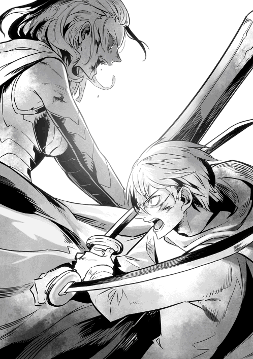
たまらずよろめいたヴェルマに対し、ショウは疾風のごとく間合いに飛び込む。
「これまで、何度戦ってきたと思う!? もはや、以前の俺だと思うな！」
「ば、馬鹿なっ、この短期間でっ」
おそらく初めて見せる、ヴェルマの狼狽ぶりだった。
真紅の瞳を大きく見開いてショウを見つめており、かつての覇気が微塵もなかった。そのまま間合いを開けるべく飛び退こうとしたらしいが、あいにくショウの方が速い。
「遅いぞ、ヴェルマ！」
双刀を同時に、斜め下方から逆袈裟斬りに振り抜いた。
くっきりと青い軌跡が二筋残り、これも完全には避けきれず、ヴェルマの胸の辺りを血で染めた。
「そ、そんなはずはないっ。いかにダメージを負っているとはいえ、おまえとの差はあきらかだったはずだ！」
完全に頭に血が上ったらしく、ヴェルマは剛力を生かして大剣を水車のように振り回す。たしかに凄まじいばかりの剣撃だし、当たれば無事に済むはずもないが──
それでもショウは、恐ろしい剣撃の乱舞をかいくぐるようにして間合いに飛び込む。
はっとしたヴェルマが剣を引いた途端、ショウは大喝して双刀を構えた。
「何度も言わせるなっ。いつまでもおまえに後れを取る俺じゃない!!」
「ほざけええっ」
ショウの双刀が唸りを上げてヴェルマの頭上を襲い、ヴェルマがそれを渾身の力で受け止める。その瞬間、ショウは反射的に相手の腹に膝蹴りを叩き込んでいた。
「──くっ」
さすがに倒れはしなかったものの、頑強なヴェルマもたまらず、よろよろと後退る。
そこへ、満を持してショウが襲いかかっていく。
「終わりだっ」
「まだ私にはこの力があるっ」
その一瞬、確かにヴェルマの瞳が光り、ショウを怪しく見据えた。これまで、ショウに対しては一度も使わなかった精神支配の力を使おうとしたのだ。
しかし、ショウは一瞬、大きく息を吸い込んだだけで、そのまま突っ込んで行く。
「実力差のある相手に、効くものか！」
「そんなはずはないっ」
歯軋りして、ヴェルマも飛び出す。
輝く大剣と双刀が薄闇の中で交差し、そして両者の身体がすれ違う。
「う......」
一拍の間を置き、脇腹を大きく裂かれたショウが、振り向きざまにがくっと片膝を突く。
左手に持った刀の一振りが、大地に力なく落ちた。
しかし......やや遅れてこちらを振り向いたヴェルマの傷はさらにひどく、身に纏った金属鎧が断ち割られ、身体の前が血で染まっていた。
「お......おのれ......こんなところで私が」
ヴェルマも剣が手から滑り落ちたが、彼女はそれでもまだ立っていた。
「み、道連れにしてやる......ショウ......」
最後の瞬間、ヴェルマは震える唇を吊り上げ、ニイッと笑った。
「永久なる闇よ、かの者を──のみこめっ」
もはや約束など忘れたのか、なんとソウルバイブルの奥義をぶつけようとした。コマンドワードの詠唱と同時に、黒々とした闇がヴェルマを中心に渦を巻き始めた。
かっと真紅の瞳を見開き、ショウを睨む。
「死ねぇえええ、デッドエンド！」
「俺は死なないっ」
ショウはとっさに、まだ残っていた右手の刀を全力でヴェルマに投擲した。雷光のような光を放つ闇の渦がこちらに殺到してくるのと、ほぼ同時だった。
周囲の木々をあまねく薙ぎ倒しつつ、真っ黒な衝撃波が真っ直ぐに襲ってきた時、ショウは確かにロクサーヌ達の悲鳴を聞いた気がした。
終章 故郷に立つ
しばらくの間、ショウは死んだというデマが、反乱軍や魔族達の間でかなり出回ったらしい。
......実際はそんなことはなく、ショウはただヴェルマとの戦いで負った傷を、ランガード湾近くの街で癒やしていただけである。
予定より長い療養にはなったが、それでも二十日ほどで、再び外を出歩けるようになっていたはずだ。
これも全て、最後に追いついたユウリ達三人が、まるで計ったように一致してショウに防御魔法をかけてくれたお陰だろう。
この三重の防御魔法のお陰で、ショウは死を免れたと言っても過言ではない。
反面、最後に投擲したショウの刀は見事にヴェルマの急所を貫き、あの勝負はショウの完全勝利に終わった。
......とうとう、あのとんでもない戦士を倒したのである。
もちろん、あの最後の戦いにおいては、比較的反乱軍の被害は少なかったとはいえ、ショウを始めとして大怪我を負った者はいる。
仲間内で言えば、ジェレミーがヴェルマによって最後に瀕死の重傷を負ってしまった。
ショウとは違い、彼は長らく生死の境をさまよっていたが──結局、ショウより十日ほど長く床に伏せった後、再び起き上がれるようになった。
一時はまた友人を亡くすのではないかとショウはかなり気を揉んだものだが、今ではそのジェレミーも、杖をついて歩き回れるまでになっている。
春が来れば、その杖もいらなくなるだろう。
密かに女性ウォーリアにファンが多いそうなので、喜ぶ仲間も大勢いるに違いない。
もちろんショウもジェレミーも、今はちゃんとソムニウムに戻っていた。
そして......ヴェルマの死は、この大陸に大きな影響をもたらした。
まず、あの戦いでわずかに生き残ったグールの戦士階級達は、戦場から逃れ、何処とも知れずに消えた。リシャールによれば、ショウ達が倒したグールの部隊は間違いなく彼らの主力だったので、「多少の生き残りがいたとしても、もう問題にならないよ」ということらしい。
ショウも同じ意見で、生き残った者は、おそらく船に乗って脱出してしまったのだろう。
もはや、二度とその行方を聞くことはないはずだ。
朗報はまだあり、後でロキが教えてくれたところによれば、あのヴェルマの死をもって、魔族軍の進軍も本当の意味で停止した。
最後まで魔族軍内に残っていた魔将四名が、ヴェルマが死んだことで、すっかり正気を取り戻してくれたからだ。
しかも、自分がヴェルマによって精神支配を受けていた記憶もちゃんと残っていて、その場で部下達の行い──つまり、上官である自分達を虜にしたという反逆に等しい行為を、喜んで不問にしてくれたらしい。
むしろ四人が四人とも、ヴェルマの術中に落ちていた自分達を恥じ、ヴォルザードの長子であるジェイルが送った使者に頭を下げ、「喜んで停戦に応じます」と言ってくれたようだ。
これは今後の交渉において、平和的な解決への一歩となるかもしれない。
なにしろ今や両軍共に、「これまでの魔族と人間との戦は、全て裏でグールが糸を引いていた」という事実が、完全に周知のものとなったからだ。
もはやグールの存在を疑う者はいない上に──クリスタリカの死によって、これまで彼女が何をやってきたのかも、明るみに出つつある。
つまり、大陸の歴史は正常な流れを取り戻しつつあるということで......ショウ自身は「もはや自分の役割は終わった」と考え始めていた。
戦士として戦う時は終わりを告げ......今や、新たな人生を始める時が来たのだ。
杖をついたジェレミーがショウを訪ねてきたのは、そろそろ冬も終わりに近付いた、快晴の日だった。
こいつにしては珍しく、「できれば、ユウリさん達も一緒に聞いてほしいんだけど」などと申し出てきて、ショウは首を傾げつつも、言われた通りに三人を呼んだ。
そして、いつものように、屋根裏部屋に等しい二階にジェレミーを招き、みんなでテーブルを囲む。
不思議なのは、なぜか計ったようにリシャールまで訪ねてきたことで、久しぶりに懐かしい友人達と顔を合わせることになってしまった。
「嬉しいが......なんでまた、二人で示し合わせたように来るんだ？ もしかして、それぞれ相手が見つかって、結婚でもするのか？」
ショウがカマをかけた途端、さっとユウリやロクサーヌ、それにユキナがこっちを見て、自分で言っておきながら、ショウは痛く後悔した。
そういえば、未だにショウはきちんとした返事をしていない。
「......おほん。それで、なにか深刻な話か？」
女性陣の視線に耐えかね、かろうじて話を戻すと、ジェレミーはなぜか満面の笑みを浮かべた。
「そろそろ国内も落ち着いたし、現在のところ、魔族との交渉も上手くいってるだろ？ 実際、彼らは元の領土へと全軍を引き上げつつある......君やジェイルさん達が中心になってやってくれた、和平交渉のお陰だね」
「うん、いいことじゃないか」
ユウリが煎れてくれた紅茶を啜りつつ、ショウは気安く頷く。
「ジェイルさんも、もうすぐ新たな魔王に即位するしな。収まるべきところに収まったということだろう。──で、それがどうかしたか？」
「だからさ、そろそろ僕らも、新しい代表というか、国王を決めないといけない気がするんだよ」
「国王ですって！」
「国王なのっ」
「......国王？」
ロクサーヌとユキナとユウリの声が、嘘のように綺麗に重なった。
そして、なぜか皆が例外なく、ショウの方を見るのである。
なんとなく落ち着かない気分になり、ショウは指でテーブルをこつこつ叩く。
「国王っていうか......代表者とかにした方がよくないか？ なんなら民主主義の世の中にして、大統領制でもいい。きっと、やりたい者もいるはずだ」
「まあ、大統領とかでもいいけどねぇ。君は、そっちの方がいいんだね？」
念を押されたのでこれにも頷きかけたが──そこで、ショウはようやく気付いた。
これは......もしかして、何か嫌な方向へ話が転がりかけているのではないだろうか？
もちろん、気のせいに決まっているが。
「一応尋ねるが、話を出すからには、もう適当な人物がいるんだよな？ 国王とか大統領になるのがふさわしいような？」
「安心したまえ」
今度はリシャールが悠然と頷いた。
「少なくとも、私とジェレミー君の見解は一致していて、二人とも異論なく推薦できるような人物がいるよ」
リシャールの落ち着いた声に、ショウはようやく破顔した。
彼は既にマスクを着けるのをやめていて、今は素顔を晒している。理知的な笑顔が、この際は救世主のように見えた。
「そ、そうか......ならいいんだ、ははっ」
ほっとして二人を見比べた。
「二人が推薦するなら、余裕だろうな。俺も多分、文句なんかないと思うぞ」
「そうか！」
「それはよかった」
ジェレミーとリシャールは大きく頷き、二人揃って天使のような笑みを見せた。両名共に人もうらやむ美形なので、曇りのない笑顔を見せた時の効果は大きい。
ショウもついにこやかに笑い、まだ湯気の立つ紅茶に手を伸ばす。
「で、誰だ？」
重ねて訊くと、二人共最高の笑顔のまま、ショウを指差した。これもまた、計ったように同時に。
「もちろん、君さ」
「君のことだよ」
「......は？」
ショウはティーカップを持ち上げる手を休め、呆然と二人を見返した。二人は特に悪びれた様子もなく、ニコニコと何度も頷いている。
ジェレミーなどは、「なるほど、大統領ねぇ。それもいいかもしれないな。となると、結婚した場合、女性は大統領夫人だね」などと、頭のてっぺんに花が咲いたようなセリフを吐いてくれた。
「大統領夫人！」
おまけに、それまで息を詰めたような顔で聞いていたロクサーヌが、椅子を後ろに倒す勢いで立ち上がって叫ぶ。
「斬新で、悪くない響きですわねっ。少なくともわたくしにふさわしいですわ！」
「えー、国王の方がいいなあ」
同じく紅潮した頬で妹──ユキナがとろんと天井を見上げた。
「ユキナは......おにいちゃんが国王で、ユキナは王妃の方が好きかも」
トドメに、ユウリまでそっと片頬に手を当てて遠い目をした。
「私はどちらでも。毎晩一緒にいられるのなら」
......なぜ夜なのかは置いて、ショウにしてみればとんでもない話である。
「待てコラっ。おれは絶対、国王も大統領もいらんっ」
反射的に自分も立ち上がってしまう。
「なんでさ？ 反乱軍の代表も国王も、似たようなものでしょ？」
信じがたいことに、ジェレミーは悪童のような笑顔でそんなことを吐かした。
口を開けたままふざけた童顔の友人を睨んでいると、リシャールが取りなすように口を挟んだ。
「まあまあ。現状だと、皆の投票で国王を決めようという話になっていてね。もちろん、最初は立候補する者がいたら、それが一番だろう──という話も出たんだが」
そこで、彼は深々とため息をつく。
「途端にその......デイル君が『俺がいっちょ立候補するぜぇえええええ』と勢いよく申し出てしまってねぇ。まだ話が出たばかりだが、既に大きな問題になっているんだよ？ 他の仲間から散々『ヤツが本当に国王にならないように、君を引っ張り出せっ』という声が上がっているわけで」
「そうなんだよねぇ」
ジェレミーが機嫌良く後を引き取る。
「だから、僕らが選ばれて、全然表に出てこない君に伝えにきたわけ。選挙というか、みんなで投票するから、今から心構えをしておきなよと」
そこでふと何事か考え、思い出を辿るように目を細めた。
「そういや、アンダーワールドで最初に反乱を志した時、やはり僕は最初に君を動かすきっかけになったはず。ならば、今回もやはりね？」
「なにがやはりね、だよっ。晴れ晴れした笑顔で言うな、コラ！」
ショウはガミガミと唾を飛ばす。
「だいたい俺は、フォリナーであって、この大陸の人間じゃないだろっ。そんなヤツが国王の座についてどうする!? 不満の声が上がるに決まってるじゃないか、いや絶対不満が噴出するに違いないっ」
追い詰められたショウが拳を固めて力説すると、ジェレミーは自分も立ち上がって、さっとショウを指差した。
「よし、言質はとったよ！」
「な、なにがだよ」
「だから、全国民が投票して、君が選ばれれば文句ないだろ？ 選挙で選ばれて国王に指名されるなら、少なくとも民意は君を選んだってことさ。そうなれば誰が文句言おうと、通るもんじゃない」
「み、民意て」
こいつの方が政治家にふさわしいんじゃないのかと、ショウはたじたじとなった。
「そうじゃなく、俺はだな──」
そこでショウは、いつになく興奮気味のジェレミーと、なぜか熱っぽい目で自分を見るリシャールを見比べ、遅まきながらこの連中に何を言っても無駄だと理解した。
せめて援護射撃をと思い、まだ座ったままのユウリ達を見たが......彼女達は相変わらず、ぼおっと天井を眺めている最中だった。
「大統領と大統領夫人ですか......うふふ」
「ユキナが王妃になるのね......」
「......恥ずかしいし、照れますね」
ロクサーヌとユキナとユウリ、三名揃って表情が陶然としていた。話にならないとは、このことだろう。
「し、しかし俺はよそ者だし」
かろうじて呟くと、テーブルの上に両腕の肘を立て、その上に顎を載せたリシャールが、なぜか眩しそうにショウを見た。
「私もよそ者だよ、ショウ君。......しかし今は、一緒についてきてくれた仲間と一緒に、この大陸を第二の故郷にしたいと考えている。真面目な話、そんな私から見ても、君が国王になってくれるのは、嬉しいことだけどね」
しばらくリシャールを見つめ返し、ショウはそっと口にした。
「第二の故郷......か」
確かにショウも、もはやこの世界を単なる一時的な滞在場所とは思えなくなっている。いろんなことがありすぎたからだ......楽しいことも、辛いことも。
未だに日本に戻る術が見つからない以上、リシャールの言いようはひどくショウの身に染みた。
......ただ、直後にジェレミーが笑顔で吐き出したセリフで、台無しになってしまったが。
「じゃあ、決まりだね！」
その一言で我に返り、ショウは思わず怒鳴っていた。
「冗談じゃないっ。それはそれ、これはこれだっ。俺は平和主義者だって言ってるだろうがあっ。国王も大統領もごめんだ!!」
「じゃあ、平和主義の国王を目指せばいいじゃないか」
「そうだ、君ならなれる。応援しているよ！」
友人達の言い草に、ショウは思わず言葉を失った。彼らが、度しがたいほど本気で言っていることが、よくわかってしまったからだ。
予想もしていなかった未来が......もうすぐそこまで来ている。
──ショウにとって今確かなことは、どうやらそれだけのようだった。
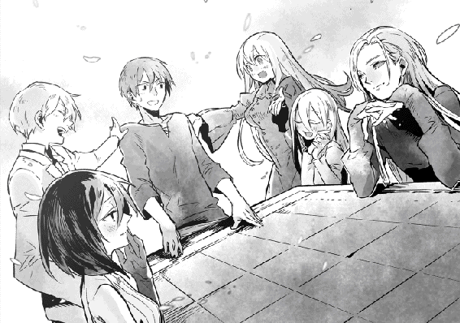
あとがき
ここまでお付き合いくださった方達に、心よりお礼を申し上げます。
本シリーズは、物語としては恵まれていた気がします。
一巻を出した時点で続刊が可能なほど売れてくれましたし、シリーズ化にするのが難しい昨今なのに、こうして六巻まで続きました。
天野英さんという素晴らしい描き手に恵まれ、毎回、素敵な絵が彩りを添えてくれました。言うことないですね、本当に。
ただ、物語の中であえて結論を書かずに放置していたことが幾つかあります。
とはいえ、小さい謎は想像すればわかる程度のことなので、重要度も低いし、ここではあえて書きません。
読んだ方が気になるのは、ロクサーヌやユキナやユウリ達と、ショウのその後の関係でしょうか。これ、結論は書いてませんが、完全にわざとです（おい）。
私はだいたい、明確に決まっているメインヒロインがいるならともかく、そうでない場合、「最後は誰それと結ばれて、主人公はめでたしめでたし」という風にしません。
それだと、他にも真剣に好きだった女の子がいるのに、結果的にその子達が当て馬になっちゃうなと思い、結論は出さないことが多いです（ただし、例外はあります）。
ショウや彼女達のこの先は、皆さんが勝手に「きっとあの子と一緒になったんだぜ？」と思ってくださればいいかなと。
なんでしたら、ずっと一人で孤高を保ったでもいいし、「なぜかジェレミーといつまでも腐れ縁で（以下略）」とか決めつけてくださっても、オーケーです。
私が結論を書いてない以上、皆さんが想像してくださった「その後」こそが、正解です。
この物語で大事なのは、戦いの末、ショウは平和を勝ち取った「今のこの世界」で、みんなと一緒に今後も生き抜くことに決めた──という部分だと思いますし。
この本を出すに辺り、ご助力をくださった全ての方達にお礼を申し上げます。
最後はもちろん、この本を手にしてくださったあなたに、精一杯の感謝を。
吉野 匠 拝
著者プロフィール
吉野 匠
Yoshino Takumi
シリーズ累計120万部を突破した『レイン』（アルファポリス）を筆頭に、『Ｗヒーロー』（角川書店）、『この世界は僕らが設定したはずなのに!? 創造主兄妹の異世界ノート』（宝島社）等、幅広い作品で精力的に活躍中。
２０１５年で作家デビュー10周年を迎えた。
ＨＰ「小説を書こう！」
ショウVI ─次代の王─
2016年１月１日発行 ver.1.0
著 者 吉野 匠
発行所 TOブックス
〒150-0045 東京都渋谷区神泉町18-８
松濤ハイツ２Ｆ
03-6452-5678（編集）
0120-933-772（営業フリーダイヤル）
Ⓒ2016 Takumi Yoshino
※無断で複製・複写・データ配信などをすることは、かたくお断りいたします。
本電子書籍は下記にもとづいて制作しました
ショウVI ─次代の王─
発行日 2015年12月１日 第１刷発行
本作品の全部または一部を無断で複製、転載、配信、送信したり、ホームぺージ上に転載することを禁止します。また、本作品の内容を無断で改変、改ざん等を行うことも禁止します。
本作品購入時にご承諾いただいた規約により、有償・無償にかかわらず本作品を第三者に譲渡することはできません。
本作品を示すサムネイルなどのイメージ画像は、再ダウンロード時に予告なく変更される場合があります。
本作品は縦書きでレイアウトされています。
また、ご覧になるリーディングシステムにより、表示の差が認められることがあります。